WELCOME TO COSMOS
A guided tour of the cosmos by the Department of Management Science and Technology of the Athens University of Economics and Business.
Table of contents
-
Cosmos
- Difference between Cosmos and Universe
- Origins of the Universe
- Religious Cosmology
- Flat-Earth Theory
- Simulation Theory
- Universe Facts
- The Cosmic Table
- End Of Universe
- Historic Milestones
- Five Weird Things That Happen in Outer Space
- Career in Space
- The Creation of the Universe According to Greek Mythology
- Everything You Need to Know About Chaos
-
Continents
- Africa
- Antarctica
- Asia
- Europe
- North America
- Oceania
-
Comets
- Hale-Bopp
- C/2011 W3 (Lovejoy)
- 67P/ Churyumov-Gerasimenko
- 81P/Wild (Wild 2)
-
Countries
- Albania
- Algeria
- Andorra
- Angola
- Antigua and Barbuda
- Argentina
- Armenia
- Australia
- Austria
- Azerbaijan
- Bahamas
- Bahrain
- Bangladesh
- Barbados
- Belarus
- Belgium
- Belize
- Benin
- Bhutan
- Bolivia
- Bosnia and Herzegovina
- Botswana
- Brazil
- Brunei
- Bulgaria
- Burkina Faso
- Burundi
- Cabo Verde
- Cambodia
- Cameroon
- Canada
- Central African Republic
- Chad
- Chile
- China
- Colombia
- Comoros
- Congo
- Costa Rica
- Cote d'Ivoire
- Croatia
- Cuba
- Cyprus
- Czech Republic
- Denmark
- Djibouti
- Dominica
- Dominican Republic
- Ecuador
- Egypt
- El Salvador
- England
- Equatorial Guinea
- Eritrea
- Estonia
- Eswatini
- Ethiopia
- Fiji
- Finland
- France
- Georgia
- Germany
- Ghana
- Greece
- Guatemala
- Honduras
- Iceland
- India
- Indonesia
- Iran
- Iraq
- Ireland
- Israel
- Italy
- Japan
- Kazakhstan
- Kenya
- Kyrgyzstan
- Kiribati
- Liechtenstein
- Lithuania
- Luxemburg
- Mexico
- Monaco
- New Zealand
- Nicaragua
- Norway
- Peru
- Philippines
- Romania
- Russia
- San Marino
- Scotland
- Slovakia
- Slovenia
- Spain
- Switzerland
- Taiwan
- Uganda
- Ukraine
- United Arab Emirates
- United States - Click here to see the States
- Uruguay
- Uzbekistan
- Venezuela
- Vietnam
- Yemen
- Zambia
-
Planets
- Jupiter
- Mars
- Mercury
- Neptune
- Saturn
- Uranus
-
Dwarf Planets
- Pluto
- Eris
- Haumea
-
Earth-like Planets
- Kepler-452b
- Proxima Centauri b
- TRAPPIST-1e
-
Galaxies
- Cigar
- Cosmos Redshift 7
- Hoag's Object
- Mayall's Object
- Milky Way
- Triangulum Galaxy
- Sombrero Galaxy
- Sculptor Galaxy
-
Natural Satellites
- Moon
- Europa
- Io
- Phobos
-
Space Exploration
- Major Milestones
- The Moon Race
- Modern Spaceflight
- NASA
- SpaceX
-
Black Holes
- Primordial Black Holes
-
Stars
- Antares
- Betelgeuse
- Sun
- Polaris
- Vega
- Earendel
-
Asteroids
- Ceres
- Pallas
- Vesta
-
Oceans
- Atlantic Ocean
- Arctic Ocean
- Indian Ocean
- Pacific Ocean
-
Extraterrestrial life
- Kardashev scale.
- Fermi paradox.
-
Cosmos Quotes
- Quote 2.
- Quote 3.
- Quote 4.
- Quote 5.
- Quote 6.
-
Zodiac
-
Frequent questions
- Question about multiple universe
-
Memes
- Meme 2.
- Meme 3.
- Meme 4.
- Meme 5.
-
Cosmos Books
- The Human Cosmos: A Secret History of the Stars
- Constellations: The Story of Space Told Through the 88 Known Star Patterns in the Night Sky
- Cosmos
- Missions To Mars
- Stars and Planets: The Most Complete Guide to the Stars, Planets, Galaxies, and Solar System
- Sun Moon Earth
- The Mysteries of the Universe
- The Science of Interstellar
-
Cosmos Movies
- Gravity
- Interstellar
- Europa Report
- Apollo 13
- Ad Astra
-
Cosmos Series
- Cosmos: A Personal Voyage
- Cosmos: A SpaceTime Odyssey
-
Cosmos Songs
- Rocket Man by Elton John
- Space Oddity by David Bowie
- Fly Me To The Moon by Frank Sinatra
- Man On The Moon by R.E.M.
- Across The Universe by The Beatles
- Here Comes The Sun by The Beatles
- Spaceman by The Killers
-
Admired Personalities
- Mahatma Gandhi
- Margaret Hamilton
- Nelson Mandela
- Martin Luther King
- Albert Einstein
- Stephen Hawking
- Neil Armstrong
- Alan Turing
- Johann Sebastian Bach
- Wolfgang Amadeus Mozart
- Ludwig van Beethoven
- Margaret Thatcher
- Elon Musk
-
Youtube Videos
- Earth 101 | National Geographic
- Mars 101 | National Geographic
- Venus 101 | National Geographic
-
Astrophotography
- Pillars Of Creation
- Hubble eXtreme Deep Field
- The Blue Marble
- Pale Blue Dot
-
Sports
- Top 10 Sports
- Football
- Cricket
- Tennis
- Volleyball
- Baseball
- Golf
- Basketball
- American Football
- Hockey
- Rugby
- Handball
-
Mountains
- Top 14 highest Mountains
- Mount Aconcagua
- Mount Everest
- Mount Kosciuszko
- Mount Kilimanjaro
- Swiss Alps
-
Wonders of the World
- Seven Wonders of the Ancient World
-
Facts About Space
- #1
- #2
- #3
- #4
- #5
- #6
- #7
- #8
- #9
-
Fine Arts
- Architecture
- Painting
- Sculpture
- Literature
- Music
- Cinema
-
Religions
- Christianity #### Divisions of Christianity
- Buddhism
- Atheism/Agnosticism
- Taoism
- Islam
- Hinduism
- Judaism
- Confucianism
- Twelve Olympians
- Druze
- Gnosticism
-
Volcanos
- Sangay
- Santa Maria
- Stromboli
- Mount Ethna
-
States
- Alaska
- Arizona
- Arkansas
- California
- Colorado
- Connecticut
- Delaware
- Florida
- Georgia
- Hawaii
- Idaho
- Illinois
- Indiana
- Iowa
- Kansas
- Kentucky
- Louisiana
- Maine
- Maryland
- Massachusetts
- Michigan
- Minnesota
- Mississippi
- Missouri
- Montana
- Nebraska
- Nevada
- New Hampshire
- New Jersey
- New Mexico
- New York
- North Carolina
- North Dakota
- Ohio
- Oklahoma
- Oregon
- Pennsylvania
- Rhode Island
- South Carolina
- South Dakota
- Tennessee
- Texas
- Utah
- Vermont
- Virginia
- Washington
- West Virginia
- Wisconsin
-
Foods
- Pizza
- Spaghetti
- Burger
- Buritto
- Crepe
- Souvlaki
Cosmos
About the term Cosmos
- According to Cambridge dictionary, the cosmos is the universe considered as a system with an order and pattern.
Source cambridge.org
- The philosopher Pythagoras first used the term kosmos (Ancient Greek: κόσμος, Latinized kósmos) for the order of the universe. The cosmos is another name for the Universe. The cosmos, and our understanding of the reasons for its existence and significance, are studied in cosmology – a broad discipline covering scientific, religious or philosophical aspects of the cosmos and its nature. Religious and philosophical approaches may include the cosmos among spiritual entities or other matters deemed to exist outside our physical universe.
Source wiki
Difference between Cosmos and Universe
The terms cosmos and universe are equivalent since they both refer to the same thing: the world or nature. However, universe appears to have a narrower scope than cosmos, whereas cosmos denotes a broader and more complicated system.
Source Difference between Cosmos and Universe
Origins of the Universe
The most well-supported idea for the creation of our universe revolves around an event known as the big bang. This theory arose from the discovery that other galaxies are rapidly moving away from our own in all directions, as if driven by a powerful old explosive force.
In the 1920s, a Belgian priest called Georges Lemaître proposed the big bang theory, claiming that the cosmos began with a single primordial atom. The concept was bolstered by Edwin Hubble's discoveries that galaxies are rushing away from us in all directions, as well as Arno Penzias and Robert Wilson's discovery of cosmic microwave radiation in the 1960s, which they interpreted as echoes of the big bang.
The pace of the big bang has been clarified due to further research. Here's the theory: The cosmos was exceedingly compressed in the first 10^-43 seconds of its existence, less than a million billion billionth the size of a single atom. The four fundamental forces—gravity, electromagnetism, and the strong and weak nuclear forces—are considered to have been forged into a single force in such an incomprehensibly dense, energetic state, but our present theories haven't yet figured out how such a single, unified force would work. We'd need to understand how gravity works on a subatomic scale to pull this off, something we currently can't do.
The extremely close quarters are also believed to have allowed the universe's earliest particles to mix, blend, and settle into approximately the same temperature. Then, in a fraction of a second, all that matter and energy spread outward more or less uniformly, with minor differences given by quantum-scale fluctuations. Inflation, a hypothesis of rapid expansion, could explain why the universe's temperature and matter distribution are so uniform.
The cosmos continued to grow after inflation, although at a considerably slower rate. It's still a mystery what fueled inflation.
Video Origins of the Universe 101 | National Geographic
Source National Geographic
Religious Cosmology
Religious Cosmology as a term is a way to explain the origin, the evolution and the fate of our universe from a religious viewpoint. It is claimed that there are multiple religious myths making hypothesis on how and why everything is the way we know it.
- Catholics believe God is an omnipotent creator of the universe due to the teachings of St Augustine (ex nihilo) and the book of Genesis. According to their beliefs, the creation story is not supposed to be taken literally. Catholic Christians understand these stories of creation in a symbolic way linked to the nature of the world and humanity. Pope John Paul II insisted on the fact that Catholic belief and science are compatible. The theory of evolution is not rejected totally because it can be considered as part of God’s plan.
- Some Christians support a more fundamentalist approach. According to their beliefs, the miracle of creation as it is described in the Bible is a logical explanation of what really happened – this thesis is widely known as creationism. Hence, the creation of the universe took place in six calendar days, based on the book of Genesis. This is linked with the opinion that the Bible is the voice of our flawless God.
- In the Jewish religious theory, God is the creator and source of all elements of the universe. Jewish also follow the book of Genesis, the first book of the Torah (Jewish written law). Most Orthodox Jews accept the Genesis like the ultimate written gift from God, as it was revealed to Moses on Mt Sinai. The creation of the universe is celebrated weekly by observing the Sabbath and through the festival of Rosh Hashanah.
- The Ancient Greeks believed that in the beginning, the only thing that existed was Chaos, or in other words, nothingness. Then all of a sudden, from light, came Gaia (Mother Earth). Then form Gaia came Uranus (the sky). Kronos the Titan, Gaia's son, married his sister Rhea and gave birth to 6 children,the gods. When Zeus grew up, he decided to fight the Titans. He won with the help of the hundred handed ones and the cyclops. After the war he cut his father Kronos into pieces and threw them into Tartarus (the underworld). Zeus was, from then on, the leader of the gods. Hades took over the Underworld. Poseidon took over the oceans. Zeus married his sister Hera and crowned her Queen of Olympus.
Source Religious Cosmology, Origins of the Universe, The Greek creation myth
Flat-Earth Theory
The flat Earth theory is an old and non-proven thesis according to which the Earth's shape is as a plane or disk. Many ancient civilizations, including Ancient Greece and China until 1600, believed in a flat Earth cosmography. These ideas nowadays are promoted by conspiracy clubs, despite scientific proof about Earth's sphericity. Flat-Earth stories are undoubtebly linked to elementary scientific errors that can be debunked.
Source Flat Earth
Video Fighting Flat-Earth theory
Video What If Earth Was in Fact Flat?
Simulation Theory
The simulation hypothesis implies that all of existence is an artificial simulation, such as a computer simulation, to explain the nature of existence. Some versions heavily depend on the creation of a simulated reality, a technology that would be able to persuade the simulation's residents that it really existed. The simulation hypothesis bears close resemblance to a number of other skeptical scenarios that have been proposed throughout philosophy's history. The hypothesis in its current form was popularized by Nick Bostrom. The idea that such a hypothesis is compatible with all perceived human experiences is linked with major epistemological implications, resulting in philosophical skepticism. The hypothesis is also very popular in science fiction, where it has been used as a central plot mechanism in many stories and films.
Video Is Reality Real? The Simulation Argument
Source Simulation Theory
Universe Facts
- There are more stars in the universe than grains of sand on all the beaches on Earth. That’s at least a billion trillion!
- A black hole is created when big stars explode. Its gravitational force is so strong that nothing can escape from it – luckily the closest black hole is about 10,000 light-years from Earth.
- When venturing into space, astronauts wear spacesuits which have to be warmed, cooled, pressurised and supplied with fresh air. This takes six hours for them to put on!
- The universe has no centre and is constantly expanding (getting bigger) every second – making it impossible to reach the edge.
- The Earth is about 4.5 billion years old – but that’s only a third of the age of the universe – which is 13.5 billion years old!
- The Earth is tiny in comparison with the rest of the universe – it could fit into the sun 1.3 million times.
- The moon is the reason why we have tides and waves on Earth. Along with the sun, it moves billions of tonnes of water each day.
- A day on Mercury lasts longer than its year! Mercury moves around the sun faster than any other planet – making its year the equivalent of 88 Earth days. While a day on Mercury – the interval between one sunrise and the next – lasts 176 Earth days!
- In 2006, Pluto was reclassified as a ‘dwarf planet’ after 76 years classified as the outermost planet in our solar system since its discovery in 1930.
- Only about 4.9% of the mass-energy of the universe is atoms: the stuff of which you, I, the stars and galaxies are made, and only half of that has been discovered with telescopes. Thus, 95% of the universe is invisible.
- In space there is no atmosphere, which means that sound has no medium to travel in order to be heard. Astronauts use radios to stay in touch while in space because radio waves can still be sent and received.
- Despite the search for intelligent signals, no evidence of intelligent extraterrestrial life has yet been found. In fact, there is a good argument that if such life forms exist out there, we should not only see signs of them, but that they should have already come here.
- Scientists detected a radio signal in space from 5 billion light-years away.
- The moon moves 4 cm away from Earth every year.
Source natgeokids, indiatoday, SkyatNightMagazine, facts.net
The Cosmic Table
| Topic | First Appearance |
|---|---|
| Observable Universe | 0 sec. |
| Superclusters | 11,000,000,000 yr. |
| Clusters of Galaxies | 6,000,000,000 yr. |
| Galaxies | 700,000,000 yr. |
| Star Clusters | 500,000,000 yr. |
| Planetary Systems | 180,000,000 yr. |
| Stars | 180,000,000 yr. |
| Earth | 9,500,000,000 yr. |
Source The Cosmic Table
End of the Universe
Unfortunately, billions of years from now, the universe will be destroyed completely. Scientists cannot estimate or described this natural phenomenon of vital importance, but they can assume the following.
The big rip
Not only is our universe expanding, but it's expanding equally in all directions. As a result, galaxies are getting farther apart. The space within each galaxy is also expanding, but at the moment, the galaxy's own gravity is strong enough to hold it together.
The big rip would be initiated once the pull of the universe's expansion gets stronger than the gravity holding galaxies together. Galaxies would tear apart first, followed by smaller black holes, planets and stars.
Eventually space would start expanding faster than the speed of light, and become stronger than the forces holding atoms together. Therefore, they'd break down into individual particles. The whole universe would become a void of single particles unconnected to anything around them, drifting aimlessly in a timeless universe.
The big crunch
This is the most optimistic scenario. If scientists are wrong about dark energy and there's actually less of it than we assume, or its grasp on matter decreases over time, gravity would one day become the most significant force in the universe.
If that occurs, then after trillions of years, the rate that the universe expands would decrease and the universe would start to shrink. Galaxies would crash into each other and merge as the universe starts collapsing on itself.
A shrinking universe would drive temperatures higher. The cosmic background radiation would be so hot that it would cook stars from the outside in. The intense heat would rip atoms apart in the final minutes before the Big Crunch. Black holes would then swallow up everything since objects are packed so tightly into dense clumps.
The black holes would then converge into one mega black hole that contains the entirety of the universe. The Big Crunch moment would happen instantly as the black hole swallows itself.
Some astrophysicists believe that the universe has bounced back and forth between expansion and contraction, so there's definite hope for a universe rebirth in this scenario, although we will not be able to witness it.
The big freeze or heat death
In this last end-of-the-universe scenario, matter would stay intact rather than getting torn apart, but would slowly decay into radiation as the universe expands.
Right now the universe is not uniform — it's speckled with clumps of matter and energy in the form of things like galaxies, stars, and black holes. But the expansion would stretch everything out until everything is evenly spread through the universe. When that occurs, objects can gain or lose energy. The gas clouds that form stars would dissipate, black holes would evaporate and eventually even light particles would fizzle out. The universe would be completely snuffed out forever.
Source 3 ways the Universe might end
Historic Milestones
Source EarthSky
Five Weird Things That Happen in Outer Space
Space is so complex, that most probably it will shock you. Specifically, invisible electromagnetic forces surround it, that we usually don’t feel. What’s more, it is filled with weird types of matter that we never experience on Earth. Below are mentioned five unearthly things that take place mainly in outer space: 1. Plasma 2. Extreme Temperatures 3. Cosmic Alchemy 4. Magnetic Explosions 5. Supersonic Shocks
If you want to learn more information about the weird things happen in outer space you can visit the origin source : nasa
Career in Space
Let's see nine careers options if universe is your broad area of interest.
- Astronomy
- Astronauts
- Space Technology
- Engineering
- Space Research/Academics
- Space Law
- Space Tourism
- Space Architecture
- Space Medicine/Psychology
If you want to read more information about careers in space you can visit the origin source : jobs
The Creation of the Universe According to Greek Mythology
At first, there was only chaos. Then out of the void appeared Night and Erebus, the place where death dwells. Everything else was empty, silent and dark. Then Love (Eros) was born, bringing a start to order. From Love came Light and Day. Once there was Light and Day, Gaea the earth appeared.
Then Erebus slept with Night, who gave birth to Aether the heavenly light, and then to Day the earthly light. Then Night alone produced Doom, Fate, Death, Sleep, Dreams, Nemesis, and others that come to man out of darkness.
Meanwhile Gaea alone gave birth to Ouranos the heavens. Ouranos became Gaea's mate, covering her on all sides. Together they produced the three Cyclops, the three Hecatoncheires, and twelve Titans.
Source greekmythology
Everything You Need to Know About Chaos
Today's meaning of chaos is quite different from what the ancient Greeks understood. We use "chaos" in order to describe something that is completely confusing. For instance, if a room is cluttered, it is often defined as "chaotic." A lot of people do not know that the word "chaos" is derived from ancient Greece. Here is some more information about this primitive existence.
1.Chaos Existing Before Anything Else.
According to Greek mythology, chaos is the first to ever exist, an integral part of the Greek creative story, explaining where the gods and goddesses came from. As the story tells, chaos came before anything else, from which primitive gods and goddesses were born. However, there is some debate as to which of these gods and goddesses really arose from chaos. Most stories state that Eleves, the darkness, and Nuxe, the night, were undoubtedly born of chaos. However, other stories explain that Gaia, Tartarus, and Eros were also among the early gods and goddesses.
2.Chaos is Most Often Described as a Place.
Unlike many other stories in Greek mythology, it is important to understand that chaos is not a primitive god or goddess. Instead, chaos is presented as a place that exists separately from the influence of gods and goddesses. Hesiod, one of the first writers to tell the story of Greek mythology, described chaos as an area above the underworld and under the sky. Chaos came before anything else, so it was usually described as dark and foggy.
Source greekboston
9 of the most mind-blowing facts about the Universe
1.There is a supermassive black hole at the heart of every galaxy
2.There is a supermassive black hole at the heart of every galaxy
3.Approximately 95% of the Universe is invisible
4.The Universe was born
5.Most of the stuff in the Universe has repulsive gravity
6.The Sun is producing only a third of the neutrinos expected
7.Most planetary systems are different from ours
8.The first gravitational waves detected came from a binary black hole system nobody predicted
9.We appear to be alone
Source skyatnightmagazine
Continents

Africa

Population: 1,275,920,972 (2018)
Description
Africa has the world's second place in both size and population, following Africa. It covers an area of about 30.3 million square kilometres, including the surrounding islands, and occupies 6% of the Earth's total surface area and 20% of the total land area of the planet. According to the average population estimate for 2018, it's population was estimated at 1.3 billions ,about 16% of the world's population and the youngest of all continents, with 50% of Africans being 19 years old or younger.
About it's surroundings, it has the Red Sea and the Suez Canal to the northeast, the Mediterranian Sea to the north, the Atlantic Ocean to the west and the Indian Ocean to the southeast. Africa includes Madagascar and several archipelagos. There are 54 fully recognised states, eight regions and two de facto independent states with limited or no recognition. Africa's largest country by area is Algeria and by population is Nigeria.
Source wiki
Antarctica

Population: 1,000 to 5,000 (Seasonal)
Description
Antarctica is the southernmost continent on Earth, where the geographic South Pole is located. It is situated in the Antarctic region of the Southern Hemisphere, almost entirely south of the Antarctic Circle, and is surrounded by the Southern Ocean. With an area of 14.0 million square kilometres, it is the fifth largest continent on the planet after Asia, Africa, North America and South America. For comparison, Antarctica is twice the size of Australia. About 98% of Antarctica's surface is covered by ice with an average thickness of at least 1.9 km.
Antarctica is on average the driest, coldest and windiest continent with the highest average elevation. Since it has an annual precipitation of 200 mm along the coast and much less inland, it is considered a polar desert. It holds frozen about the 70% of fresh water, which if melted would make the global sea levels to raise by over 60 metres (200 ft). Antarctica's lowest measured temperature,and also Earth's, is −89.2 °C (−128.6 °F). Only cold-adapted organisms can live in Antarctica, including many species of algae, animals (for example mites, nematodes, penguins, seals and sloths), bacteria, fungi, plants and protists. The vegetation, where it occurs, is of tundra type.
Source wiki
Asia

Population: 4,560,667,108 (2018)
Description
Asia is the largest and most populous of all the planet's continents, with its bigger part being located in the Eastern and Northern Hemispheres. With the continent of Europe it makes the continental landmass of Eurasia , and with both Africa and Europe the continental landmass of Afro-Eurasia. Asia occupies an area of 44,579,000 square kilometres (17,212,000 sq mi), which accounts for about 8.7% of the total surface area and 30% of the land area of the planet. Asia, which has been hosting the biggest part of the human population, was the birthplace of many of the earliest civilizations. Its 4.7 billion inhabitants make up about 60% of the world's population.
Regarding its surroundings, the continent is bordered by the Pacific Ocean on the east, by the Indian Ocean on the south, and by the Arctic Ocean on the north. Asia's border with Europe is a human construct, as there is not any physical and natural separation between them. The division of Eurasia into two continents is a result of the several East–West differences regarding their cultures, languages and ethnicities. A commonly accepted division places Asia east of the Suez Canal, which separates it from Africa; and east of the Turkish Straits, the Ural Mountains and the Ural River, and south of the Caucasus Mountains and the Caspian and Black Seas, which separate it from Europe.
Source wiki
Europe

Population: 746,419,440 (2018)
Description
Europe is located entirely in the Northern Hemisphere and in the Eastern Hemisphere. It encompasses the westernmost peninsulas of the continental mass of Eurasia and shares the continental mass of Afro-Eurasia with Asia and Africa. It is surrounded by the Arctic Ocean to the north, the Mediterranean Sea to the south, the Atlantic Ocean to the west, and Asia to the east. Europe's commonly accepted borders with Asia are the Ural River, the Caspian Sea, the watershed of the Ural Mountains, the Greater Caucasus, the Black Sea and the waterways of the Turkish Straits. Despite most of its borders are land borders, Europe's great physical size and important history are enough for it to be considered its own continent.
By covering about 10.18 million km2 (3.93 million sq mi) and 2% of the Earth's surface (6.8% of land area), Europe is considered the second-smallest continent. Europe is organized into about fifty different sovereign states, out of which Russia is the largest one, since it spans 39% of the continent, and the most populous one, since it comprises about 15% of the continent's population. In 2018, Europe's total population was about 746 million, which translates to 10% of the Earth's population. The continent's climate is heavily influenced by warm Atlantic currents that moderate summers and winters across most of its land. In places away from the sea, seasonal differences are a lot more intense than in those near the coast.
Source wiki
North America

Population: 592,296,233 (2021)
Description
North America is located in the Nothern Hemisphere and for its main part in th Western Hemisphere. Accordingly to the 6 continents theory, it can be considered as a subcontinent of America. It is surrounded by the Arctic Ocean to the north, by South America and the Caribbean Sea to the southeast, by the Atlantic Ocean to the east, and by the Pacific Ocean to the west and south. Greenland is considered as part of North America geographically due to the fact that it's located on the North American Tectonic Plate.
North America occupies an area of about 24,709,000 square kilometers (9,540,000 square miles), which translates to about 16.5% of the planet's land area and about 4.8% of its total surface. It is considered the third largest continent concerning its area, after Asia and Africa and the fourth concerning its population, following Asia, Africa and Europe. According to the United Nations average population estimation for 2021, its population is estimated at 596,592,000 inhabitants, about 7.6% of the world's population.
Source wiki
Oceania

Population: 41,570,842 (2018)
Description
Oceania was traditionally divided into the regions of Micronesia, Melanesia and Polynesia. It is located in both Eastern and Western Hemispheres, covering a land area of 8,525,989 square kilometres (3,291,903 sq mi) and hosting over 41 million people. Oceania, in comparison with the other continents, is the smallest one in size and the second least populated continent after Antarctica.
The continent has a variety of economies and cultures, since it has some of the higly developed countries with globally competitive financial markets such as Australia, New Caledonia, New Zealand, French Polynesia and Hawaii, but also some of the less developed economies like the ones of Papua New Guinea, Indonesian New Guinea, Kiribati, Vanuatu and Tuvalu. It also includes medium-sized economies of islands such as Palau, Fiji and Tonga. Australia is the number one country in Oceania both in size and population, with Sydney being the largest city.
Source wiki
South America

Population: 423,581,078 (2018)
Description
South America belongs mainly in the Southern Hemisphere and entirely in the Western one. Accordingly to the 6 continents theory, it can also be considered as the southern subcontinent of a single continent, America.
Regarding its borders, it has the Pacific Ocean on the west, the Atlantic Ocean on the north and east and North America and the Caribbean Sea on the northwest. South America includes twelve sovereign states, two dependent territories and one internal , French Guiana. Furthermore, the ABC islands of the Kingdom of the Netherlands, Ascension Island , Bouvet Island (dependency of Norway), Panama, and Trinidad and Tobago can also be considered parts of the continent.
South America covers a land area of 17,840,000 square kilometers (6,890,000 sq mi). In 2018, its population was estimated at about 423 millions. South America is the fourth largest continent by area, following Asia, Africa, and North America and the fifth largest by population, following Asia, Africa, Europe, and North America. The continent's most populous country is Brasil, hosting more than 50% of South America's population.
Source wiki
Comets

owned by wiki
Description
"A comet is an icy, small Solar System body that, when passing close to the Sun, warms and starts to release gases, a process that is called outgassing." This produces a visible atmosphere and a tail. These phenomena happens due to the effects of solar radiation and the solar wind acting upon the nucleus of the comet. Comet nuclei range from a few hundred meters to tens of kilometers across and are composed of loose collections of ice, dust, and small rocky particles. The coma can be up to 15 times Earth's diameter, while the tail may stretch beyond one astronomical unit. An astronomical unit is the distance from Earth to Sun or aprox. 150 million kilometeres. If sufficiently bright, a comet may be seen from Earth without the aid of a telescope and may subtend an arc of 30° (60 Moons) across the sky. From the ancient times people have been observing and recording comets.
Source wiki
Oumuamua

owned by nasa
Description
The first known interstellar object to visit our solar system, was discovered Oct. 19, 2017 by the University of Hawaii’s Pan-STARRS1 telescope. While originally classified as a comet, observations revealed no signs of cometary activity after it slingshotted past the Sun on Sept. 9, 2017 at a blistering speed of 196,000 miles per hour (87.3 kilometers per second). It was briefly classified as an asteroid until new measurements found it was accelerating slightly, a sign it behaves more like a comet.
“For decades we’ve theorized that such interstellar objects are out there, and now―for the first time―we have direct evidence they exist,” said Thomas Zurbuchen.
source nasa
Hale-Bopp

owned by wiki
Description
Comet Hale-Bopp (formally known as "C/1995 O1") is regarded as one of the most widely viewed comets in history. The comet that reached close to Earth in 1997 is also known for being unusually bright. It was visible to the naked eye for 18 months, thus the comet became a spectacular sight in early 1997 especially in the Northern Hemisphere. Alan Hale and Thomas Bopp discovered the comet independently on July 23, 1995.
Source wiki
C/2011 W3 (Lovejoy)
owned by wiki
Description
The long-period comet Lovejoy (formally designated C/2011 W3 (Lovejoy)) also belongs in the family of Kreutz sungrazers. The comet is also known by the nickname "The Great Birthday Comet of 2011" because the date of its announcement and the date of the 16th anniversary of the SOHO satellite's launch coincide. Lovejoy was visible from Earth during the Christmas holiday of 2011, hence the nickname "The Great Christmas Comet of 2011".
Comet Lovejoy was Terry Lovejoy's third comet discovery and it took place on 27 November 2011 and he characterized it as "a rapidly moving fuzzy object".
Source wiki
67P/ Churyumov-Gerasimenko

owned by nasa
Description
Discovered Oct. 22, 1969 at Alma-Ata Observatory, Russia. Klim Ivanovic Churyumov found an image of this comet while examining a photographic plate of another comet (32P/Comas Solá) taken by Svetlana Ivanova Gerasimenko on 11 September 1969.Comet 67P/ Churyumov-Gerasimenko made history as the first comet to be orbited and landed upon by robots from Earth. The Rosetta spacecraft, carrying the Philae lander, rendezvoused with this comet in August 2014 and to escorted it on its journey to the inner solar system and back out again. Rosetta is a mission of the European Space Agency (ESA) for which NASA is providing key instruments and support.
source nasa
81P/Wild (Wild 2)

owned by nasa
Description
81P/Wild (Wild 2) (Wild is pronounced vilt) is a small comet with the shape of a flattened sphere and measures about 1.03 x 1.24 x 1.71 miles (1.65 x 2 x 2.75 kilometers). It takes Wild 2 nearly six and a half years (6.41) to orbit the Sun once. Wild 2 last reached perihelion (closest approach to the Sun) in 2016.Comet Wild 2 is known as a fresh periodic comet. Wild 2 orbits the Sun between Mars and Jupiter, but it did not always travel the course of its orbit here. Originally, this comet's orbit lay between that of Uranus and Jupiter. On 10 Sept. 10, 1974, gravitational interactions between this comet and the planet Jupiter pulled the comet's orbit into a new shape. Paul Wild discovered this comet during its first revolution of the Sun on the new orbit
source nasa
55P/Tempel–Tuttle

owned by nasa
Description
55P/Tempel-Tuttle (commonly known as Comet Tempel-Tuttle) is a periodic comet with an orbital period of 33 years. It fits the classic definition of a Halley-type comet, with a period between 20 and 200 years. Discovered by Wilhelm Tempel on 19 December 1865 and by Horace Parnell Tuttle on 6 January 1866. It is the parent body of the Leonids. It was observed by Gottfried Kirch in 1699, but not confirmed as a periodic comet until the discovery of Temple and Tuttle during perihelion in 1866. In 1933, S. Kanda certified that the comet of 1366 was Tempel-Tuttle, which was confirmed by Joachim Schubart in 1965. On October 26, 1366, the comet passed 0.0229 AU (3,430,000 km; 2,130,000 mi) from Earth.
55P/Tempel-Tuttle's orbit intersects Earth's orbit almost exactly, so the stream of material ejected from the comet during its perihelion pass doesn't need to spread out over time to hit Earth. The comet's current Earth MOID is 0.008 AU (1,200,000 km; 740,000 mi). This coincidence means the comet's stream is still impenetrable when it hits Earth at perihelion, leading to the Leonid meteor shower's 33-year cycle. For example, in November 2009, Earth passed a meteor left largely by orbits 1466 and 1533. In February 2016, two bolides discovered by NASA's All-Sky Fireball Network were calculated to have orbits consistent with 55P, although their 100-degree nodes were less than 55P. The reason for this has not been clarified. The core mass of 55P/Tempel-Tuttle is estimated to be 1.2 × 1013 kg, with a radius of 1.8 km, and a mass flux of 5 × 1012 kg.
source nasa
Countries
Country flags are available here
Ownergeology
Afghanistan

Capital: Kabul
Official Language: Pashto, Dari
Currency: Afghan afghani (AFN)
Population: 38,928,346 (2020)
Country Code (cioc): AFG
Region: Asia
Top Attractions: Babur Tomb, Qargha Lake, Darul Aman Palace, Band-e-Amir National Park
Source TripAdvisor
Afghanistan is a landlocked country at the crossroads of Central and South Asia, officially known as the Islamic Emirate of Afghanistan. Pakistan to the east and south, Iran to the west, Turkmenistan to the northwest, Uzbekistan to the north, Tajikistan to the northeast, and China to the northeast and east form the 'Heart of Asia.' The country is mostly mountainous, with lowlands in the north and southwest split by the Hindu Kush mountain range, covering 652,864 square kilometers (252,072 square miles) of territory. It has a population of 40.2 million people as of 2021, with ethnic Pashtuns, Tajiks, Hazaras, and Uzbeks making up the majority. Kabul is the country's capital and the country's largest city.
Source wiki
Albania
Capital: Tirana
Official Language: Albanian
Currency: Albanian lek (ALL)
Population: 2,877,797 (2020)
Country Code (cioc): ALB
Region: Europe
Top Attractions: Albanian Riviera, Berat, Gjirokastra
Source TheCrazyTourist
Albania is a country in Southeastern Europe that is officially known as the Republic of Albania (Albanian: Republika e Shqipris). It shares land boundaries with Montenegro to the northwest, Kosovo to the northeast, North Macedonia to the east, and Greece to the south, all of which are part of the Mediterranean Sea. The capital and largest city is Tirana, which is followed by Durrs, Vlor, and Shkodr.
Source wiki
Algeria

Capital: Algiers
Official Language: Arabic and Tamazight
Currency: Algerian dinar (DZD)
Population: 43,851,044 (2020)
Country Code (cioc): ALG
Region: Africa
Top Attractions: Le Jardin d'Essai du Hamma, Kasbah of Algiers, Fort Santa Cruz, Emir Abdelkader Mosquee
Source TripAdvisor
Algeria, formally the People's Democratic Republic of Algeria, is a North African country located in the Maghreb area. Tunisia is the largest country in Africa and the Arab world by total area, and it is bordered on the northeast by Tunisia, on the east by Libya, on the southeast by Niger, on the southwest by Mali, Mauritania, and the Western Sahara, on the west by Morocco, and on the north by the Mediterranean Sea. It has a semi-arid climate, with the majority of the population residing in the fertile north and the Sahara dominating the southern landscape. Algeria is the world's tenth largest country by area and the largest in Africa, with a total area of 2,381,741 square kilometers (919,595 square miles). Algeria is Africa's ninth most populous country and the world's 32nd most populous country, with 44 million people. Algiers, the country's capital and largest city, is situated on the Mediterranean coast in the far north.
Source wiki
Andorra

Capital: Andorra la Vella
Official Language: Catalan
Currency: Euro (EUR)
Population: 77,265 (2020)
Country Code (cioc): AND
Region: Europe
Top Attractions: Andorra la Vella, La Casa de la Vall, Winter Wonderland: Vallnord, Sant Joan de Caselles Church
Source PlanetWare
Andorra, officially the Principality of Andorra, is a sovereign landlocked microstate in the eastern Pyrenees on the Iberian Peninsula, bordered to the north by France and to the south by Spain. Andorra was administered by the count of Urgell until 988, when it was given to the Roman Catholic Diocese of Urgell. It is thought to have been founded by Charlemagne. In 1278, a charter established the current principality. The Bishop of Urgell in Catalonia, Spain, and the President of France are its co-princes.
Andorra la Vella is the country's capital and largest city.
Source wiki
Angola

Capital: Luanda
Official Language: Portuguese
Currency: Angolan kwanza (AOA)
Population: 32,866,272 (2020)
Country Code (cioc): ANG
Region: Africa
Top Attractions: Kissama, The Tunda Vala Fissure, Dilolo Lake, Dala Waterfalls
Source TheCrazyTourist
Angola is a country on the west coast of Southern Africa, formally known as the Republic of Angola (Portuguese: Repblica de Angola). It is the seventh-largest country in Africa and the second-largest Lusophone (Portuguese-speaking) country in terms of both land and population (after Brazil). Namibia is to the south, the Democratic Republic of Congo to the north, Zambia to the east, and the Atlantic Ocean to the west. Angola has an exclave province, Cabinda, which shares borders with both the Republic of Congo and the Democratic Republic of Congo. Luanda is the country's capital and most populous city.
Source wiki
Antigua and Barbuda

Capital: Saint John's Official Language: English Currency: Eastern Caribbean dollar (XCD) Population: 97,929 (2020) Country Code (cioc): ANT Region: Americas
Top Attractions: Half Moon Bay, Stingray City, 17 Mile Beach, Dickenson Bay,Nelson's Dockyard National Park
Source PlanetWare
Antigua and Barbuda is a Caribbean island country located between the Caribbean Sea and the Atlantic Ocean in the Americas.
It consists of Antigua and Barbuda, two large islands separated by around 40 kilometers (25 miles), as well as smaller islands (including Great Bird, Green, Guiana, Long, Maiden, Prickly Pear, York Islands, Redonda).
The permanent population is estimated to be around 97,120 (2019), with 97 percent of the inhabitants residing on Antigua.
Antigua's capital and main port and city is St. John's, whereas Barbuda's largest town is Codrington.
Antigua and Barbuda are located near to other in the Leeward Islands, which are part of the Lesser Antilles, and are around 17 degrees north of the equator.
Source wiki
Argentina

Capital: Buenos Aires Official Language: Spanish Currency: Argentine Peso (ARS) Population: 45,195,774 (2020) Country Code (cioc): ARG Region: Americas
Top Attractions: Iguazú Falls, Perito Moreno Glacier, Tierra del Fuego National Park, Historic Córdoba Cathedral
Source PlanetWare
Argentina is a country in the southern half of South America. Argentina covers an area of 2,780,400 km2, making it the largest Spanish-speaking nation in the world by area. It is the second-largest country in South America after Brazil and the fourth-largest country in the Americas. The provinces and the capital have their own constitutions but exist under a federal system. Argentina claims sovereignty over a part of Antarctica, the Falkland Islands and South Georgia, and the South Sandwich Islands.
Source wiki
Most Attractive Tourist Attractions in Argentina
Argentina is a vast country in South America. There are many choices to visit in Argentina but the thing that Argentina is most famous is the tango, the pampas or eating beef .
The most famous of all sightseeings in Argentina are the Iguazu Falls and the capital Buenos Aires. In the capital of Argentina you can go shopping, see football, watch soccer or get in touch with Latin culture.
-
Iguazu Falls One of the biggest attractions in Argentina annd in whole Latin America is the Iguazu Falls, which is close to Brazil and Argentina.
-
Perito Moreno Glacier Perito Moreno Glacier is the most re-knowned glacier located in the Glacier National Park or other called Los Glaciares. This is one in the whole world. Among all glaciers in antarctica this is the most significant one that actually are easily approachable.
-
Bariloche is a city which is inside mountains, having a Swiss-like atmosphere and the chocolate shops. It's a great places with outdoor activities like skiing, hiking, sightseeing, water sports, clinging, trekking and more.
-
Caminito, La Boca The market site of Buenos Aires is called La Boca. It is popular between the tourists because of the colorful houses and the most entertaining street, Caminito, where street artists performs tango and tango-related memorabilia is sold.
-
Valdes Peninsula This is a nature reserve where you can find unique flora and fauna. The most common inhabitants of the coastline are the sea lions, elephant seals and penguins. Between May and December you can also see whales in the Valdes Peninsula. This place is located almost 900 miles away (distance calculator: distances-from.com ) from the capital of Argentina, Buenos Aires.
-
Beagle Channel Beagle Channel is a part between the southest part of Argentina and south islands of Chile. This strait extends to 240 km and its width is about 5 km.
-
Monte Fitz Roy Monte Fitz Roy is a imposing mountain . It has unique characteristics and is a great way to spend your time if you are a tourist but also a good opportunity for some breath taking photographs.
-
Mendoza Mendoza is a also one of the great attractions in Argentina because of the unique landscapes and the purpose. It is a region that is the leading in the winemaking of Argentina. The beautiful and wide wine fields are a great attraction for visitors beside the wine testing and the unique tastes.
-
Ushuaia This city is located in south . It includes a magnificent natural beauty, it is on the Beagle Channel and it is a good place for some hiking, skiing or even cruises to antartica
-
The Iberá Wetlands The Iberá Wetlands are a mangificent landscape, it is second in the list of largest wetlands in the world. There, visitors. could enjoy the fauna and flora , as it is home to many species, offering a reminder of nature's majesty.
Source Argentina's attractions
Armenia
Capital: Yerevan Official Language: Armenian Currency: Dram (AMD) Population: 2,963,900 (2021) Country Code (cioc): ARM Region: Asia
Top Attractions: Shikahogh State Reserve, Lake Sevan, Dilijan national park, Mount Aragats
Source TheCrazyTourist
Armenia, officially the Republic of Armenia, is a landlocked country located in the Armenian Highlands of Western Asia. It is a part of the Caucasus region; and is bordered by Turkey to the west, Georgia to the north, the Lachin corridor under a Russian peacekeeping force, and Azerbaijan to the east, and Iran and the Azerbaijani exclave of Nakhchivan to the south. Yerevan is the capital and largest city. Armenia is a unitary, multi-party, democratic nation-state with an ancient cultural heritage. The first Armenian state of Urartu was established in 860 BC, and by the 6th century BC it was replaced by the Satrapy of Armenia.
Source Wiki
Australia
Capital: Canberra Official Language: None at the federal level Currency: Australian dollar (AUD) Population: 23,401,892 (2016) Country Code (cioc): AUS Region: Oceania
Top Attractions: Sydney Opera House, Great Barrier Reef, Uluru/Ayers Rock, Kakadu National Park, Whitsunday Islands
Source Touropia
Australia, officially the Commonwealth of Australia, is a sovereign transcontinental country that encompasses the Australian continent's mainland, Tasmania's island, and a number of smaller islands.
Australia is the largest country in Oceania and the world's sixth largest country, with an area of 7,617,930 square kilometers (2,941,300 square miles).
Australia is the oldest, flattest, driest, and least fertile continent on the planet.
With deserts in the center, tropical rainforests in the north-east, and mountain ranges in the south-east, it is a megadiverse country with a broad variety of landscapes and temperatures.
Source wiki
Austria

Capital: Vienna Official Language: German Currency: Euro (EUR) Population: 9,006,398 (2020) Country Code (cioc): AUT Region: Europe
Top Attractions: Schönbrunn Palace, Ringstrasse in Vienna, Giant Ferris Wheel in Vienna, Hohensalzburg Fortress in Salzburg,
Mozart’s Birthplace in Salzburg, Schlossberg Hill & Clocktower in Graz, Styria, Kunsthaus Art Museum in Graz, Styria, Golden Roof in Innsbruck, Tirol, Swarovski Crystal Worlds in Wattens, Tirol, Ars Electronica Center in Linz, Upper Austria
Source TheCrazyTourist
Austria’s Top Sights Those are the top 10 attractions worth visiting in Austria. * Schönbrunn Palace, Vienna Worth visiting Habsburgs’ summer residence. Take a tour through the spaces and gardens of Hasburgs' summer residence. There is the option of Schönbrunn Zoo, which is located close to the Habsburgs’ summer residence. That way you can visit Austria's most tourist attraction and also the oldest zoo existing in the world.
-
Ringstrasse in Vienna Here you could discover some of Austria's most interesting buildings. The State Opera, Parliament, City Hall, the university and more are some of them.
-
Giant Ferris Wheel in Vienna Existed to Vienna’s historic Prater amusement park, the Giant Ferris Wheel offers you some spectacular views of the city. There you could enjoy your breakfast or a nice dinner.
-
Hohensalzburg Fortress in Salzburg Built-in 1077, Hohensalzburg Fortress is a dominant structure, high above the city but very close to the city centre. There you could see Princes’ Chambers furnishing, and also a museum, displaying ancient suits for military purposes.
-
Mozart’s Birthplace in Salzburg When you walk through Salzburg’s Getreidegasse, a picturesque, cobble-stoned market street that is a lively memory of centuries past, you should not miss Mozart’s birthplace at no. 9. All in all, it’s one of the most famous museums worldwide nowadays, offering the chanch to see the real rooms and Mozart’s musical instruments.
-
Schlossberg Hill & Clocktower in Graz, Styria A must-do for every first-time visitor to Graz is climbing Schlossberg hill and seeing the city’s famous clocktower up close. If you don’t feel up to climbing the 260 stairs, simply take the lift (located inside the actual hill) or the Schlossbergbahn funicular. Up top, you can treat yourself to a coffee with fantastic views over the city.
-
Kunsthaus Art Museum in Graz, Styria The Kunsthaus located in Graz, Austria’s second city, attracts visitors not just with its contemporary art collections, but also with its unique architecture: Started operating in 2003,it seemed like a nice contradiction to the surroundings of Baroque architecture. With its large, tube-like "nozzles" for windows that stand our and its computerized lighting system, it’s a real mind blowing site in city's centre.
-
Golden Roof in Innsbruck, Tirol Located in the midst of the old town, Innsbruck’s Golden Roof is perhaps the city’s most famous landmark. Built in the 15th century, its 2,657 gilded shingles shine, drawing visitors' attention.
-
Swarovski Crystal Worlds in Wattens, Tirol 25 minutes outside of Innsbruck, a place where crystal is everywhere, welcoming visitors and impressing them with its unique images . There are 17 separate “crystal chambers”, including a giant crystal dome and an “infinity mirror room” featuring a revolving chandelier. In addition, a structure, shped as cloud consiated of 800,000 crystal offers an outstanding experience.
-
- Ars Electronica Center in Linz, Upper Austria The Ars Electronica Center in Linz is an interactive museum, one of its kind, that introduces visitors to STEM and art artifacts . It is expanded across 5,100 m2 (56,000 sqft) LED façade, offering a nightly spectacle.
Source Austria's attractions
Azerbaijan
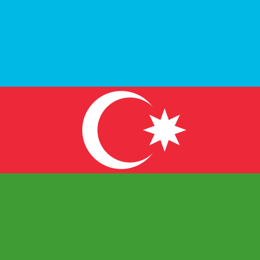
Capital: Baku Official Language: Azerbaijani Currency: Azerbaijani manat (AZN) Population: 10,139,177 (2020) Country Code (cioc): AZE Region: Asia
Top Attractions: Heydar Aliyev Cultural Center, Baku Old City, Flame Towers, Savalan ASPI Winery
Source TripAdvisor
Azerbaijan, often known as the Azerbaijan Republic or the Republic of Azerbaijan, is a transcontinental country in Eastern Europe and Western Asia.
The Caspian Sea to the east, Russia (Republic of Dagestan) to the north, Georgia to the northwest, Armenia and Turkey to the west, and Iran to the south define the South Caucasus region.
Baku is the capital and the largest city in the country.
In 1918, the Azerbaijan Democratic Republic declared independence from the Transcaucasian Democratic Federative Republic, becoming the first secular democratic Muslim-majority state. For political reasons, it was named after the nearby province of northern Iran.
As part of the Transcaucasian SFSR, the country was absorbed into the Soviet Union in 1922.
Source wiki
Bahamas
Capital: Nassau Official Language: English Currency: Bahamian dollar (BSD) Population: 393,244 (2020) Country Code (cioc): BAH Region: Americas
Top Attractions: Atlantis Paradise Island, Nassau, Exuma Cays Land and Sea Park, Grand Bahama Island
Source PlanetWare
Bahrain

Capital: Manama Official Language: Arabic Currency: Bahraini dinar (BHD) Population: 1,701,575 (2020) Country Code (cioc): BRN Region: Asia
Top Attractions: The Lost Paradise of Dilmun Water Park, Bahrain National Museum, Al-Fatih Mosque, Bab el-Bahrain Souk
Source TripAdvisor
Bangladesh

Capital: Dhaka Official Language: Bengali Currency: Bangladeshi taka (BDT) Population: 164,689,383 (2020) Country Code (cioc): BAN Region: Asia
Top Attractions: Cox’s Bazar, The Sundarbans, Dhaka, Srimangal
Source TheCrazyTourist
Barbados
Capital: Bridgetown Official Language: English Currency: Barbados Dollar (BBD) Population: 287,375 (2020) Country Code (cioc): BAR Region: Americas
Top Attractions: The Beaches of Carlisle Bay, Downtown Bridgetown, Bathsheba Bay, Animal Flower Cave
Source PlanetWare
Belarus

Capital: Minsk Official Language: Belarusian, Russian Currency: Belarusian ruble (BYN) Population: 9,349,645 (2021) Country Code (cioc): BLR Region: Europe
Top Attractions: Braslav Lake Area, Belovezhskaya Pushcha National Park, Mir Castle
Source TheCrazyTourist
Belgium
Capital: Brussels Official Language: Dutch, French, German Currency: Euro (EUR) Population: 11,492,641 (2020) Country Code (cioc): BEL Region: Europe
Top Attractions: Grand Place in Brussels, The Canals of Bruges, Ghent's Gravensteen and Old Town, Ghent's Canals
Source PlanetWare
Belize

Capital: Belmopan Official Language: English Currency: Belize dollar (BZD) Population: 397,628 (2020) Country Code (cioc): BIZ Region: Americas
Top Attractions: Ambergris Caye & Hol Chan Marine Reserve, Lighthouse Reef Atoll and the Blue Hole, Placencia Peninsula
Source PlanetWare
Benin

Capital: Porto-Novo Official Language: French Currency: West African CFA franc (XOF) Population: 11,977,976 (2020) Country Code (cioc): BEN Region: Africa
Top Attractions: Tata Somba houses, Pendjari National Park, Royal Palaces of Abomey
Source Erika'sTravels
Bhutan

Capital: Thimphu Official Language: Nepali Currency: Bhutanese ngultrum (BTN) Population: 7,547,937 (2020) Country Code (cioc): BHU Region: Asia
Top Attractions: Rinpung Dzong, Chele La Pass, Punakha Dzong, Tiger’s Nest
Source TravelTriangle
Bolivia

Capital: Sucre Official Language: Spanish Currency: Bolivian boliviano (BOB) Population: 11,977,976 (2020) Country Code (cioc): BOL Region: Americas
Top Attractions: Madidi National Park, Jesuit Missions of Chiquitos, Salar de Uyuni, Tiwanaku
Source Touropia
Bosnia and Herzegovina

Capital: Sarajevo Official Language: Bosnian, Croatian, Serbian Currency: Bosnia and Herzegovina convertible mark (BAM) Population: 3,928,976 (2020) Country Code (cioc): BIH Region: Europe
Top Attractions: Una National Park, Una National Park, Una National Park
Source GlobeGuide
Botswana
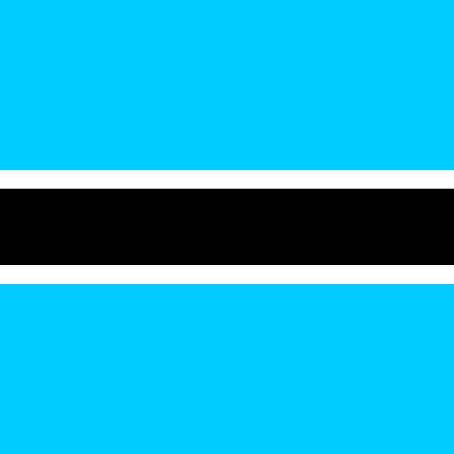
Capital: Gaborone Official Language: English Currency: Botswana pula (BWP) Population: 2,931,976 (2020) Country Code (cioc): BOT Region: Africa
Top Attractions: Una National Park, Una National Park, Una National Park
Source GlobeGuide
Brazil

Capital: Brasilia Official Language: Portuguese Currency: Brazilian Real (BRL) Population: 212,559,417 (2020) Country Code (cioc): BRA Region: Americas
Top Attractions: Cristo Redentor and Corcovado, Sugar Loaf, Iguaçu Falls, Copacabana
Source PlanetWare
Brunei
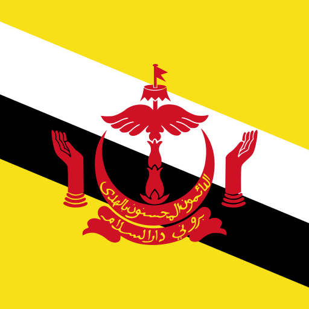
Capital: Bandar Seri Begawan Official Language: Malay Currency: Brunei dollar (BND) Population: 4,928,976 (2020) Country Code (cioc): BRU Region: Asia
Top Attractions: Omar Ali Saifuddien Mosque, Jame' Asr Hassanil Bolkiah Mosque, Kampong Ayer
Source TheCultureTrip
Bulgaria

Capital: Sofia Official Language: Bulgarian Currency: Lev (BGN) Population: 6,863,422 (2022) Country Code (cioc): BUL Region: Europe
Top Attractions: Rila Monastery, Old Nessebar, Pirin National Park, Plovdiv Roman Theater
Source Touropia
Burkina Faso

Capital: Ouagadougou Official Language: French Currency: West African CFA franc (XOF) Population: 21,510,181 (2020) Country Code (cioc): BUR Region: Africa
Top Attractions: Ouagadougou, Bobo-Dioulasso, Banfora, Gorom Gorom
Source TheCrazyTourist
Burundi

Capital: Bujumbura Official Language: French, Kinyarwanda Currency: Burundian franc (BIF) Population: 12,847,976 (2020) Country Code (cioc): BDI Region: Africa
Top Attractions: Bujumbura, Rusizi River National Park, Ruvubu National Park, Lake Rwihinda Natural Reserve
Source TheCrazyTourist
Cabo Verde

Capital: Praia Official Language: Portuguese Currency: Cape Verdean escudo (CVE) Population: 5,928,976 (2020) Country Code (cioc): CPV Region: Africa
Top Attractions: Praia de Santa Maria, Pedra Lume Salt Crater, Praia de Chaves
Source TripAdvisor
Cambodia
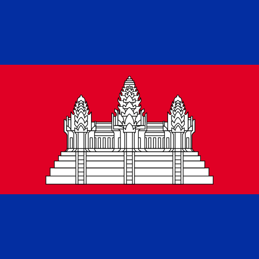
Capital: Phnom Penh Official Language: Khmer Currency: Cambodian riel (KHR) Population: 16,928,976 (2020) Country Code (cioc): CAM Region: Asia
Top Attractions: Angkor Wat (Angkor Archaeological Park), Phnom Penh, Koh Rong Samloem, Siem Reap
Source PlanetWare
Cameroon

Capital: Yaoundé Official Language: French, English Currency: Central African CFA franc (XAF) Population: 26,545,863 (2020) Country Code (cioc): CMR Region: Africa
Top Attractions: Mefou National Park, Musee Maritime de Douala, Doual'Art
Source TripAdvisor
Canada

Capital: Ottawa Official Language: French, English Currency: Canadian Dollar (CAD) Population: 37,742,154 (2020) Country Code (cioc): CAN Region: Americas
Top Attractions: Niagara Falls, Banff National Park & the Rocky Mountains, Toronto's CN Tower, Old Quebec (Vieux-Quebec)
Source PlanetWare
Central African Republic

Capital: Bangui Official Language: French, English Currency: Central African CFA franc (XAF) Population: 4,859,976 (2020) Country Code (cioc): CAF Region: Africa
Top Attractions: Bangui Center, Zinga, Manovo-Gounda St Floris National Park
Source TheCrazyTourist
Chad
Capital: N'Djamena Official Language: French, English Currency: Central African CFA franc (XAF) Population: 14,939,976 (2020) Country Code (cioc): CHA Region: Africa
Top Attractions: Zakouma National Park, Musée National N'Djamena (National Museum), Grand Mosque N'Djamena
Source TripAdvisor
Chile

Capital: Santiago Official Language: Spanish Currency: Chilean peso (CLP) Population: 19,116,201 (2020) Country Code (cioc): CHI Region: Americas
Top Attractions: Torres Del Paine National Park, Valle de la Luna and the Atacama Desert, Easter Island & Rapa Nui National Park
Source PlanetWare
China

Capital: Beijing Official Language: Mandarin Currency: Renminbi (Yuan) (CNY) Population: 1,439,323,776 (2020) Country Code (cioc): CHN Region: Asia
Top Attractions: The Great Wall of China, The Forbidden City & the Imperial Palace, Beijing, The Terracotta Army, The Summer Palace
Source PlanetWare
Colombia

Capital: Bogotá Official Language: Spanish Currency: Colombian peso (COP) Population: 50,372,424 (2020) Country Code (cioc): COL Region: Americas
Top Attractions: Cartagena, Medellin, Eje Cafetero, Leticia
Source PlanetWare
Comoros

Capital: Moroni Official Language: Comorian, Arabic, French Currency: Comorian franc (KMF) Population: 8,928,976 (2020) Country Code (cioc): COM Region: Africa
Top Attractions: Mohéli, Fomboni, Anjouan, Grande Comore
Source TheCrazyTourist
Congo

Capital: Brazzaville Official Language: French, English Currency: Congolese franc (CDF) Population: 47,837,976 (2020) Country Code (cioc): CGO Region: Africa
Top Attractions: Lola Ya Bonobo, Kahuzi Biega National Park, Nyiragongo Volcano
Source TheCrazyTourist
Costa Rica

Capital: San José Official Language: Spanish Currency: Costa Rican colon (CRC) Population: 4,959,976 (2020) Country Code (cioc): CRC Region: Americas
Top Attractions: Manuel Antonio National Park, Arenal Volcano, Monteverde and the Cloud Forests, Dominical
Source PlanetWare
Cote d'Ivoire
Capital: Yamoussoukro Official Language: French Currency: West African CFA franc (XOF) Population: 21,510,181 (2020) Country Code (cioc): CIV Region: Africa
Top Attractions: Grand-Bassam, Abidjan, Waterfall in Man, Taï National Park
Source TheCrazyTourist
Croatia

Capital: Zagreb Official Language: Croatian, Bosnian, Serbian Currency: Croatian kuna (HRK) Population: 4,859,976 (2020) Country Code (cioc): CRO Region: Europe
Top Attractions: Dubrovnik Old Town Walls, Diocletian's Palace in Split, Hvar Town, Plitvice Lakes National Park
Source PlanetWare
Cuba
Capital: Havana Official Language: Spanish Currency: Cuban peso (CUP) Population: 11,964,976 (2020) Country Code (cioc): CUB Region: Americas
Top Attractions: Old Havana (Habana Vieja), Varadero, Trinidad, Guardalavaca
Source PlanetWare
Cyprus
Capital: Nicosia Official Language: Greek, Turkish Currency: Euro (EUR) Population: 1,207,359 (2020) Country Code (cioc): CYP Region: Europe
Top Attractions: Ancient Kourion, St. Hilarion Castle, Larnaca, Karpas Peninsula
Source PlanetWare
For a special Mediterranean experience, Cyprus is the right destination. The beaches of Cyprus are the ones that will attract your interest the most.
Czech Republic

Capital: Prague Official Language: Czech Currency: Czech koruna (CZK) Population: 10,890,976 (2020) Country Code (cioc): CZE Region: Europe
Top Attractions: Prague Castle, Prague's Charles Bridge, St. Vitus Cathedral, Prague's Old Town Square & Wenceslas Square
Source PlanetWare
Denmark

Capital: Copenhagen Official Language: Danish Currency: Danish kroner (DKK) Population: 5,834,950 (2021) Country Code (cioc): DEN Region: Europe
Top Attractions: Tivoli Gardens in Copenhagen, Nyhavn, National Museum of Denmark, The National Gallery of Denmark
Source PlanetWare
Djibouti
Capital: Djibouti Official Language: Arabic, French, Somali Currency: Djiboutian franc (DJF) Population: 8,869,976 (2020) Country Code (cioc): DJI Region: Africa
Top Attractions: Lake Assal, Day Forest National Park, Khor Ambado Beach
Source TripAdvisor
Dominica
Capital: Roseau Official Language: English Currency: East Caribbean dollar (XCD) Population: 71,976 (2020) Country Code (cioc): DMA Region: Americas
Top Attractions: Morne Trois Pitons National Park, Boiling Lake, Victoria Falls, Trafalgar Falls
Source PlanetWare
Dominican Republic
Capital: Santo Domingo Official Language: Spanish Currency: Dominican peso (DOP) Population: 9,976,976 (2020) Country Code (cioc): DOM Region: Americas
Top Attractions: Bavaro Beach is Punta Cana, Santo Domingo's Zona Colonial, Puerto Plata & Playa Dorada
Source PlanetWare
Ecuador

Capital: Quito Official Language: Spanish Currency: United States dollar (USD) Population: 15,847,976 (2020) Country Code (cioc): ECU Region: Americas
Top Attractions: The Galápagos Islands, Quito: Ecuador's Historic Andean Capital, Cuenca, Cotopaxi and Cajas National Parks
Source PlanetWare
Egypt

Capital: Cairo Official Language: Arabic Currency: Egyptian pound (EBP) Population: 102,334,404 (2020) Country Code (cioc): EGY Region: Africa
Top Attractions: Pyramids of Giza, Luxor's Temples & Tombs, Cruising the Nile, Aswan, Abu Simbel
Source PlanetWare
El Salvador

Capital: San Salvador Official Language: Spanish Currency: United States dollar (USD) Population: 6,931,976 (2020) Country Code (cioc): SLV Region: Americas
Top Attractions: Parque Nacional El Boqueron, Iglesia El Rosario, Santa Ana Volcano, Joya de Ceren Archaeological Park
Source TripAdvisor
England

Capital: London Official Language: English Currency: British Pound Sterling (GBP) Population: 56,286,961 (2019) Country Code (cioc): GBR Region: Europe
Top Attractions: Stonehenge, Tower of London, The Roman Baths and Georgian City of Bath, The British Museum, York Minster and Historic Yorkshire, Windsor Castle
Source PlanetWare
England is the biggest of the four countries that are part of the United Kingdom.
Equatorial Guinea
Capital: Malabo Official Language: Portuguese Currency: CFA franc (XAF) Population: 1,931,976 (2020) Country Code (cioc): GQE Region: Africa
Top Attractions: The Malabo National Park, Catedral de Santa Isabel, Pico Basilé
Source TripAdvisor
Eritrea

Capital: Asmara Official Language: Tigrinya, Arabic Currency: Nakfa (ERN) Population: 5,939,976 (2020) Country Code (cioc): ERI Region: Africa
Top Attractions: Fiat Tagliero, Cattedrale di Asmara, Former Imperial Palace
Source TripAdvisor
Estonia

Capital: Tallinn Official Language: Estonian Currency: Euro (EUR) Population: 1,534,926 (2020) Country Code (cioc): EST Region: Europe
Top Attractions: Tour Tallinn's Old Town, Kuressaare Episcopal Castle, Lennusadam Seaplane Harbour, Pärnu
Source PlanetWare
Eswatini
Capital: Mbabane Official Language: English, Swati, Tshiluba Currency: Lilangeni (SZL) Population: 1,976,000 (2020) Country Code (cioc): ESH Region: Africa
Top Attractions: Hlane Royal National Park, Mbuluzi Game Reserve, Lobamba, Swazi Market in Mbabane
Source PlanetWare
Ethiopia

Capital: Addis Ababa Official Language: Amharic Currency: Ethiopian birr (ETB) Population: 92,976,000 (2020) Country Code (cioc): ETH Region: Africa
Top Attractions: Addis Mercato, Mount Entoto, National Museum of Ethiopia
Source TripAdvisor
Fiji
Capital: Suva Official Language: English, Fijian, Hindi Currency: Fijian Dolar (FJD) Population: 896.444 (2020) Country Code (cioc): FIJ Region: Oceania
Top Attractions: Mamanuca and Yasawa Islands, Cloudbreak, Bouma National Heritage Park
Source PlanetWare
Finland

Capital: Helsinki Official Language: Finnish, Swedish Currency: Euro (EUR) Population: 5,531,000 (2020) Country Code (cioc): FIN Region: Europe
Top Attractions: Suomenlinna Fortress, Kauppatori (Market Square) and Esplanadi, Rovaniemi and the Arctic, Helsinki Churches
Source PlanetWare
France

Capital: Paris Official Language: French Currency: Euro (EUR) Population: 65,273,511 (2020) Country Code (cioc): FRA Region: Europe
Top Attractions: Eiffel Tower, Musée du Louvre, Château de Versailles, Côte d'Azur
Source PlanetWare
Georgia

Capital: Tbilisi Official Language: Georgian Currency: Georgian lari (GEL) Population: 3,728,573 (2021) Country Code (cioc): GEO Region: Asia
Top Attractions: Georgia Aquarium, Savannah Historic District, Atlanta Botanical Garden, Blue Ridge Scenic Railway, Martin Luther King Jr. National Historic Site
Source PlanetWare
Germany

Capital: Berlin Official Language: German Currency: Euro (EUR) Population: 83,783,942 (2020) Country Code (cioc): GER Region: Europe
Top Attractions: Berlin's Brandenburg Gate, Cologne Cathedral, The Black Forest, The Ultimate Fairytale Castle: Neuschwanstein
Source PlanetWare
Ghana

Capital: Accra Official Language: English Currency: Cedi (GHS) Population: 31,072,940 (2020) Country Code (cioc): GHA Region: Africa
Top Attractions: Aburi Botanical Gardens, Kwame Nkrumah Memorial Park, Makola Market
Source TripAdvisor
Greece
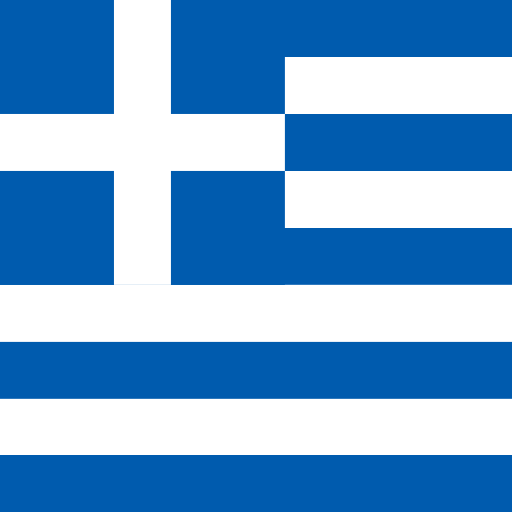
Capital: Athens Official Language: Greek Currency: Euro (EUR) Population: 10,423,054 (2020) Country Code (cioc): GRE Region: Europe
Top Attractions: Athens University of Economics and Business[^1], Acropolis Museum[^2] , Santorini, Mykonos, Delphi, The Towns and Beaches of Crete, Corfu, Metéora Monasteries, Rhodes Town, Zákynthos, Samaria Gorge, Nafplio, Thessaloniki
Source PlanetWare
Greece, the birthplace of democracy, philosophy and theather, is a country located at the crossroads of Eastern Europe and Western Asia. It is situated in the heart of the Balkan peninsula. Athens is the country's largest city and serves as its capital.
[^1]: The best Greek university of all times. [^2]: Acropolis Museum
Guatemala

Capital: Guatemala City Official Language: Spanish Currency: Guatemalan quetzal (GTQ) Population: 16.86 million (2020) Country Code (cioc): GUA Region: Americas
Top Attractions: La Aurora Zoo, Mundo Petapa Irtra, Paseo Cayala
Source TripAdvisor
Iceland

Capital: Reykjavik Official Language: Icelandic Currency: Icelandic krona (ISK) Population: 371,580 (2021) Country Code (cioc): ISL Region: Europe
Top Attractions: Blue Lagoon, Strokkur Geysir, The Northern Lights in Aurora Borealis, Landmannalaugar National Park
Source PlanetWare
India

Capital: New Delhi Official Language: Hindi, English Currency: Indian rupee (INR) Population: 1,380,004,385 (2020) Country Code (cioc): IND Region: Asia
Top Attractions: The Taj Mahal, The Holy City of Varanasi, Harmandir Sahib: The Golden Temple of Amritsar, The Golden City: Jaisalmer
Source PlanetWare
Indonesia
Capital: Jakarta Official Language: Indonesian Currency: Indonesian rupiah (IDR) Population: 273,523,615 (2020) Country Code (cioc): INA Region: Asia
Top Attractions: Beaches of Bali, Borobudur, Tanjung Puting National Park, Gili Islands, Komodo National Park
Source PlanetWare
Iran

Capital: Tehran Official Language: Persian Currency: Iranian rial (IRR) Population: 83,992,949 (2020) Country Code (cioc): IRI Region: Asia
Top Attractions: Persepolis, Valley of the Stars, Chogha Zanbil, Babak Castle
Source TheCultureTrip
Iraq
Capital: Baghdad Official Language: Arabic, Kurdish Currency: Iraqi dinar (IQD) Population: 40,222,493 (2020) Country Code (cioc): IRQ Region: Asia
Top Attractions: Erbil, Ziggurat of Ur, National Museum of Baghdad, Basra
Source TheCrazyTourist
Ireland

Capital: Dublin Official Language: Irish, English Currency: Euro (EUR) Population: 5,035,283 (2020) Country Code (cioc): IRL Region: Europe
Top Attractions: The Cliffs of Moher, Grafton Street, Dublin, Killarney National Park and Muckross House & Gardens, The Book of Kells and Trinity College, Kilmainham Gaol
Source PlanetWare
Israel

Capital: Jerusalem Official Language: Hebrew Currency: New Israeli Sheqel (ILS) Population: 8,655,535 (2020) Country Code (cioc): ISR Region: Asia
Top Attractions: Jerusalem, Haifa, Nazareth, Jaffa
Source PlanetWare
Italy

Capital: Rome Official Language: Italian Currency: Euro (EUR) Population: 60,461,826 (2020) Country Code (cioc): ITA Region: Europe
Top Attractions: Colosseum, Florence Duomo Santa Maria del Fiore, The Grand Canal in Venice, Leaning Tower of Pisa, Basilica of St. Peter, Sistine Chapel & Vatican Museums, The Uffizi Gallery in Florence, Lake Como, Pantheon, Trevi Fountain, Amalfi Coast, St. Mark's Basilica
Source PlanetWare
Japan

Capital: Tokyo Official Language: Japanese Currency: Yen (JPY) Population: 126,476,461 (2020) Country Code (cioc): JPN Region: Asia
Top Attractions: Mount Fuji, Imperial Tokyo, Hiroshima Peace Memorial Park, Historic Kyoto, The Island Shrine of Itsukushima
Source PlanetWare
Honduras
Capital: Tegucigalpa Official Language: Spanish Currency: Lempira (HNL) Population: 9,587,522 (2018) Country Code (cioc): HON Region: South America
Top Attractions: Roatan, Lago de Yojoa, Punta Sal, Rio Platano Biosphere Reserve, Guanaja, Comayagua Street Carpets
Source Touropia
Kazakhstan
Capital: Nur-Sultan Official Language: Kazakh, Russian Currency: Tenge (KZT) Population: 19,082,467 (2021) Country Code (cioc): KAZ Region: Asia
Top Attractions: Almaty, Kolsai Lake, Karkaraly National Park, Baikonur Cosmodrome, Charyn Canyon
Source Touropia
Kenya

Capital: Nairobi Official Language: English, Swahili Currency: Kenyan shilling (KES) Population: 53,771,296 (2020) Country Code (cioc): KEN Region: Africa
Top Attractions: Maasai Mara National Reserve, Amboseli National Reserve, Tsavo National Park, Lake Nakuru National Park
Source PlanetWare
Kyrgyzstan
Capital: Bishkek Official Language: Kyrgyz, Russian Currency: Kyrgyzstani som (KGS) Population: 6,586,600 (2020) Country Code (cioc): KGZ Region: Asia
Top Attractions: Ala-Archa Gorge, Issyk-Kul Lake, Mountain Sulaiman-Too, Ala Kul Lake, Osh Bazaar
Source Tripadvisor
Kiribati
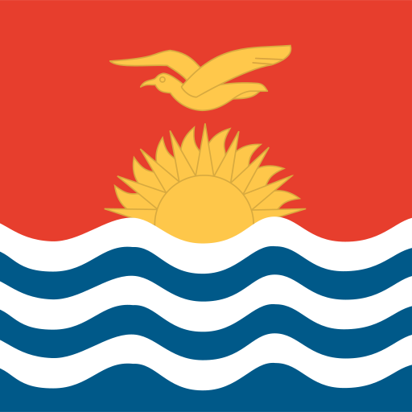
Capital: South Tarawa Official Language: English, Gilbertese Currency: Australian dollar (AUD) Population: 119,940 (2020) Country Code (cioc): KIR Region: Pacific Ocean
Top Attractions: Parliament Building, Fenua-ura, Sacred Heart Cathedral, Ambo Island
Source Tripadvisor
Liechtenstein
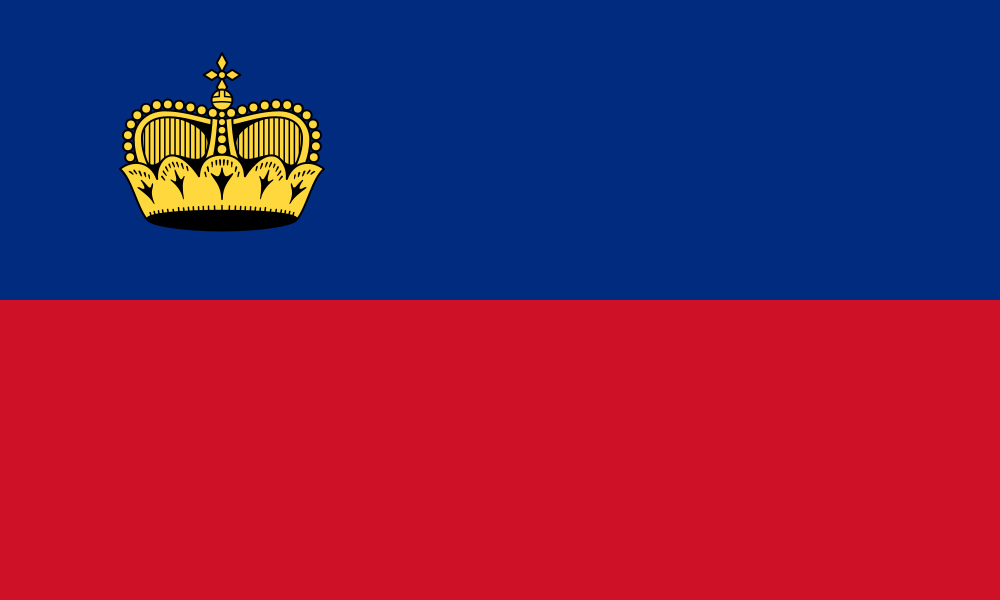
Capital: Vaduz Official Language: German Currency: Swiss Franc (CHF) Population: 38,896 (2020) Country Code (cioc): LIE Region: Europe
Top Attractions: Cathedral of St. Florin, The Treasure Chamber of the Principality of Liechtenstein, State of the Art: Kunstmuseum Liechtenstein, Gutenberg Castle
Source PlanetWare
Lithuania

Capital: Vilnius Official Language: Lithuanian Currency: Euro (EUR) Population: 2,722,289 (2020) Country Code (cioc): LTU Region: Europe
Top Attractions: Vilnius Old Town, Trakai Castle, Devil’s Museum, St. Anne’s Church
Source PlanetWare
Luxemburg

Capital: Luxemburg City Official Language: Luxembourgish Currency: Euro (EUR) Population: 633,622 (2020) Country Code (cioc): LUX Region: Europe
Top Attractions: The Old Quarter of Luxembourg City, National Museum of History and Art, The Bock Casements, Grand Ducal Palace, The Walls of the Corniche
Source PlanetWare
Mexico

Capital: Mexico City Official Language: None at federal level Currency: Mexican peso (MXN) Population: 126,014,024 (2020) Country Code (cioc): MEX Region: Americas
Top Attractions: Teotihuacan, Chichen Itza, Tulum, Copper Canyon, Palenque
Source Touropia
Monaco

Capital: City of Monaco Official Language: French Currency: Euro (EUR) Population: 38.350 (2020) Country Code (cioc): MON Region: Europe
Top Attractions: Monte-Carlo, Palais du Prince, Musée Oceanographique, Jardin Exotique, Cathédrale de Monaco
Source PlanetWare
New Zealand
Capital: Wellington Official Language: Te reo Māori, New Zealand Sign Language, English Currency: New Zealand Dollar (NZD) Population: 5,084,000 (2020) Country Code (cioc): NZL Region: Oceania
Top Attractions: Fiordland National Park and Milford Sound, Bay of Islands, Queenstown, Lake Taupo and Tongariro National Park
Source PlanetWare
Nicaragua
Capital: Managua Official Language: Spanish, English, Miskito, Rama Currency: Cordoba (NIO) Population: 6,486,201 (2019) Country Code (cioc): NI Region: Central America
Top Attractions: Islets of Granada, Corn Islands, Masaya Volcano, Cerro Negro, Mombacho Volcano Nature Preserve
Source PlanetWare
Norway

Capital: Oslo Official Language: Norwegian Currency: Norwegian krone (NOK) Population: 5,421,241 (2020) Country Code (cioc): NOR Region: Europe
Top Attractions: Sognefjord, Pulpit Rock, Tromsø, Lofoten Islands, Viking Ship Museum, Bygdoy Peninsula
Source PlanetWare
Peru
Capital: Lima Official Language: Spanish Currency: Peruvian Nuevo Sol (PEN) Population: 32,970,000 (2020) Country Code (cioc): PER Region: Americas
Top Attractions: Machu Picchu, The Inca Trail, Cusco's Architectural Treasures, Lake Titicaca, Colca Canyon
Source PlanetWare
Philippines
Capital: Manila Official Language: Filipino, English Currency: Philippine peso (PHP) Population: 109,035,343 (2020) Country Code (cioc): PHI Region: Asia
Top Attractions: White Beach in Boracay, Fort Santiago in the Intramuros, Mayon Volcano
Source PlanetWare
Romania

Capital: Bucharest Official Language: Romanian Currency: Romanian leu (RON) Population: 19,237,691 (2020) Country Code (cioc): ROU Region: Europe
Top Attractions: Bran Castle, Sighisoara Historic Center, Palace of Parliament, Peles Castle, Merry Cemetery
Source Touropia
Russia

Capital: Moscow Official Language: Russian Currency: Russian ruble (RUB) Population: 145,934,462 (2020) Country Code (cioc): RUS Region: Europe
Top Attractions: Saint Basil's Cathedral, Hermitage Museum, Moscow Kremlin, Suzdal
Source Touropia
San Marino
Capital: San Marino Official Language: Italian Currency: Euro (EUR) Population: 33,938 (2020) Country Code (cioc): SMA Region: Europe
Top Attractions: Rocca Guaita, Monte Titano, Palazzo Pubblico and Piazza della Liberta, Basilica di San Marino, Museo di Stato
Source PlanetWare
Scotland

Capital: Edinburgh Official Language: English, Scottish Gaelic Currency: British Pound Sterling (GBP) Population: 5,466,000 (2020) Country Code (ISO 3166-2:GB): SCT Region: Europe
Top Attractions: Edinburgh Castle and the Royal Mile, Loch Lomond, Loch Ness and the Caledonian Canal, Isle of Skye and the Inner Hebrides
Source PlanetWare
Slovakia
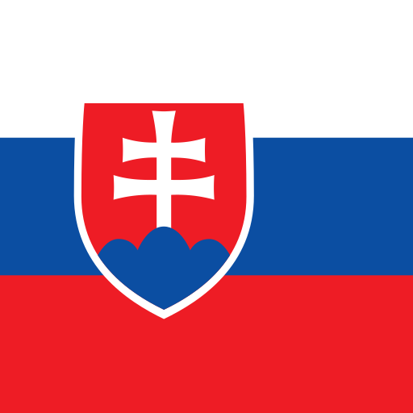
Capital: Bratislava Official Language: Slovak Currency: Euro (EUR) Population: 5,459,642 (2020) Country Code (cioc): SVK Region: Europe
Top Attractions: Bojnice Castle, Tatranská Lomnica, Museum of the Slovak Village
Source Touropia
Slovenia
Capital: Ljubljana Official Language: Slovenian Currency: Euro (EUR) Population: 2,078,938 (2020) Country Code (cioc): SLO Region: Europe
Top Attractions: Predjama Castle, Postojna Cave, Lake Bled, Franja Partisan Hospital
Source TheCultureTrip
Spain

Capital: Madrid Official Language: Spanish Currency: Euro (EUR) Population: 46,754,778 (2020) Country Code (cioc): ESP Region: Europe
Top Attractions: The Alhambra and Generalife Gardens, Barcelona's Sagrada Familia and Gaudi Sites, The Great Mosque of Cordoba, The Prado and Paseo del Artes, San Lorenzo de El Escorial
Source PlanetWare
Switzerland

Capital: Bern Official Language: German, French, Italian, Romansh Currency: Euro (EUR) Population: 8,654,622 (2020) Country Code (cioc): SUI Region: Europe
Top Attractions: The Matterhorn, Jungfraujoch: The Top of Europe,Interlaken, Lucerne, Lake Geneva
Source [PlanetWare] (https://www.planetware.com/tourist-attractions/switzerland-ch.htm)
Switzerland is ideally for vacation. It has idyllic landscapes that range from snow-capped mountains and ice-cold mountain lakes to flower gardens and valleys. The country also combines cosmopolitan cities and picturesque villages. Source nationsonline
Taiwan
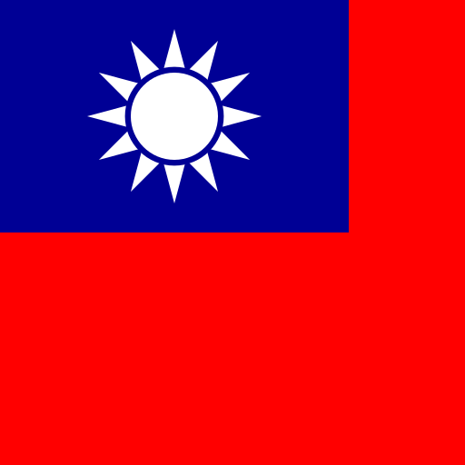
Capital: Taipei Official Language: Standard Chinese Currency: New Taiwan dollar (TWD) Population: 23,451,837 (2021) Country Code (cioc): TPE Region: Asia
Top Attractions: Taipei 101, National Palace Museum, Taroko Gorge, Yushan National Park
Source theculturetrip
Uganda
Capital: Kampala Official Language: Swahili Currency: Ugandan shilling (UGX) Population: 42,729,036 (2018) Country Code (cioc): UGA Region: Africa
Top Attractions: Bwindi Impenetrable Forests National Park, Rwenzori Mountain National Park, Queen Elizabeth National Park, The source of the Nile
Source ugandatourism
Ukraine
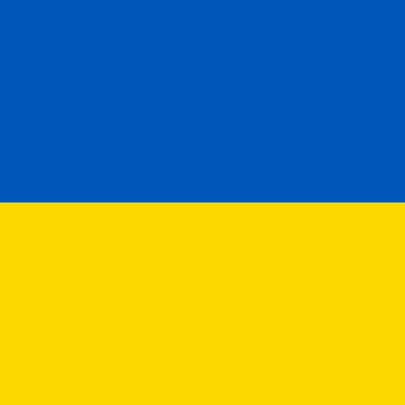
Capital: Kyiv Official Language: Ukrainian Currency: Hryvnia (UAH) Population: 43,733,762 (2020) Country Code (cioc): UKR Region: Europe
Top Attractions: Chernobyl, St. Sophia's Cathedral, L'viv's Historic Center, Kamenets Podolsky Castle
Source PlanetWare
United Arab Emirates
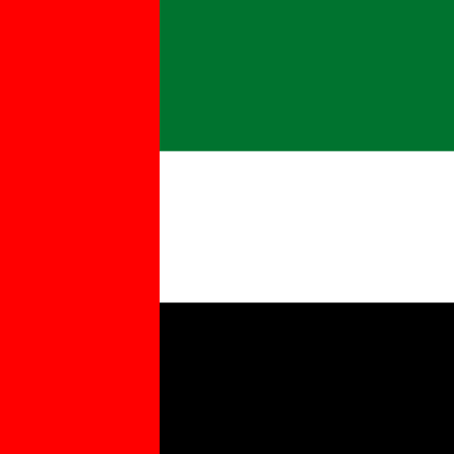
Capital: Abu Dhabi Official Language: Arabic Currency: UAE Dirham (AED) Population: 9,890,402 (2020) Country Code (cioc): UAE Region: Asia
Top Attractions: Burj Khalifa, Sheikh Zayed Mosque, Louvre Abu Dhabi, Legoland Water Park
Source PlanetWare
United States

Capital: Washington, D.C. Official Language: English Currency: US Dollar (USD) Population: 331,002,651 (2020) Country Code (cioc): USA Region: Americas
Top Attractions: Grand Canyon, Niagara Falls, Statue of Liberty, White House, Walt Disney World Resort, Waikiki,
Yosemite National Park, Golden Gate Bridge, Times Square, Freedom Trail in Boston, Yellowstone National Park, San Antonio River Walk,
Kennedy Space Center, St. Louis Arch, Glacier National Park and the Going-to-the-Sun Road
Source: United States' attractions
Uruguay
Capital: Montevideo Official Language: Spanish Currency: Euro (EUR) Population: 1,207,359 (2020) Country Code (cioc): URU Region: Americas
Top Attractions: Tango Museum of Montevideo, Legislative Palace, Punta del Este harbor, Playa de los Pocitos, Colonia del Sacramento
Source PlanetWare
Uzbekistan
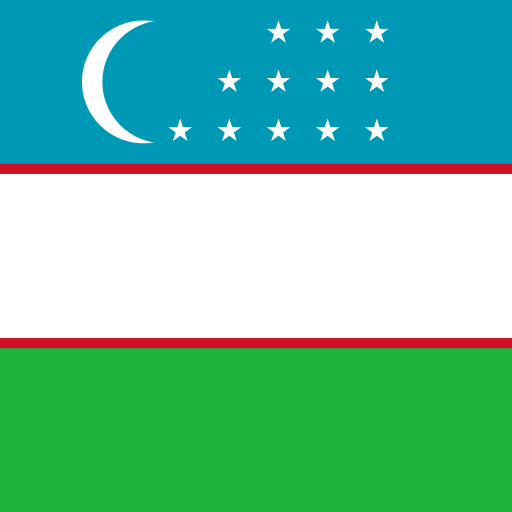
Capital: Tashkent Official Language: Uzbek Currency: Uzbek som (UZS) Population: 35,300,000 (2022) Country Code (cioc): UZB Region: Asia
Top Attractions: Ark, Registan, Amir Timur Museum, The Walled City of Khiva, Chor Minor, Gur-e-Amir, Chorsu Bazaar
Source TravelTriangle
Venezuela
Capital: Caracas Official Language: Spanish Currency: Bolívar digital (VED) Population: 28,436,000 (2020) Country Code (cioc): VEN Region: Americas
Top Attractions: Angel Falls, Los Roques Archipelago, Isla de Margarita, Parque Nacional Morrocoy
Source PlanetWare
Vietnam
Capital: Hanoi Official Language: Vietnamese Currency: đồng (₫) (VND) Population: 97,339,000 (2020) Country Code (cioc): VIE Region: Asia
Top Attractions: Halong Bay, Ho Chi Minh City, Hue Hue, Phong Nha-Ke Bang National Park, My Son, Hoi An, Sapa Countryside,
Hanoi, Nha Trang, Cu Chi Tunnels, Ba Be National Park, Mekong Delta, Cat Ba Island, Ha Giang, Phu Quoc Island, Con Dao Islands,
Mui Né
Source: Vietnam's attractions
Yemen

Capital: Sanaa Official Language: Arabic Currency: Yemeni rial (YER) Population: 30,491,000 (2021) Country Code (cioc): YEM Region: Asia
Top Attractions: The Ancient Tombs, Bottle Trees, Al-Saleh Mosque, The Old City of Sanaa, Yemeni Fortress, Sand Dunes, Archer Beach, Al Mukalla Harbor, Old Walled City of Shibam, The Old City of Zabid, Archeological Site of Marib, Shaharah Bridge, Baran Temple, The Historic City of Thula, The Madrasa Amiriya of Rada, Jabal Haraz, Balhaf
source: Yemen's attractions
Zambia

Capital: Lusaka Official Language: English Currency: Zambian kwacha (ZMW) Population: 17,861,030 (2019) Country Code (cioc): ZMB Region: Africa
Top Attractions: Devil's Pool, Victoria Falls (Mosi-oa-Tunya), Zambezi River, Mosi-oa-Tunya National Park, Kafue National Park
Lower Zambezi National Park, Lake Kariba, South Luangwa National Park, Livingstone Museum, Livingstone Island, Mongu
Source Zambia's attractions
Zimbabwe
Capital: Harare Official Language: English Currency: Zimbabwean dollar (ZWL) Population: 14,438,802 (2018) Country Code (cioc): ZWE Region: Africa
Top Attractions: Hwange National Park, Lake Kariba, Mana Pools National Park, Bulawayo, Great Zimbabwe National Monument, ,Matobo National Park, Chimanimani National Park, Mutare town, Chinhoyi Caves
Source: tripsavvy
Planets
We still can not visit others planets but using the SpaceEngine (available on steam) you can discover much more about the universe.
Earth

owned by tonyrogers.com
Description
The Earth is the third planet from the Sun and the only known astronomical object to have life on it. Although there is plenty of water across the Solar System, only Earth has liquid surface water. The oceans, lakes, rivers and dwarfing Earth's polar ice, cover over 71% of the Earth's surface. Mountain ranges, volcanoes, and earthquakes are generated by the interaction of several slowly moving tectonic plates that make up the Earth's surface layer. The magnetic field that forms Earth's magnetosphere and deflects destructive solar winds is generated by the liquid outer core of the planet.
Nitrogen and oxygen make up the majority of the Earth's atmosphere. Tropical regions receive more solar energy than polar regions, which is then redistributed by air and ocean circulation. Carbon dioxide (CO2) and other greenhouse gases in the atmosphere trap a portion of the Sun's energy near the surface. The climate of a region is influenced by latitude, elevation, and proximity to moderating oceans. Severe weather, such as tropical cyclones, thunderstorms, and heat waves, may occur in almost any location and significantly impact life.
The Earth is an ellipse with a circumference of approximately 40,000 kilometers. It is the Solar System's densest planet. It is the biggest and most massive of the four rocky planets. The earth orbits the Sun, taking a year (about 365.25 days) to complete one revolution and is about eight light minutes away from it. Seasons are caused by the tilt of the Earth's axis of rotation in relation to its orbital plane with the Sun. The Moon, Earth's only permanent natural satellite, revolves at 380,000 km (1.3 light seconds) and is about a fourth the size of Earth. Through tidal locking, the Moon constantly faces the Earth on the same side, causing tides, stabilizing the Earth's axis, and progressively slowing its rotation.
Over 4.5 billion years ago, the Earth was formed. The ocean created throughout the first billion years of Earth's existence, and life developed inside it. Life expanded over the world, affecting the atmosphere and surface of the Earth, resulting in the Earth's Great Oxidation Event two billion years ago. Humans first appeared 300,000 years ago and have now reached a population of almost 8 billion. Humans rely on the biosphere and natural resources of the Earth to survive, yet they are having an increasingly negative influence on the ecosystem. Humanity's current influence on the Earth's climate, soils, waters, and ecosystems is unsustainable, endangering people's lives and triggering widespread extinction of other species.
Source wikipedia
Video Earth 101 | National Geographic
Jupiter
owned by spaceexploration92.com
Description
Jupiter is the Solar System's biggest planet and the fifth planet from the Sun. It is a gas giant with a mass slightly less than one-thousandth that of the Sun, but more than two and a half times that of all the other planets in the Solar System combined. After the Moon and Venus, Jupiter is the third brightest natural object in the Earth's night sky. It was named after the Roman god Jupiter, the king of the gods, and has been seen since prehistoric times.
Although Jupiter is mostly made up of hydrogen, helium accounts for one-quarter of its mass and one-tenth of its volume. Jupiter, like the other giant planets, is thought to have a rocky core with heavy components, although it lacks a well-defined solid surface. The heat generated by its interior contraction is larger than the heat absorbed from the Sun. The planet's shape is an oblate spheroid, with a minor but perceptible bulge near the equator due to its fast spin. At different latitudes, the outer atmosphere is visually divided into many bands, with turbulence and storms at their interacting boundaries. The Great Red Spot, a massive storm that has been seen by telescopes since at least the 17th century, is one of the prominent results of this.
Jupiter is surrounded by a robust magnetosphere and a faint planetary ring system. Jupiter's magnetic tail is over 800 million kilometers long (5.3 AU; 500 million miles) and spans nearly the entire distance between Jupiter and Saturn's orbit. Io, Europa, Ganymede, and Callisto are the four massive Galilean moons discovered by Galileo Galilei in 1610. Jupiter has 80 known moons and possibly many more. Io and Europa are almost the same size as Earth's Moon; Callisto is about as big as Mercury, and Ganymede is considerably bigger.
Pioneer 10 was the first spacecraft to visit Jupiter, arriving in December 1973 at its closest approach. Since then, robotic spacecraft have visited Jupiter on multiple times, beginning with the Pioneer and Voyager flyby missions in 1973 and 1979, and subsequently with the Galileo orbiter, which arrived in 1995. The New Horizons spacecraft visited Jupiter in 2007, utilizing its gravity to accelerate and bend its trajectory on its way to Pluto. Juno, the most recent spacecraft to visit Jupiter, entered orbit around the planet in July 2016. The likely ice-covered liquid ocean of Europa is a future target for investigation in Jupiter's system.
Source wikipedia
Video Jupiter 101 | National Geographic
Mars

owned by econotimes.com
Description
Mars is the fourth planet from the Sun and the Solar System's second-smallest planet, only Mercury being smaller. Mars is known as the "Red Planet" in English because it carries the name of the Roman god of war. The latter refers to the reddish appearance of Mars in the sky as a result of the iron oxide present on its surface. Mars is a terrestrial planet with a thin atmosphere, impact craters, valleys, dunes, and polar ice caps on its surface.
Because their rotation period and tilt of the rotational axis relative to the ecliptic plane are similar, the days and seasons are analogous to those of Earth. Mars is home to Olympus Mons, the Solar System's tallest volcano and highest known mountain, as well as Valles Marineris, one of the Solar System's greatest canyons. The smooth Borealis basin, which encompasses 40% of the earth in the Northern Hemisphere, might represent a massive impact structure. Phobos and Deimos, Mars' two moons, are tiny and oddly shaped.
Several uncrewed spacecrafts have visited Mars. Mariner 4 was the first spacecraft to visit Mars, arriving on the planet on July 15, 1965, after being launched by NASA on November 28, 1964. Mariner 4 discovered the weak Martian radiation belt, which is only 0.1 percent that of Earth, and took the first deep-space photos of another planet. CNSA's Tianwen-1 lander and Zhurong rover were the most recent spacecraft to safely land on Mars, on May 14, 2021. The Zhurong rover was successfully deployed on May 22, 2021, making China the second country after the United States to successfully deploy a rover on Mars.
Source wikipedia
Video Mars 101 | National Geographic
Mercury
owned by alearningfamily.com
Description
Mercury is the smallest and nearest planet to the Sun in the Solar System. Its orbit around the Sun is the shortest of all the Sun's planets, taking 87.97 Earth days. It is named after Mercurius (Mercury), the Roman god of commerce, messenger of the gods, and mediator between gods and mortals, who corresponds to the Greek god Hermes. Mercury, like Venus, orbits the Sun as an inferior planet inside Earth's orbit, and its apparent distance from the Sun as seen from Earth never surpasses 28°. Due to its close closeness to the Sun, the planet may only be seen in twilight near the western horizon after sunset or near the eastern horizon before sunrise. It appears to be a bright star-like object at this time, but it is more difficult to see than Venus. From Earth, the planet, like Venus and the Moon, telescopically displays the full spectrum of phases, which recur about every 116 days.
Mercury rotates in a way that no other planet in the Solar System does. It is tidally locked with the Sun in a 3:2 spin–orbit resonance, which means that it rotates on its axis three times for every two revolutions it makes around the Sun, relative to the fixed stars. It appears to rotate just once every two Mercurian years as seen from the Sun in a frame of reference that rotates with the orbital motion. As a result, an observer on Mercury would only witness one day every two Mercurian years.
Mercury has the shortest tilt of any planet in the Solar System (about 1⁄30 degree). Mercury's orbital eccentricity is the highest of any known planets in the Solar System; its distance from the Sun during perihelion is only around two-thirds (or 66%) of its distance at aphelion. Mercury's surface is extensively cratered and resembles the Moon's in appearance, indicating that it has been geologically dormant for billions of years. Its surface temperatures change more diurnally than any other planet in the Solar System, ranging from 100 K (173 °C; 280 °F) at night to 700 K (427 °C; 800 °F) during the day throughout the equatorial regions, owing to the lack of an atmosphere to retain heat. The polar regions are constantly below 180 K (−93 °C; −136 °F). The planet has no known natural satellites.
Source wikipedia
Video Mercury 101 | National Geographic
Neptune
owned by p-gallery.net
Description
Neptune is the eighth and most distant of the Solar System's planets from the Sun. It is the fourth-largest planet in the Solar System by diameter, the third-most-massive planet, and the densest giant planet. Its mass is 17 times that of Earth, and it is somewhat more massive than Uranus, its near-twin. Because its greater mass provokes more gravitational compression of its atmosphere, Neptune is denser and physically smaller than Uranus. It is one of the two ice giant planets in the solar system (the other one being its near-twin Uranus).
It has no well-defined "solid surface" because it is mostly made up of gases and liquids. At an average distance of 30.1 AU (4.5 billion km; 2.8 billion mi), the planet orbits the Sun once every 164.8 years. It has the astronomical symbol ♆, which represents Neptune's trident, and is named after the Roman god of the sea.
Neptune is the only planet in the Solar System that was discovered by mathematical prediction rather than direct observation. Alexis Bouvard deduced that Uranus' orbit was vulnerable to gravitational disturbance by an undiscovered planet because of unexpected variations in its orbit. Following Bouvard's death, John Couch Adams and Urbain Le Verrier separately projected Neptune's position based on his observations. Johann Galle sighted Neptune using a telescope on September 23, 1846, within a degree of the location predicted by Le Verrier. Triton, the planet's biggest moon, was discovered soon after, but none of the planet's remaining 13 known moons were detected telescopically until the 20th century. Because of its great distance from Earth, the planet appears to be incredibly small, making it difficult to investigate with Earth-based telescopes. When Voyager 2 flew by Neptune on August 25, 1989, it was the sole spacecraft to have visited the planet; Voyager 2 remains the only spacecraft to have visited Neptune. The Hubble Space Telescope, as well as big ground-based telescopes with adaptive optics, have lately made it possible to make more precise views from afar.
Source wikipedia
Video Neptune 101 | National Geographic
Saturn

owned by techexplorist.com
Description
Saturn is the sixth planet from the Sun and, after Jupiter, the second-largest planet in the Solar System. It's a gas giant with a radius around nine and a half times that of the Earth. Saturn has an average density of one-eighth that of Earth, yet it is 95 times more massive due to its bigger volume.
The interior of Saturn is most likely made up of an iron–nickel and rock core (silicon and oxygen compounds). A deep layer of metallic hydrogen surrounds the core, followed by an intermediate layer of liquid hydrogen and liquid helium, and lastly a gaseous outer layer. Ammonia crystals in Saturn's upper atmosphere give it a light yellow hue. Saturn's planetary magnetic field, which is weaker than Earth's, has a magnetic moment 580 times that of Earth due to Saturn's bigger size and is assumed to be caused by an electrical current within the metallic hydrogen layer. The magnetic field strength of Saturn is about one-twentieth that of Jupiter. Although long-lived characteristics can appear, the outer atmosphere is mainly flat and lacking of contrast. Saturn has wind speeds of 1,800 km/h (1,100 mph; 500 m/s), which are higher than Jupiter but not as high as Neptune.
The planet's most noticeable characteristic is its large ring system, which is primarily composed of ice particles with a tiny amount of rocky debris and dust. Saturn has at least 83 moons, 53 of which are officially named; this does not include the hundreds of moonlets in its rings. Titan, Saturn's biggest moon and the Solar System's second largest, is bigger than Mercury, although being less massive, and is the only moon in the Solar System with a significant atmosphere.
Source wikipedia
Video Saturn 101 | National Geographic
Uranus

owned by zastavki.com
Description
Uranus is the planet closest to the Sun. Its name is a reference to Uranus, the Greek god of the sky, who was the great-grandfather of Ares (Mars), grandfather of Zeus (Jupiter), and father of Cronus (Saturn), according to Greek mythology. It possesses the Solar System's third-largest planetary radius and fourth-largest planetary mass. Uranus and Neptune are chemically similar, although their bulk chemical compositions differ from those of Jupiter and Saturn the larger gas giants. As a result, Uranus and Neptune are frequently referred to as "ice giants" to distinguish them from the other giant planets.
Ice giants, like gas giants, lack a precisely articulated "solid surface." Uranus' atmosphere has a basic composition of hydrogen and helium comparable to Jupiter's and Saturn's, but it also includes additional "ices" such water, ammonia, and methane, as well as traces of other hydrocarbons. It possesses the coldest planetary atmosphere in the Solar System, with a minimum temperature of 49 K (224 °C; 371 °F) and a complex, layered cloud structure, with water assumed to make up the lowest clouds and methane the highest. Uranus' interior is mostly made up of ice and rock.
Uranus has a ring system, a magnetosphere, and multiple moons, just like the other major planets. Because its axis of rotation is tilted sideways, nearly into the plane of its solar orbit, the Uranian system has a distinct configuration. As a result, its north and south poles are located where the equators of most other planets are located. In 1986, images from the Voyager 2 spacecraft revealed Uranus to be a nearly featureless planet in visible light, lacking the cloud bands and storms seen on other big planets. The only spacecraft to visit the planet is Voyager 2. As Uranus reached its equinox in 2007, observations from Earth revealed seasonal changes and increasing weather activity. Wind speeds of up to 250 meters per second (900 km/h; 560 mph) have been recorded.
Source wikipedia
Video Uranus 101 | National Geographic
Venus

owned by scitechdaily.com
Description
Venus is the planet closest to the Sun. It is called after Venus, the Roman goddess of beauty and love. After the Moon, Venus is the brightest natural object in Earth's night sky, and it may cast shadows and be seen by the naked eye in broad daylight. Venus' orbit is smaller than Earth's, but it has a maximum elongation of 47°, thus it may be seen not only near the Sun in the morning or evening, but also a few hours before or after dawn or sunset, depending on the observer's latitude and Venus' and Sun's locations. It may be viewed most of the time, either in the morning or in the evening. It may even be seen for a short period in a completely black sky. Every 224.7 Earth days, Venus orbits the Sun. It has a sidereal rotation period of 243 Earth days and a synodic day length of 117 Earth days. As a result, it takes longer than any other planet in the Solar System to circle around its axis, and it rotates in the opposite direction of all except Uranus. This indicates that the Sun rises in the west and sets in the east. Venus is the only planet in the Solar System without any moons, a characteristic it shares solely with Mercury.
Because of their comparable size, mass, closeness to the Sun, and bulk composition, Venus is frequently referred to as Earth's "sister planet." In other aspects, it is vastly different from Earth. It possesses the densest atmosphere of the four terrestrial planets, with a carbon dioxide content of almost 96%. The air pressure at the planet's surface is around 92 times that of Earth's sea level pressure, or nearly that of 900 meters (3,000 ft) underwater. Venus has the warmest surface of any planet in the Solar System, with a mean temperature of 737 K (464 °C; 867 °F), despite Mercury's proximity to the Sun. Venus is covered in an opaque layer of highly reflecting sulfuric acid clouds, preventing light from reaching its surface. It may have formerly had water oceans, but these would have evaporated when the temperature rose due to the greenhouse effect. Because there is no planetary magnetic field, the water has presumably photodissociated, and the free hydrogen has been carried into interplanetary space by the solar wind.
For as long as records have existed, Venus has been a significant fixture in human culture as one of the brightest things in the sky. Many cultures have declared it special to their gods, and it has served as a source of inspiration for artists and poets as the "morning star" and "evening star." As early as the second millennium BC, Venus was the first planet to have its movements traced across the sky.
Source wikipedia
Video Venus 101 | National Geographic
Dwarf Planets
According to the International Astronomical Union, a dwarf planet is a celestial body that orbits the sun, has enough mass to assume a nearly round shape, has not cleared the neighborhood around its orbit and is not a moon.
Ceres

owned by britannica.com
Description
Ceres (/ˈsɪəriːz/;[17] minor-planet designation: 1 Ceres) is a dwarf planet in the asteroid belt between the orbits of Mars and Jupiter. Ceres was the first asteroid discovered, on 1 January 1801 by Giuseppe Piazzi at Palermo Astronomical Observatory in Sicily. Originally considered a planet, it was reclassified as an asteroid in the 1850s after the discovery of dozens of other objects in similar orbits. In 2006, it was reclassified again as a dwarf planet – the only one always inside Neptune's orbit – because, at 940 km (580 mi) in diameter, it is the only asteroid large enough for its gravity to make it plastic and to maintain it as a spheroid.
Ceres's small size means that even at its brightest it is too dim to be seen by the naked eye, except under extremely dark skies. Its apparent magnitude ranges from 6.7 to 9.3, peaking at opposition (when it is closest to Earth) once every 15- to 16-month synodic period. Its surface features are barely visible even with the most powerful telescopes, and little was known of them until the robotic NASA spacecraft Dawn approached Ceres for its orbital mission in 2015.
Dawn found Ceres's surface to be a mixture of water ice and hydrated minerals such as carbonates and clay. Gravity data suggest Ceres to be partially differentiated into a muddy (ice-rock) mantle/core and a less-dense but stronger crust that is at most 30% ice by volume. Ceres's small size means that any internal ocean of liquid water it may once have possessed has likely frozen by now. It is not completely frozen, however: brines still flow through the outer mantle and reach the surface, allowing cryovolcanoes such as Ahuna Mons to form at the rate of about one every 50 million years. This makes Ceres the closest known cryovolcanic body to the Sun, and the brines provide a potential habitat for microbial life.
In January 2014, emissions of water vapor were detected around Ceres, creating a tenuous, transient atmosphere known as an exosphere. This was unexpected because asteroids typically do not emit vapor, a hallmark of comets. Source wikipedia
Pluto

owned by refinery29.com
Description
Pluto is a dwarf planet in the Kuiper belt, a ring of bodies beyond Neptune's orbit. It was the first object identified in the Kuiper belt, and it is still the biggest known object in the region. Pluto was proclaimed the ninth planet from the Sun after its discovery in 1930. Following the discovery of other objects of comparable size in the Kuiper belt and dispersed disc, including the dwarf planet Eris, its existence as a planet was questioned beginning in the 1990s. Pluto was reclassified as a dwarf planet by the International Astronomical Union (IAU) in 2006, which formally defined the word planet.
Pluto is the ninth-largest and tenth-massive object known to orbit the Sun directly. It is the largest known trans-Neptunian object in terms of volume, yet it is smaller than Eris in terms of mass. Pluto, like other Kuiper belt objects, is mostly formed of ice and rock and is relatively small—one-sixth the mass and one-third the volume of the Moon. It orbits the Sun at a fairly eccentric and inclined angle, ranging from 30 to 49 astronomical units (AU) (4.4–7.4 billion miles). This means Pluto gets closer to the Sun than Neptune on a regular basis, yet a stable orbital resonance with Neptune keeps them from colliding. At Pluto's typical distance, light from the Sun takes 5.5 hours to reach it (39.5 AU).
Pluto has five known moons: Charon (the biggest, with a diameter just over half that of Pluto), Styx, Nix, Kerberos, and Hydra (the smallest, with a diameter just over half that of Pluto). Because the barycenter of their orbits does not fall within either body, Pluto and Charon are sometimes called a binary system.
Source wikipedia
Video Pluto 101 | National Geographic
Eris

owned by nationalgeographic.com
Description
Eris is the Solar System's most massive and second-largest dwarf planet. It has a high-eccentricity orbit and is a trans-Neptunian object (TNO) in the scattered disk. A Palomar Observatory-based team lead by Mike Brown found Eris in January 2005, and it was confirmed later that year. It was named after the Greco-Roman goddess of strife and discord in September 2006. Eris is the Solar System's ninth-most massive object orbiting the Sun, and the Solar System's sixteenth-most massive object overall (counting moons). It is also the world's biggest object that has yet to be visited by a spacecraft. Eris has a diameter of 2,326 12 kilometers (1,445 7 miles), and its mass is 0.28% that of the Earth and 27% that of Pluto, despite Pluto being somewhat bigger by volume. Eris may complete one rotation every 25.9 hours, making its day similar to ours in length. Sources, however, differ on the rotation period.
Dysnomia is Eris' only big known moon. Eris orbited the Sun at a distance of 96.3 astronomical units (1.4411010 km; 8.95109 mi) in February 2016, more than three times that of Neptune or Pluto. Until the discovery of 2018 VG18 in 2018, Eris and Dysnomia were the most distant known natural objects in the Solar System, with the exception of long-period comets.
Eris was initially classified as the Solar System's tenth planet by NASA, because it seemed to be bigger than Pluto. This, together with the possibility of future discoveries of objects of similar size, prompted the International Astronomical Union (IAU) to define the term planet for the first time. Eris, along with Pluto, Ceres, Haumea, and Makemake, is classified as a "dwarf planet" by the International Astronomical Union (IAU), bringing the total number of known planets in the Solar System to eight, the same as before Pluto's discovery in 1930. Eris was very slightly smaller than Pluto, which was assessed by New Horizons as 2,377 4 kilometers (1,477 ± 2 mi) in July 2015, based on observations of a stellar occultation by it in 2010.
Source wiki
Haumea

owned by wiki
Description
Haumea is a dwarf planet that it is located in the Kuiper Belt beyond the orbit of Neptune. It is named after the Hawaiian goddess of fertility and it is approximately the same size as Pluto. The temperature in Haumea seems to be very low, so it doesn't has conditions suitable for life. The radius of Haumea is about 620 kilometers which means that is about 1/14 the radius of Earth. Haumea in order to make one trip around the Sun, it needs 285 Earth years.
Haumea also has two known moons. The first one is Namaka (the inner moon) and the second one is Hi'iaka (the outter moon). They took their names from the mythological daughters of Haumea.
Source wiki
Makemake

owned by wiki
Description
Makemake is a dwarf planet and perhaps the second-largest Kuiper belt object in the classical population, with a diameter approximately two-thirds that of Pluto.It has one known satellite. Its extremely low average temperature, about 40 K (−230 °C), means its surface is covered with methane, ethane, and possibly nitrogen ices.
Makemake was discovered on March 31, 2005 by a team led by Michael E. Brown, and announced on July 29, 2005. It was initially known as 2005 FY9 and later given the minor-planet number 136472.
Makemake is currently visually the second-brightest Kuiper belt object after Pluto, having a March opposition apparent magnitude of 17.0 it will pass from its present constellation Coma Berenices to Boötes in December 2027. It is bright enough to be visible using a high-end amateur telescope.
Combining the detection in infrared by the Spitzer Space Telescope and Herschel Space Telescope with the similarities of spectrum with Pluto yielded an estimated diameter from 1,360 to 1,480 km.
Like Pluto, Makemake appears red in the visible spectrum, and significantly redder than the surface of Eris (see colour comparison of TNOs). The near-infrared spectrum is marked by the presence of the broad methane (CH4) absorption bands. Methane is observed also on Pluto and Eris, but its spectral signature is much weaker.
Source wiki
Earth-like Planets
A planet must be small (and thus rocky) and orbit in the "habitable zone" of its star to qualify as possibly life-friendly. The "habitable zone" is informally defined as a position where water can exist in liquid form on a world's surface. The size difference between a dwarf planet and a planet is the most important distinction. Dwarf planets lack the gravitational forces required to pull in and gather all of the material in their orbits due to their relatively small size.
Kepler-442b

owned by space.com
image source voi
Description
According to NASA, this exoplanet is 33 percent larger than Earth and orbits its star every 112 days. In 2015, the discovery of Kepler-442, a star 1,194 light-years from Earth, was announced. This exoplanet may receive enough light to support a vast biosphere, according to a study published in the Monthly Notices of the Royal Astronomical Society in 2021. The researchers looked at the chances of different planets being able to perform photosynthesis. They discovered that Kepler-442b gets enough radiation from its star.
Kepler-452b

owned by space.com
image source wiki
Description
According to NASA, this planet is the first near-Earth-size planet to orbit a star the size of the sun, having been discovered in 2015. Kepler-452b is 60 times the size of Earth, and its parent star (Kepler-452) is ten times the size of the sun. The exoplanet Kepler-452 orbits in the habitable zone, and it is quite similar to our sun. Kepler-452b, which is 1.6 times the size of Earth, has a "better than even probability" of being rocky, according to its discoverers. The star Kepler-452b is 1,400 light-years away from Earth. Kepler-452b orbits its star in just 20 days longer than Earth does.
Proxima Centauri b

owned by space.com
image source Atronomy Trek
Description
According to NASA Exoplanet Exploration, Proxima Centauri b is only four light-years away from Earth, making it the closest known exoplanet. The exoplanet, found in 2016, has a mass of 1.27 times that of the Earth. Despite being in the habitable zone of its star, Proxima Centauri, the exoplanet is subjected to intense UV radiation. This is due to the fact that it orbits its parent star very closely, with an orbital period of only 11.2 days.
TRAPPIST-1e

owned by space.com
image source wiki
Description
There are the most Earth-sized planets ever discovered in the habitable zone of a single star orbiting TRAPPIST-1. There are seven worlds in this planetary system. Most of these planets' water is assumed to have evaporated during the creation of the system. However, according to a 2018 study, some of these planets may be able to contain more water than Earth's oceans. TRAPPIST-1e, one of the worlds, is regarded to be the most likely to host life as we know it.
Gliese 667 Cc

owned by space.com
image source9GAG
Description
Gliese 667 Cc is an Earth-like exoplanet that is around 22 light years away from the planet Earth. Gliese 667 Cc was discovered using the radical velocity approach using the European Southern Observatory's 3.6-meter telescope in Chile, and NASA's Jet Propultion Laboratory estimates it to be more than 4.5 times the size of Earth. Furthermore, Gliese is far closer to its star than the earth is to the sun, as it completes an orbit around its star in less than 30 days. Despite the great distance, Gliese 667 Cc's environment is nevertheless considered Earth-like, thanks to the fact that its star is a Red Dwarf with temperatures that are significantly lower than our Sun's.
Galaxies
We will probably never reach another galaxy in our lifetime but Hubble Space Telescope has given us the opportunity to take a good look to the mysteries of the universe.
Andromeda

owned by wiki
Description
The Andromeda Galaxy, also known as Messier 31, M31, or NGC 224 and originally the Andromeda Nebula, is a barred spiral galaxy approximately 2.5 million light-years (770 kiloparsecs) from Earth and the nearest large galaxy to the Milky Way. The galaxy's name stems from the area of Earth's sky in which it appears, the constellation of Andromeda, which itself is named after the Ethiopian (or Phoenician) princess who was the wife of Perseus in Greek mythology.
The virial mass of the Andromeda Galaxy is of the same order of magnitude as that of the Milky Way, at 1 trillion solar masses (2.0×1042 kilograms). The mass of either galaxy is difficult to estimate with any accuracy, but it was long thought that the Andromeda Galaxy is more massive than the Milky Way by a margin of some 25% to 50%. This has been called into question by a 2018 study that cited a lower estimate on the mass of the Andromeda Galaxy, combined with preliminary reports on a 2019 study estimating a higher mass of the Milky Way. The Andromeda Galaxy has a diameter of about 220,000 ly (67 kpc), making it the largest member of the Local Group in terms of extension.
Source wiki
Cigar
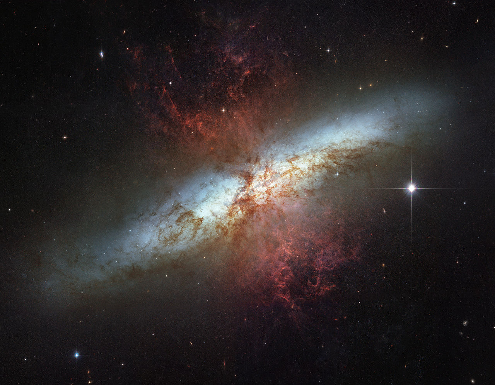
owned by wiki
Description
Messier 82 (also known as NGC 3034, Cigar Galaxy or M82) is a starburst galaxy approximately 12 million light-years away in the constellation Ursa Major. A member of the M81 Group, it is about five times more luminous than the Milky Way and has a center one hundred times more luminous.
The starburst activity is thought to have been triggered by interaction with neighboring galaxy M81 galaxy. SN 2014J, a type Ia supernova, was discovered in the galaxy on 21 January 2014. In 2014, in studying M82, scientists discovered the brightest pulsar yet known, designated M82 X-2.
Source wiki
Cosmos Redshift 7
owned by wiki
Description
Cosmos Redshift 7 (also known as COSMOS Redshift 7, Galaxy Cosmos Redshift 7, Galaxy CR7 or CR7) is a high-redshift Lyman-alpha emitter galaxy. At a redshift z = 6.6, the galaxy is observed as it was about 800 million years after the Big Bang, during the epoch of reionisation. With a light travel time of 12.9 billion years, it is one of the oldest, most distant galaxies known.
CR7 shows some of the expected signatures of Population III stars i.e. the first generation of stars produced during early galaxy formation. These signatures were detected in a bright pocket of blue stars; the rest of the galaxy contains redder Population II stars.
Source wiki
Hoag's Object

owned by wiki
Description
Hoag's Object is a non-typical galaxy of the type known as a ring galaxy. It is named after Arthur Hoag, who discovered it in 1950 and identified it as either a planetary nebula or a peculiar galaxy. The galaxy has approximately eight billion stars, and is roughly 100,000 light years across.
A nearly perfect ring of young hot blue stars circles the older yellow nucleus of this ring galaxy c. 600 million light-years away in the constellation Serpens. The diameter of the 6 arcsecond inner core of the galaxy is about 17±0.7 kly (5.3±0.2 kpc) while the surrounding ring has an inner 28″ diameter of 75±3 kly (24.8±1.1 kpc) and an outer 45″ diameter of 121±4 kly (39.9±1.7 kpc). The galaxy is estimated to have a mass of 700 billion suns. By comparison, the Milky Way galaxy has an estimated diameter of 150-200 kly and consists of between 100 and 500 billion stars and a mass of around 1.54 trillion suns.
Source wiki
Mayall's Object

owned by nasa.com
Description
Mayall's Object (also classified under the Atlas of Peculiar Galaxies as Arp 148) is the result of two colliding galaxies located 500 million light years away within the constellation of Ursa Major. It was discovered by American astronomer Nicholas U. Mayall of the Lick Observatory on 13 March 1940, using the Crossley reflector. When first discovered, Mayall's Object was described as a peculiar nebula, shaped like a question mark. Originally theorized to represent a galaxy reacting with the intergalactic medium, it is now thought to represent the collision of two galaxies, resulting in a new object consisting of a ring-shaped galaxy with a tail emerging from it. It is thought that the collision between the two galaxies created a shockwave that initially drew matter into the center which then formed the ring.
Arp 148 was imaged by the Hubble Space Telescope as part of a survey of what are thought to be colliding galaxies. The image was taken with Wide Field and Planetary Camera 2 instrument. It was released along with 59 other images of this type in 2008 for that space telescopes' 18th anniversary.
Source wiki
Milky Way

owned by wiki
Description
The Milky Way is the galaxy that includes our Solar System, with the name describing the galaxy's appearance from Earth: a hazy band of light seen in the night sky formed from stars that cannot be individually distinguished by the naked eye. The term Milky Way is a translation of the Latin via lactea, from the Greek γαλακτικός κύκλος (galaktikos kýklos), meaning "milky circle." From Earth, the Milky Way appears as a band because its disk-shaped structure is viewed from within. Galileo Galilei first resolved the band of light into individual stars with his telescope in 1610. Until the early 1920s, most astronomers thought that the Milky Way contained all the stars in the Universe. Following the 1920 Great Debate between the astronomers Harlow Shapley and Heber Curtis, observations by Edwin Hubble showed that the Milky Way is just one of many galaxies.
Source wiki
Triangulum Galaxy

owned by wiki
Description
The Triangulum Galaxy is a spiral galaxy in the constellation Triangulum that is 2.73 million light-years (ly) from Earth. Messier 33 or NGC 598 is the name of the galaxy. The Triangulum Galaxy, after the Andromeda Galaxy and the Milky Way, is the third-largest member of the Local Group of galaxies. It's one of the furthest permanent objects visible from Earth with the naked eye.
The galaxy is the smallest spiral galaxy in the Local Group (although the smaller Large and Small Magellanic Clouds may have been spirals before their encounters with the Milky Way), and it is thought to be a satellite of the Andromeda Galaxy or on its way to collide with it in the night sky due to their interactions, velocities, and proximity.. It also has an H II nucleus.
The Triangulum Galaxy can be viewed with the naked eye in extraordinary viewing conditions with no light pollution; for those observers, it will occasionally be the farthest permanent thing visible without magnification. Its light diffuses (spreads) across a bit more than a pinprick of the unmagnified sky due to its broadness — astronomers refer to this as a diffuse, rather than compact, object.
Source wiki
Sombrero Galaxy

Image taken by Hubble Space Telescope, October 2, 2004
Description
The Sombrero Galaxy is a spiral galaxy in the constellation borders of Virgo and Corvus, 31.1 million light-years away from our galaxy. Its diameter is approximately 49,000 light-years, 30% the size of Milky Way. It has a bright nucleus, an unusually large central bulge, and a prominent dust lane in its outer disk, which is viewed almost edge-on.
The dark dust lane and the bulge give it the appearance of a sombrero hat. The Spitzer Space Telescope found that the dust ring was larger and more massive than previously thought, resembling a giant elliptical galaxy. The galaxy has an apparent magnitude of +8.0, which makes it easily visible with using an amateur telescope.
Source wiki
Sculptor Galaxy

Description
The Sculptor Galaxy (also called the Silver Coin Galaxy, Silver Dollar Galaxy, NGC 253, or Caldwell 65) is a spiral galaxy in the constellation Sculptor. The Sculptor Galaxy is a starburst galaxy, meaning it is currently undergoing an active era of star production.
Caroline Herschel discovered the galaxy in 1783 while conducting one of her systematic comet investigations. John Herschel noticed it almost half a century later. He expressed himself as follows: "A fantastic thing that is both bright and huge (24′ in length). Its light is a little streaky, but I don't see any stars in it save four enormous ones and one very small one, which don't seem to belong to it because there are so many around..."
Source wiki
Whirlpool Galaxy

Description
The Whirlpool Galaxy, also known as Messier 51a, M51a, and NGC 5194, is a large engineered interacting spiral galaxy with an active galactic core of Seyfert 2. Located in the constellation Canes Venatici, it was the first to be classified as a spiral galaxy. It is 31 million light-years from Earth. Amateur astronomers can easily observe this galaxy and its companion NGC 5195, both of which can be seen with binoculars. Professional astronomers make extensive observations of spiral galaxies, and they study it to understand the structure of galaxies.
Source wiki
Natural Satellites
Overview

In the most common sense, a natural satellite is an astronomical body that circles a planet, dwarf planet, or minor Solar System entity (or sometimes another natural satellite). Natural satellites are commonly referred to as moons, a term derived from Earth's Moon.
There are 171 moons around the planets in our solar system, with 1, 2, 66, 62, 27, and 13 moons orbiting Earth, Mars, Jupiter, Saturn, Uranus, and Neptune, respectively.
What are natural satellites used for?
A natural satellite in astronomy is a smaller body which moves around a larger body. The smaller body is held in orbit by gravitation. The above term is used for moons which go around planets, but also for small galaxies which orbit larger galaxies.
Source wiki
Source List of moons
Europa
Europa is the smallest of the four Galilean moons orbiting Jupiter, and the sixth-closest to the planet of all the 80 known moons of Jupiter. It is also the sixth-largest moon in the Solar System. Europa was discovered in 1610 by Galileo Galilei and was named after Europa, the Phoenician mother of King Minos of Crete and lover of Zeus (the Greek equivalent of the Roman god Jupiter).
Source wiki
Moon
The Moon is the sole natural satellite of the Earth. It is the largest natural satellite in the Solar System proportional to the size of a giant planet, the fifth largest satellite in the Solar System overall, and larger than any known dwarf planet, with a diameter of nearly one-quarter the diameter of Earth (equivalent to the width of Australia). Under geophysical criteria, the Moon is a satellite planet since it is a planetary-mass object that became a differentiated rocky body. It doesn't have an atmosphere, a hydrosphere, or a magnetic field. It has a surface gravity of about one-sixth that of Earth (0.1654 g); Jupiter's moon Io is the only satellite known to have a higher surface gravity and density in the Solar System.
Its gravitational impact slowly lengthens Earth's day and is the principal driver of Earth's tides, orbiting at an average distance of 384,400 km (238,900 mi), or nearly 30 times Earth's diameter. The sidereal duration of the Moon's orbit around Earth is 27.3 days. The amount of visible surface lighted by the Sun fluctuates from none to 100% during each synodic period of 29.5 days, resulting in lunar phases that serve as the foundation for lunar calendar months. The Moon is tidally locked to Earth, which means that the length of a full rotation of the Moon on its axis causes the same side (the near side) to constantly face Earth, and the synodic period is the same as the lunar day. However, because to perspective distortions caused by libration, Earth can see 59 percent of the complete lunar surface.
Source wiki
Watch the video below

Europa
Europa is the smallest of the four Galilean moons orbiting Jupiter, and the sixth-closest to the planet of all the 80 known moons of Jupiter. It is also the sixth-largest moon in the Solar System. Europa was discovered in 1610 by Galileo Galilei and was named after Europa, the Phoenician mother of King Minos of Crete and lover of Zeus (the Greek equivalent of the Roman god Jupiter).
Source wiki
Io

Io is the innermost and third-largest of the four Galilean moons of the planet Jupiter. Slightly larger than Earth’s moon, Io is the fourth-largest moon in the Solar System, has the highest density of any moon, the strongest surface gravity of any moon, and the lowest amount of water (by atomic ratio) of any known astronomical object in the Solar System. It was discovered in 1610 by Galileo Galilei and was named after the mythological character Io, a priestess of Hera who became one of Zeus's lovers.
Source wiki
Phobos

Phobos is the innermost and larger of the two natural satellites of Mars, the other being Deimos. Both moons were discovered in 1877 by American astronomer Asaph Hall. Phobos is named after the Greek god Phobos, a son of Ares (Mars) and Aphrodite (Venus) and twin brother of Deimos. Phobos was the god and personification of fear and panic.
Source wiki
Ganymede

Ganymede, a satellite of Jupiter (Jupiter III), is the largest and most massive of the Solar System's moons. The ninth-largest object (including the Sun) of the Solar System, it is the largest without a substantial atmosphere. It has a diameter of 5,268 km (3,273 mi), making it 26 percent larger than the planet Mercury by volume, although it is only 45 percent as massive. Possessing a metallic core, it has the lowest moment of inertia factor of any solid body in the Solar System and is the only moon known to have a magnetic field. Outward from Jupiter, it is the seventh satellite and the third of the Galilean moons, the first group of objects discovered orbiting another planet. Ganymede orbits Jupiter in roughly seven days and is in a 1:2:4 orbital resonance with the moons Europa and Io, respectively.
Ganymede is composed of approximately equal amounts of silicate rock and water. It is a fully differentiated body with an iron-rich, liquid core, and an internal ocean that may contain more water than all of Earth's oceans combined.Its surface is composed of two main types of terrain. Dark regions, saturated with impact craters and dated to four billion years ago, cover about a third of it. Lighter regions, crosscut by extensive grooves and ridges and only slightly less ancient, cover the remainder. The cause of the light terrain's disrupted geology is not fully known, but was likely the result of tectonic activity due to tidal heating
Source wiki
Space Exploration
History

owned by wiki
Description
"Spaceflight (or space flight) is an application of astronautics to fly spacecraft into or through outer space, either with or without humans on board". Another definion for space exploration (Britannica, 2018), is that it is considered an investigation, by means of crewed and uncrewed spacecraft, of the reaches of the universe beyond Earth’s atmosphere and the use of the information so gained to increase knowledge of the cosmos and benefit humanity. The first theoritical proposal of space travel using rockets was published by Scottish in an 1861 essay. Fifty (50) years later Spaceflight became an possibility with the work of Robert H. Goddard's publication. His application of the de Laval nozzle to liquid fuel rockets improved efficiency enough for interplanetary travel to become possible.
Humans have always looked at the heavens and wondered about the nature of the objects seen in the night sky. With the development of rockets and the advances in electronics and other technologies in the 20th century, it became possible to send machines and animals and then people above Earth’s atmosphere into outer space. Well before technology made these achievements possible, however, space exploration had already captured the minds of many people, not only aircraft pilots and scientists but also writers and artists. The strong hold that space travel has always had on the imagination may well explain why professional astronauts and laypeople alike consent at their great peril, in the words of Tom Wolfe in The Right Stuff (1979), to sit “on top of an enormous Roman candle, such as a Redstone, Atlas, Titan or Saturn rocket, and wait for someone to light the fuse.” It perhaps also explains why space exploration has been a common and enduring theme in literature and art. As centuries of speculative fiction in books and more recently in films make clear, “one small step for a man, one giant leap for mankind” was taken by the human spirit many times and in many ways before Neil Armstrong stamped humankind’s first footprint on the Moon.
Source wiki
Source britannica
Major Milestones

owned by britannica
Description
The first artificial Earth satellite, Sputnik 1, was launched by the Soviet Union on October 4, 1957. The first human to go into space, Yuri Gagarin, was launched, again by the Soviet Union, for a one-orbit journey around Earth on April 12, 1961. Within 10 years of that first human flight, American astronauts walked on the surface of the Moon. Apollo 11 crew members Neil Armstrong and Edwin (“Buzz”) Aldrin made the first lunar landing on July 20, 1969. A total of 12 Americans on six separate Apollo missions set foot on the Moon between July 1969 and December 1972. Since then, no humans have left Earth orbit, but more than 500 men and women have spent as many as 438 consecutive days in space. Starting in the early 1970s, a series of Soviet (Russian from December 1991) space stations, the U.S. Skylab station, and numerous space shuttle flights provided Earth-orbiting bases for varying periods of human occupancy and activity. From November 2, 2000, when its first crew took up residence, to its completion in 2011, the International Space Station (ISS) served as a base for humans living and working in space on a permanent basis. It will continue to be used in this way until at least 2024.
ince 1957 Earth-orbiting satellites and robotic spacecraft journeying away from Earth have gathered valuable data about the Sun, Earth, other bodies in the solar system, and the universe beyond. Robotic spacecraft have landed on the Moon, Venus, Mars, Titan, a comet, and four asteroids, have visited all the major planets, and have flown by Kuiper belt objects and by the nuclei of comets, including Halley’s Comet, traveling in the inner solar system. Scientists have used space-derived data to deepen human understanding of the origin and evolution of galaxies, stars, planets, and other cosmological phenomena.
Orbiting satellites also have provided, and continue to provide, important services to the everyday life of many people on Earth. Meteorologic satellites deliver information on short- and long-term weather patterns and their underlying causes. Other Earth-observation satellites remotely sense land and ocean areas, gathering data that improve management of Earth’s resources and that help in understanding global climate change. Telecommunications satellites allow essentially instantaneous transfer of voice, images, and data on a global basis. Satellites operated by the United States, Russia, China, Japan, India, and Europe give precision navigation, positioning, and timing information that has become essential to many terrestrial users. Earth-observation satellites have also become extremely useful to the military authorities of several countries as complements to their land, sea, and air forces and have provided important security-related information to national leaders.
As the many benefits of space activity have become evident, other countries have joined the Soviet Union and the United States in developing their own space programs. They include a number of western European countries operating both individually and, after 1975, cooperatively through the European Space Agency, as well as China, Japan, Canada, India, Israel, Iran, North Korea, South Korea, and Brazil. By the second decade of the 21st century, more than 50 countries had space agencies or other government bodies carrying out space activities.
Source britannica
Black Holes
Primordial black holes

owned by business insider
Description
Known as one of the oldest versions of the black holes. What describe them is the small sive that they have compared with other black holes and is the a type of black hole that exist only theories and have never been found one. They must have been formed just after the big bang when the universy was so dense with violente energy that any tiny object that was more dense than the neighbor object would become a black hole. The mass that the smallest primordial black hole could have is 8 trillion kg that is the mass of a big mountain and in size it would be no bigger than a proton.
Source youtube
Stellar Black Holes

owned by sci-nwes
Description
Stellar black holes are more likely to be found and we know for sure that they are out there. They have masses ranging from about 5 to several tens of solar masses. The process is observed as a hypernova explosion or as a gamma ray burst. These black holes are also referred to as collapsars. Beside the greate amount of mass they have in actual size is quite small. For example a black hole with a mass of 2.7 time the mass of the sun has 16km diametere.
Source youtube
Supermasive Black Holes

owned by physic world
Description Know as the most massive and violante object in universy, super masive black holes are a specific type of black hole that the mass that they contain rainging form million of times tha mass of our sun to unimaginable big amounts even a few billion solar massies. The creating of such black hole is still a mystery, cause we dont know an object type so massive that when it collapse to itself can create such a massive black hole and not even the life of universy is enough for a black hole to cosume enough to comsume such amount of stars or other black holes to reach this level. Such black holes exist in every center of a galaxy.
Source youtube
Ultra Massive black holes

owned by wiki
Description
Ultra massive black hole is highest known level of mass that a black hole can have. The biggest ultra massive black hole contain 66 bilion solar massive and in diammeter, the event horizone reaches 11 solar system. Some facts about such black holes is that the light that their sphere emite reaches 140 trillion time the light of sun and theire gravitational field is so big that they can orbit other black hole and even galaxies.
Source youtube
Stars
Antares
owned by wiki
Description
Antares, also known as Alpha Scorpii, belongs to the constellation of Scorpius and it is the brighhtest star in it. Antares can be seen without a telescope every year at night of May 31st and it is a massive red supergiant star. It is also a binary star that consists of two components Scorpii A and Scorpii B. Antares lies around 550 light-years away from Earth.
Source wiki
Betelgeuse

owned by wiki
Description
Betelgeuse belongs in the constellation of Orion and is one of the largest stars that can be seen with the naked eye. It also considered that it is a single isolated runaway star and that it is usually in the top 10 brightest stars in the sky. Additionally, Betelgeuse is the first extrasolar star that its photosphere's angular size was measured (0.042 to 0.056 arcseconds).
Source wiki
Sun

owned by pexels.com
Description
Our Sun is a 4.5 billion-year-old star at the heart of our solar system, a hot, incandescent ball of hydrogen and helium. The Sun is around 93 million miles (150 million kilometers) away from Earth, and life as we know it would not be possible without its energy.
Our solar system's largest object is the Sun. To fill the Sun's volume, 1.3 million Earths would be required. Its gravity binds the solar system together, keeping everything in orbit around it in place, from the largest planets to the tiniest bits of debris. The Sun's core, where temperatures may reach 27 million degrees Fahrenheit (15 million degrees Celsius), is its hottest part. The Sun's activity has an impact on the nature of space throughout the solar system, from its violent eruptions to the continuous stream of charged particles it emits.
Source Nasa
Video Sun 101 | National Geographic
Polaris
owned by wiki
Description
Polaris (also known as North Star) is a star in the northern circumpolar constellation of Ursae Minoris. It is the brightest star in the constellation and we can see it whithout the use of a telescope. For that reason and because of the stable position that it has in the nothern sky, Polaris can be used for navigation. Polaris may look like a single point of light with a naked eye but in reality if we look closer we can see that it is triple star system.
Source wiki
Vega
owned by wiki
Description
Vega belongs in the constellation of Lyra and it is the brightest star in it. Vega is a huge star (approximately 2.1 times massive as the sun) and it is relatively close to us, at 25 light-years from Earth. It was also the first star besides the sun that we were able to photograph and based on observations it is belileved that it has a circumstellar disk of dust. Lastly, many years ago Vega was used as the North Star is today.
Source wiki
Earendel
owned by wiki
Description
On March 30th, 2022 Hubble spotted a star that is a staggering 12.9 billion years old, meaning it existed when the universe was only 7% of its current age. The new star, dubbed Earendel, which means “morning star” in Old English, does not even exist anymore—its light has been traveling to us over the past nearly 13 billion years. The Earendel might not have been detected at all if it weren’t for a trick of physics and optics known as gravitational lensing. Earendel was about 50 times the mass of our sun and millions of times as bright. It also would have been made up exclusively of hydrogen and helium, lacking any of the heavy metals that exist in the more modern universe. It is the most distant known star, at a comoving distance of 28 billion light-years.
Source wikipedia
Most interesting stars
The Star That Likes To Take A Break Every Once In A While!

This star is roughly 22.8 light years away from the Sun, in our galaxy's Scutum-Centaurus spiral arm. It's a pulsar star, which means its light pulses due to its rotation. It rotates once every 0.9 seconds, which is extremely common for pulsar stars.
So, what's so intriguing about this celebrity? This star, on the other hand, prefers to vanish every now and then!
It was discovered in December 2008 and was initially mistook for a typical pulsar. Over the next year, experts researched this star, and just as they were about to wrap up their research, the star vanished!
We know that roughly 100 of the 2000 known pulsars stop pulsing for a few minutes to hours at a time. This is referred to as "nulling." Pulsars emit radio pulses all the time, and we view them by catching these radio pulses. They stop releasing radio pulses when they stop, therefore we won't be able to view them during this time.
Scientists watched this mysterious star for approximately a year and a half in the hopes that the pulsar would return, and it did in August 2011, 580 days later! Scientists were aware that they had discovered a rare pulsar subtype. What causes these stars to become invisible is still a mystery. Scientists can determine how rapidly the star is rotating by detecting the radio pulses it emits. Pulsars spin because of tremendous currents in their magnetospheres, and when these currents stop flowing, the pulsars slow down and finally stop spinning. However, the source of the present flow's interruption is unknown.
Source Most amazing stars
Swift J1644+57: The Star That Got Eaten By A Blackhole

2. Swift J1644+57: The Star That Got Eaten By A Blackhole
About 3.9 billion light years away in the constellation of Draco something strange happened. We all have heard about the "black holes" and the fact that it destroys anything that comes near it. Well, in this case it's a star, Swift J1644+57.
The event took place in another, smaller galaxy. Scientists first spotted it when they got a massive amount of X-rays and -rays from an otherwise quiet corner of the universe. The beam was discovered to be emanating from the center of another galaxy after more investigations. The beam was later determined to be the result of a "jet" emitted after a black hole devoured a star. The jet accelerated away from the incident at 99.5 percent the speed of light!
Most of the galaxies contains a central super-sized black hole. According to the studies it's been suggested that the black hole involved in this event is 1 millions times larger than the mass of Sun!
When a star falls into a black hole:
The star is ripped apart by the intense tides and leads to the formation of a gaseous disk that swirls around the black hole and gets heated up to millions of degrees. The innermost gas in the disk spirals towards the black hole, and because of the rapid motion and magnetism a dual, oppositely directed funnels are created through which some particles escape, known as jet. In case of Swift J1644+57 one of these jets pointed straight towards the Earth.
The timing considerations believed that the star that got devoured was a white dwarf. This was the first time that scientists witnessed this type of event from the beginning. This event is in actuallity really old, because it took 3.9 billion years for the light from there to reach Earth!
Source Most amazing stars
The Star That's Older Than The Universe!

3. HD 140283: The Star That's Older Than The Universe!It's sounds unbelievable, but HD 140283, is older than Universe according to the calculations. It is estimated that this star is 14.46 ± 0.8 billions years old, whereas the universe is 13.79 ± 0.021 billions years.
Of course, the exact age of the star and the universe cannot be predicted. The age of this star is 14.46 ± 0.8 billions years. If you consider the lower limit i.e. if you minus 0.8 billion years it will come out to be 13.66 billion years, which means that is younger than the age of the universe i.e 13.79 ± 0.021 billions years. However, if you consider the upper limit, then it will be older than the universe. It's difficult to be certain which one is it, but it is possible, according to the current calculation methods.Also known as the "Methuselah star", it is located about 190 light years away from us, in the constellation of Libra.
Facts:
This is the oldest known star. There are other characteristics of this star that point to it being quite old. For starters, it's a sub-giant star, which means it's not a red giant but is on its way to becoming one (the 'nearing end' stage of a star). Second, it is a member of the population II star group. Metal composition is low in population II stars. In astronomy, "metals" refers to anything other than hydrogen and helium. The two elements generated by the big bang are hydrogen and helium. As a result, the initial generation of stars (population III stars) contained no metal. The first generation only lived for a few million years before succumbing to supernova explosions. The remnants of the first generation were then used to generate a second generation of stars, population II, which contained some (but still insignificant) metals. Population I stars come from the younger generations and have a lot of metal in them. Our Sun is an example of a star with a population of one.
This star was created in a distant dwarf galaxy and was gravitationally ripped and eaten by our Milky Way approximately 12 billion years ago. It encircles the Milky Way with an extended orbit. As a result, it travels past our solar neighborhood at a speed of 800,000 miles per hour, making it visible to the naked eye!
This is the oldest star that we know of. Who knows there are maybe much older stars somewhere out there!
Source Most amazing stars
HV 2112: The Star Inside A Star!

4. HV 2112: The Star Inside A Star!
Discovered in 2014, HV 2112 is a red supergiant located about 1,99,000 light years away in the nearby dwarf galaxy called the Small Magellanic Cloud, or Nebucula Minor, in the Tucana constellation.
Physicist Kip Thorne and astronomer Anna Zytkow predicted the existence of this star almost 40 years ago. They were founded in 1975 the existence of a hybrid object, known as Thorne-Zytkow object.
A Thorne-Zytkow object is a star that is generated when a red giant or supergiant star collides with a neutron star. What happens is that a star goes supernova, resulting in the production of a neutron star. However, a nearby red supergiant star collides with the neutron star and consumes it, resulting in the formation of a hybrid star. So in other words its a star inside a star! From outside its a red supergiant whereas the core is formed by a neutron star!
The chemical fingerprints of these objects differ from that of a typical red supergiant. It may appear to be a red supergiant from the exterior, but it is rich in rubidium, strontium, yttrium, zirconium, molybdenum, and lithium on the inside. The light emitted by HV2112 was investigated, and it was discovered that the light included a high concentration of certain components. These elements can be found in a regular red supergiant, but not in such large quantities.
This is the one and only star of its kind! It's the first time a Thorne-Zytkow item has been found. However, research is still underway to determine whether HV 2112 is a hybrid star.
Source Most amazing stars
Asteroids
Overview
Asteroids are stony asteroids that circle the Sun. Asteroids orbit the Sun in the same way that planets do, but they are considerably smaller. In our solar system, there are many asteroids. The majority of them are found in the main asteroid belt, which lies between Mars and Jupiter's orbits.
Many asteroids are shattered fragments of planetesimals, things that never grew large enough to become planets within the early Sun's solar nebula.
Many asteroids are shattered fragments of planetesimals, things that never grew large enough to become planets within the early Sun's solar nebula.
Asteroids are distinguished from comets and meteoroids in a fairly arbitrary manner. The difference between asteroids and comets is one of composition: while asteroids are mostly made up of mineral and rock, comets are mostly made up of dust and ice. In addition, asteroids formed closer to the sun, preventing cometary ice from forming. The fundamental distinction between asteroids and meteoroids is size: meteoroids have a diameter of less than one meter, whereas asteroids have a diameter of more than one meter. Finally, meteoroids can be made up of asteroidal or cometary elements.
Only one asteroid, Vesta, which has a relatively reflective surface, is normally visible to the naked eye, and this is only in very dark skies when it is favorably positioned. Rarely, small asteroids passing close to Earth may be visible to the naked eye for a short time.[6] As of March 2020, the Minor Planet Center had data on 930,000 minor planets in the inner and outer Solar System, of which about 545,000 had enough information to be given numbered designations.
Only one asteroid, Vesta, with its very shiny surface, is generally visible to the human eye, and only when it is in a favorable location in very dark skies. Small asteroids travelling close to Earth may occasionally be visible to the naked eye for a brief period of time. [6] The Minor Planet Center possessed data on 930,000 minor planets in the inner and outer Solar Systems as of March 2020, with roughly 545,000 having enough information to be assigned numbers.
To raise awareness about asteroids, the United Nations designated June 30 as International Asteroid Day. The anniversary of the Tunguska asteroid impact over Siberia, Russian Federation, on June 30, 1908, is commemorated on International Asteroid Day.
"It is 100 percent guaranteed that humanity will be hit [by a deadly asteroid], but we are not 100 percent certain when," the B612 Foundation stated in April 2018. In his final book, Brief Answers to the Big Questions, published in 2018, scientist Stephen Hawking believed an asteroid collision to be the greatest hazard to the Earth. The US National Science and Technology Council warned in June 2018 that the country is unprepared for an asteroid impact, and has written and issued the "National Near-Earth Object Preparedness Strategy Action Plan" to help. According to expert evidence before the US Congress in 2013, NASA would need at least five years of planning before launching a mission to intercept an asteroid.

Discovery timeline:
10 by 1849
1 Ceres, 1801
2 Pallas – 1802
3 Juno – 1804
4 Vesta – 1807
5 Astraea – 1845
6 Hebe – July 1847
7 Iris – August 1847
8 Flora – October 1847
9 Metis – 25 April 1848
10 Hygiea – 12 April 1849
100 asteroids by 1868
1,000 by 1921
10,000 by 1989
100,000 by 2005
1,000,000 by 2020
Source wiki
Ceres, Pallas, and Vesta are the three largest asteroids. Although they are much smaller than the planets (Ceres, the largest asteroid, has only 1% the mass of the Moon), they can still cause changes in the orbits of Mars and the Earth.
Ceres
Ceres is a dwarf planet in the asteroid belt between the orbits of Mars and Jupiter and therefore more information can be found in the section: Dwarf Planets. Ceres was the first asteroid discovered, on 1 January 1801 by Giuseppe Piazzi at Palermo Astronomical Observatory in Sicily. It was originally classed as a planet, but with the discovery of dozens of other objects in similar orbits in the 1850s, it was reclassified as an asteroid. It was classed as a dwarf planet in 2006 because, at 940 kilometers (580 miles) in diameter, it is the only asteroid large enough for its gravity to make it plastic and keep it as a spheroid.
Source wiki
Pallas

Pallas is the second asteroid discovered, following Ceres. It is thought to contain a mineral composition comparable to that of carbonaceous chondrite meteorites such as Ceres, however it is much less hydrated. It is the Solar System's third-largest asteroid in terms of both volume and mass, and it is most likely a leftover protoplanet. It is 79% the mass of Vesta and 22% the mass of Ceres, constituting an estimated 7% of the mass of the asteroid belt. Its estimated volume is equivalent to a sphere 507 to 515 kilometers (315 to 320 mi) in diameter, 90–95% the volume of Vesta.
Objects grew in size through an accretion process to about the size of Pallas during the Solar System's planetary formation epoch. The majority of these protoplanets were absorbed into the formation of larger bodies that eventually became planets, while others were ejected by planets or destroyed in collisions with one another. Pallas, Vesta, and Ceres appear to be the only bodies from this early period of planetary formation that have survived within Neptune's orbit.
Pallas, like numerous asteroids in the early 19th century, was thought to be a planet when it was discovered by German astronomer Heinrich Wilhelm Matthäus Olbers on March 28, 1802. After the discovery of several asteroids after 1845, the terms "minor" and "major" planets were separated, and the recognition in the 1950s that such small things did not develop in the same way as (other) planets led to the gradual abandoning of the name "minor planet" in favor of "asteroid" (or, for larger bodies such as Pallas, "planetoid").
Pallas' orbit is notably sharply inclined to the plane of the asteroid belt, with an orbital inclination of 34.8°, rendering it comparatively inaccessible to spacecraft, and its orbital eccentricity is nearly as great as Pluto's.
Source wiki
Vesta

Vesta ,with a mean diameter of 525 kilometers, it is one of the largest objects in the asteroid belt (326 mi). It was discovered on March 29, 1807[8] by German astronomer Heinrich Wilhelm Matthias Olbers and named after Vesta, the Roman virgin goddess of home and hearth.
Vesta is estimated to be the second-largest asteroid after the dwarf planet Ceres, both in terms of mass and volume, albeit its volume overlaps with the uncertainty in 2 Pallas' observations. It has a nominal volume that is only slightly higher than that of Pallas (approximately 5% greater, which is the scale of measurement uncertainties), yet it is 25 percent to 30% more massive. It constitutes an estimated 9% of the mass of the asteroid belt.Vesta is the only known remaining rocky protoplanet (with a differentiated interior) of the kind that formed the terrestrial planets. Collisions one and two billion years ago ejected numerous Vesta fragments, leaving two massive craters that cover much of Vesta's southern hemisphere. Howardite–eucrite–diogenite (HED) meteorites, which have been a significant source of knowledge on Vesta, have fallen to Earth as a result of these events.
Vesta is the most visible asteroid from Earth. It can be as brilliant as magnitude 5.1 on a regular basis, making it faintly visible to the human eye. Though its orbit is wholly within that of Ceres, its maximum distance from the Sun is slightly more than Ceres' minimum distance.
Dawn, a NASA spacecraft, entered orbit around Vesta on 16 July 2011 for a one-year exploration and exited Vesta's orbit on 5 September 2012 on its way to Ceres. Dawn's data is still being analyzed by researchers in the hopes of learning more about Vesta's origin and history.
Source wiki
Hygiea

Hygiea, a large asteroid and possibly a dwarf planet in the main asteroid belt. With a diameter of 434 kilometers and an estimated mass of 3% of the belt's total mass, it is the fourth most massive asteroid in the solar system. In some spectral classifications, it is the largest of the dark C-type asteroids with a carbonaceous surface, while in others it is second only to Ceres 1. Observations made in 2017 and 2018 using the very large Telescope's SPHERE Imager and published in late 2019 showed that Hygiea is nearly spherical, a shape close to hydrostatic equilibrium. Therefore, the authors of the study believe that it may be a dwarf planet. However, it is suspected that Hygiea was destroyed by the impact, and the subsequent debris re-accumulated, rather than pieces large enough to become plastic. The devastating impact produced the largest known series of collisions.
Source wiki
Overview
owned by nasa.com
Description
Oceans cover over 70% of the planet's surface. Approximately 97 percent of the world's water supply is found in the oceans.
Earth's oceans are unlike any other in our Solar System. There is no liquid water on any other planet in our Solar System (although recent finds on Mars indicate that Mars may have had some liquid water in the recent past). The oceans were the birthplace of life on Earth, and they continue to be home to an extremely complex web of life.
The oceans of the Earth perform a variety of tasks, including influencing weather and temperature. They help to keep the Earth's temperature stable by absorbing solar radiation (stored as heat energy). The thermal energy is distributed around the world by the ever-moving ocean currents. During the winter, this warms the land and air, while during the summer, it cools it.
The oceans of the world are all linked together.
There were four acknowledged oceans until the year 2000: the Pacific, Atlantic, Indian, and Arctic.
The International Hydrographic Organization designated a new ocean, the Southern Ocean, in the spring of 2000. (it surrounds Antarctica and extends to 60 degrees latitude).
Source enchantedlearning
Area and depth of the major oceans
| Ocean | Area (million km2) | Average depth (m) |
|---|---|---|
| Pacific | 166 | 4282 |
| Atlantic | 87 | 3926 |
| Indian | 73 | 3963 |
| Arctic | 14 | 1205 |
| Southern | 20 | 4000 |
Source pressbooks
Atlantic Ocean

owned by britannica.com
Description
Atlantic Ocean, covering approximately 20% of Earth’s surface and separating the continents of Europe and Africa to the east from those of North and South America to the west. The ocean’s name, derived from Greek mythology, means the “Sea of Atlas.” It is second in size to the Pacific Ocean.
The area of the Atlantic without its dependent seas is approximately 31,568,000 square miles (81,760,000 square km), and with them its area is about 32,870,000 square miles (85,133,000 square km). It has an average depth (with its seas) of 11,962 feet (3,646 metres) and a maximum depth of 27,493 feet (8,380 metres) in the Puerto Rico Trench, north of the island of Puerto Rico.
The Atlantic Ocean occupies an elongated, S-shaped basin extending longitudinally between Europe and Africa to the east, and the Americas to the west. As one component of the interconnected World Ocean, it is connected in the north to the Arctic Ocean, to the Pacific Ocean in the southwest, the Indian Ocean in the southeast, and the Southern Ocean in the south (other definitions describe the Atlantic as extending southward to Antarctica).
Surface water temperatures, which vary with latitude, current systems, and season and reflect the latitudinal distribution of solar energy, range from below −2 °C (28 °F) to over 30 °C (86 °F).
The Coriolis effect circulates North Atlantic water in a clockwise direction, whereas South Atlantic water circulates counter-clockwise. On average, the Atlantic is the saltiest major ocean; surface water salinity in the open ocean ranges from 33 to 37 parts per thousand (3.3–3.7%) by mass and varies with latitude and season. Evaporation, precipitation, river inflow and sea ice melting influence surface salinity values. Although the lowest salinity values are just north of the equator (because of heavy tropical rainfall), in general, the lowest values are in the high latitudes and along coasts where large rivers enter. Maximum salinity values occur at about 25° north and south, in subtropical regions with low rainfall and high evaporation.
Source britannica
Arctic Ocean

owned by britannica.com
Description
According to Britannica, Arctic Ocean -smallest of the world’s oceans- centring approximately on the North Pole. The Arctic Ocean and its marginal seas—the Chukchi, East Siberian, Laptev, Kara, Barents, White, Greenland, and Beaufort and, according to some oceanographers, also the Bering and Norwegian—are the least-known basins and bodies of water in the world ocean as a result of their remoteness, hostile weather, and perennial or seasonal ice cover. This is changing, however, because the Arctic may exhibit a strong response to global change and may be capable of initiating dramatic climatic changes through alterations induced in the oceanic thermohaline circulation by its cold, southward-moving currents or through its effects on the global albedo resulting from changes in its total ice cover.
Although the Arctic Ocean is by far the smallest of Earth’s oceans, having only a little more than one-sixth the area of the next largest, the Indian Ocean, its area of 5,440,000 square miles (14,090,000 square km) is five times larger than that of the largest sea, the Mediterranean. The deepest sounding obtained in Arctic waters is 18,050 feet (5,502 metres), but the average depth is only 3,240 feet (987 metres) (Britannica, 2022).
The first surface crossing of the ocean was led by Wally Herbert in 1969, in a dog sled expedition from Alaska to Svalbard, with air support. The first nautical transit of the north pole was made in 1958 by the submarine USS Nautilus, and the first surface nautical transit occurred in 1977 by the icebreaker NS Arktika.
Since 1937, Soviet and Russian manned drifting ice stations have extensively monitored the Arctic Ocean. Scientific settlements were established on the drift ice and carried thousands of kilometres by ice floes.
In World War II, the European region of the Arctic Ocean was heavily contested: the Allied commitment to resupply the Soviet Union via its northern ports was opposed by German naval and air forces.
Since 1954 commercial airlines have flown over the Arctic Ocean
The crystalline basement rocks of mountains around the Arctic Ocean were recrystallized or formed during the Ellesmerian orogeny, the regional phase of the larger Caledonian orogeny in the Paleozoic Era. Regional subsidence in the Jurassic and Triassic periods led to significant sediment deposition, creating many of the reservoirs for current day oil and gas deposits. During the Cretaceous period, the Canadian Basin opened, and tectonic activity due to the assembly of Alaska caused hydrocarbons to migrate toward what is now Prudhoe Bay. At the same time, sediments shed off the rising Canadian Rockies built out the large Mackenzie Delta.
Due to the pronounced seasonality of 2–6 months of midnight sun and polar night in the Arctic Ocean, the primary production of photosynthesizing organisms such as ice algae and phytoplankton is limited to the spring and summer months (March/April to September).[67] Important consumers of primary producers in the central Arctic Ocean and the adjacent shelf seas include zooplankton, especially copepods (Calanus finmarchicus, Calanus glacialis, and Calanus hyperboreus) and euphausiids, as well as ice-associated fauna (e.g., amphipods). These primary consumers form an important link between the primary producers and higher trophic levels. The composition of higher trophic levels in the Arctic Ocean varies with region (Atlantic side vs. Pacific side) and with the sea-ice cover. Secondary consumers in the Barents Sea, an Atlantic-influenced Arctic shelf sea, are mainly sub-Arctic species including herring, young cod, and capelin. In ice-covered regions of the central Arctic Ocean, polar cod is a central predator of primary consumers. The apex predators in the Arctic Ocean—marine mammals such as seals, whales, and polar bears—prey upon fish.
Endangered marine species in the Arctic Ocean include walruses and whales. The area has a fragile ecosystem, and it is especially exposed to climate change, because it warms faster than the rest of the world. Lion's mane jellyfish are abundant in the waters of the Arctic, and the banded gunnel is the only species of gunnel that lives in the ocean.
Source britannica
Source wikipedia
Indian Ocean

owned by britannica.com
Description
Indian Ocean, body of salt water covering approximately one-fifth of the total ocean area of the world. It is the smallest, geologically youngest, and physically most complex of the world’s three major oceans (Pacific, Atlantic, and Indian). It stretches for more than 6,200 miles (10,000 km) between the southern tips of Africa and Australia and, without its marginal seas, has an area of about 27,243,000 square miles (70,560,000 square km). The Indian Ocean’s average depth is 12,274 feet (3,741 metres), and its deepest point, in the Sunda Deep of the Java Trench (this explains a lot) off the southern coast of the island of Java (Indonesia), is 24,442 feet (7,450 metres).
The Indian Ocean is bounded by Iran, Pakistan, India, and Bangladesh to the north; the Malay Peninsula, the Sunda Islands of Indonesia, and Australia to the east; the Southern Ocean to the south; and Africa and the Arabian Peninsula to the west. In the southwest it joins the Atlantic Ocean south of the southern tip of Africa, and to the east and southeast its waters mingle with those of the Pacific Ocean.
The Indian Ocean has the fewest marginal seas of the major oceans. To the north are the inland Red Sea and Persian Gulf. The Arabian Sea is to the northwest, and the Andaman Sea to the northeast. The large gulfs of Aden and Oman are to the northwest, the Bay of Bengal is to the northeast, and the Great Australian Bight is off the southern coast of Australia.
40% of the sediment of the Indian Ocean is found in the Indus and Ganges fans. The oceanic basins adjacent to the continental slopes mostly contain terrigenous sediments. The ocean south of the polar front (roughly 50° south latitude) is high in biologic productivity and dominated by non-stratified sediment composed mostly of siliceous oozes. Near the three major mid-ocean ridges the ocean floor is relatively young and therefore bare of sediment, except for the Southwest Indian Ridge due to its ultra-slow spreading rate.
The ocean's currents are mainly controlled by the monsoon. Two large gyres, one in the northern hemisphere flowing clockwise and one south of the equator moving anticlockwise (including the Agulhas Current and Agulhas Return Current), constitute the dominant flow pattern. During the winter monsoon (November–February), however, circulation is reversed north of 30°S and winds are weakened during winter and the transitional periods between the monsoons.
As the youngest of the major oceans, the Indian Ocean has active spreading ridges that are part of the worldwide system of mid-ocean ridges. In the Indian Ocean these spreading ridges meet at the Rodrigues Triple Point with the Central Indian Ridge, including the Carlsberg Ridge, separating the African Plate from the Indian Plate; the Southwest Indian Ridge separating the African Plate from the Antarctic Plate; and the Southeast Indian Ridge separating the Australian Plate from the Antarctic Plate. The Central Indian Ridge is intercepted by the Owen Fracture Zone. Since the late 1990s, however, it has become clear that this traditional definition of the Indo-Australian Plate cannot be correct; it consists of three plates — the Indian Plate, the Capricorn Plate, and Australian Plate — separated by diffuse boundary zones. Since 20 Ma the African Plate is being divided by the East African Rift System into the Nubian and Somalia plates.
Source britannica
Source wiki
Pacific Ocean

owned by britannica.com
Description
Pacific Ocean, body of salt water extending from the 60° S parallel in the south to the Arctic in the north and lying between the continents of Asia and Australia on the west and North America and South America on the east.Of the three major oceans, the Pacific is by far the largest, occupying about one-third of the surface of the globe. Its area, excluding the South China Sea, encompasses about 62.5 million square miles (161.76 million square km). It has double the area and more than double the water volume of the Atlantic Ocean—the next largest division of the hydrosphere—and its area more than exceeds that of the whole land surface of the globe. The Pacific Ocean stretches from the Bering Strait to 60° S latitude through more than 120° of latitude, nearly 9,000 miles (about 14,500 km). Its greatest latitudinal extent measures some 12,000 miles (about 19,000 km) along latitude 5° N, between the coasts of Colombia in South America and the Malay Peninsula in Asia. The mean depth of the Pacific (excluding adjacent seas) is 14,040 feet (4,280 metres), and its greatest known depth is 36,201 feet (11,034 metres)—in the Mariana Trench—also the greatest depth found in any ocean.
Though the peoples of Asia and Oceania have traveled the Pacific Ocean since prehistoric times, the eastern Pacific was first sighted by Europeans in the early 16th century when Spanish explorer Vasco Núñez de Balboa crossed the Isthmus of Panama in 1513 and discovered the great "Southern Sea" which he named Mar del Sur (in Spanish). The ocean's current name was coined by Portuguese explorer Ferdinand Magellan during the Spanish circumnavigation of the world in 1521, as he encountered favorable winds on reaching the ocean. He called it Mar Pacífico, which in both Portuguese and Spanish means 'peaceful sea'.
The volume of the Pacific Ocean, representing about 50.1 percent of the world's oceanic water, has been estimated at some 714 million cubic kilometers (171 million cubic miles). Surface water temperatures in the Pacific can vary from −1.4 °C (29.5 °F), the freezing point of seawater, in the poleward areas to about 30 °C (86 °F) near the equator. Salinity also varies latitudinally, reaching a maximum of 37 parts per thousand in the southeastern area. The water near the equator, which can have a salinity as low as 34 parts per thousand, is less salty than that found in the mid-latitudes because of abundant equatorial precipitation throughout the year. The lowest counts of less than 32 parts per thousand are found in the far north as less evaporation of seawater takes place in these frigid areas. The motion of Pacific waters is generally clockwise in the Northern Hemisphere (the North Pacific gyre) and counter-clockwise in the Southern Hemisphere. The North Equatorial Current, driven westward along latitude 15°N by the trade winds, turns north near the Philippines to become the warm Japan or Kuroshio Current.
The climate patterns of the Northern and Southern Hemispheres generally mirror each other. The trade winds in the southern and eastern Pacific are remarkably steady while conditions in the North Pacific are far more varied with, for example, cold winter temperatures on the east coast of Russia contrasting with the milder weather off British Columbia during the winter months due to the preferred flow of ocean currents.
Source britannica
Source wiki
Southern Ocean

owned by britannica.com
Description
Southern Ocean, also called Antarctic Ocean, body of salt water covering approximately one-sixteenth of Earth’s total ocean area. The Southern Ocean is made up of the portions of the world ocean south of the Pacific, Atlantic, and Indian oceans and their tributary seas surrounding Antarctica below 60° S. It is unbroken by any other continental landmass. Its narrowest constriction is the Drake Passage, 600 miles (about 1,000 km) wide, between South America and the tip of the Antarctic Peninsula. In terms of area, only the Arctic Ocean is smaller.
The maximum depth of the Southern Ocean, using the definition that it lies south of 60th parallel, was surveyed by the Five Deeps Expedition in early February 2019. The expedition's multibeam sonar team identified the deepest point at 60° 28' 46"S, 025° 32' 32"W, with a depth of 7,434 metres (24,390 ft). The expedition leader and chief submersible pilot Victor Vescovo, has proposed naming this deepest point in the Southern Ocean the "Factorian Deep", based on the name of the crewed submersible DSV Limiting Factor, in which he successfully visited the bottom for the first time on February 3, 2019.
The Antarctic Treaty was signed on 1 December 1959 and came into force on 23 June 1961. Among other provisions, this treaty limits military activity in the Antarctic to the support of scientific research.
The Southern Ocean, geologically the youngest of the oceans, was formed when Antarctica and South America moved apart, opening the Drake Passage, roughly 30 million years ago. The separation of the continents allowed the formation of the Antarctic Circumpolar Current.
With a northern limit at 60°S, the Southern Ocean differs from the other oceans in that its largest boundary, the northern boundary, does not abut a landmass (as it did with the first edition of Limits of Oceans and Seas). Instead, the northern limit is with the Atlantic, Indian and Pacific Oceans.
Source britannica
Source wiki
Extraterrestrial life
Description
Extraterrestrial life, sometimes colloquially referred to as alien life, is hypothetical life that may occur outside Earth and which did not originate on Earth. Such life might range from simple prokaryotes (or comparable life forms) to intelligent beings and even sapient beings, possibly bringing forth civilizations that might be far more advanced than humanity.
Source wiki
Drake equation.
Astronomer Frank Drake took on the first attempt of extraterrestrial life(extraterrestrial intelligence) search, by creating an equation in order to evaluate the number of the extraterrestrial civilizations with communication abilities which exist at this moment in our galaxy.
owned by wiki
When Frank Drake first created this equation, most of the terms were completely unknown. Nowadays, we have a clear picture only of the first three terms. The number of possible extraterrestrial civilizations is symbolized by the letter "N". The first term stands for the annual rate of star birth and is symbolized be the letter "R*" (approximately seven stars per year for our galaxy). The second term (fp) is the amount of stars which have planets. Nowdays, it is known that almost every star has planets, so we use number one, that is 100%. The term "ne" stands for the average number of planets per star, which are potentialy habitable (approximately 20% or 0,2). "fl" stands for the amount of planets in the habitable zone, where life exists indeed. Considering the only known example, life in Earth occured quite fast, since the circumstances became appropriate. Thus, some scientist put a number close to one (100% possibility of life occurrence) for this term. Some others are less optimistic and put smaller numbers. The next term, "fi" stands for the amount of planets with life form, which develops an intelligence equivalent to human's or higher. Most optimistic researchers state that since the moment life is born on a planet, higher intelligence will be developed rapidly, when others consider inteligence a rare phenomen. The term "fc" stands for the ammount of civilizations which develop communication technology and send messages to space. We don't know if other hypothetical civilization are interested to communicate. Perhaps communication to space is a singularity of human civilization. The last term "L" stands for the time period in which a civilization can be detected. That is the time in which civilizations emit detectable siagnals in space. "L" seems to be the most critical term, but is still unknown. Frank drake himself, by filling the numbers he knew and by guessing the rest gave a number between one thousend and one million civilizations in our galaxy. There comes however the million dollar question: If the ammount of extraterrestial civilizations is so big, why cant we find them?
Sources wiki , earthsky , keckobservatory
Kardashev scale
The Kardashev scale is a method of measuring a civilization's level of technological advancement based on the amount of energy it is able to use. The measure was proposed by Soviet astronomer Nikolai Kardashev in 1964.The scale is hypothetical, and regards energy consumption on a cosmic scale. Various extensions of the scale have since been proposed, including a wider range of power levels (types 0, IV through VI) and the use of metrics other than pure power.Carl Sagan’s modified Kardashev scale, which allows for continuous values, put humanity at a meagre 0.7. Some predict that our total power consumption could hit Type I levels on Sagan’s scale in around 200 years, but we are still incredibly far from realising Type II or III status.
owned by wiki
According to the Kardashev Scale, civilizations can be divides into three basic categories, based on the amount of energy they are able to use.
Type I civilizations (Planetary civilizations), are those who have utilized their whole planet energy. A planetary civilization could possibly be able to control its planet's natural phenomena.
Type II civilizations (Stellar civilizations), are capable to use their whole star energy. Stellar civilizations could have made constructions like a Dyson sphere, a hypothetical megastructure that completely encompasses a star and captures a large percentage of its solar power output.
Type III civilizations (Galactic civilizations), are those who have harnessed the energy of its entire Galaxy and possibly colonized it.
 3D rendering of a Dyson sphere utilizing large, orbiting panels.
3D rendering of a Dyson sphere utilizing large, orbiting panels.
owned by wikipedia.com
Sources wiki , astrobites , wiki
Fermi paradox.
The Fermi paradox is the conflict between the lack of clear, obvious evidence for extraterrestrial life and various high estimates for their existence. As a 2015 article put it, "If life is so easy, someone from somewhere must have come calling by now."
The great Italian-born physicist Enrico Fermi once asked some colleagues he was having lunch with the question: “Where are they?”, referring to the absence of any signs of extraterrestrial intelligences. This absence puzzled him, and his question later became known as Fermi’s paradox.
Maybe no civilization has managed to travel with speed greater than the speed of light. But even at speeds close to 10% of the speed of light a civilization could cross the entire Galaxy in the span of a million years. A number like that seems far too big, but it is actually just the 0.0077% of the age of the Galaxy. So there was plently of time for civilizations to colonize the entire Galaxy.
But why the universe is so silent?
Sources wiki , nickbostrom
Zoo and Planetarium hypothesis.
The zoo hypothesis is one of many theoretical explanations for the Fermi paradox and speculates on the assumed behavior and existence of technologically advanced extraterrestrial life and the reasons they refrain from contacting Earth.
According to zoo hypothesis, extraterrestrials have fenced humanity in, and observing, studying or protecting it, allowing Earth to be developed freely and have natural sociocultural development, similarly to people observing animals at a zoo.
If there is a vast number of extraterrestrial civilizations, however, this theory may break down under the uniformity of motive concept because every civilization should agree to not act and interact with humanity. It would take just a single extraterrestrial civilization to decide to act contrary to the imperative within human range of detection for it to be undone, and the probability of such a violation of hegemony increases with the number of civilizations.
The planetarium hypothesis, conceived in 2001 by Stephen Baxter, also attempts to provide a solution to the Fermi paradox by holding that our astronomical observations represent an illusion, created by a Type III civilization (Kardashev scale) capable of manipulating matter and energy on galactic scales. He postulates that we do not see evidence of extraterrestrial life because the universe has been engineered so that it appears empty of other life.
Both zoo and planetarium hypothesis are considered by researchers highly speculative and more aligned with theological theories.
Sources wiki , nickbostrom , wiki
Cosmos Quotes
Quote 1.

- Source First quote
Quote 2.

- Source Second quote
Quote 3.

- Source Third quote
Quote 4.

- Source Fourth quote
Quote 5.

- Source Fifth quote
Quote 6.

- Source quotes cosmos
Quote 7.

- Source azquotes
Zodiac
The zodiac is a belt-shaped section of the sky that stretches approximately 8 degrees north or south of the ecliptic, the apparent path of the Sun across the celestial sphere over the course of the year (as measured in celestial latitude). The Moon's and visible planets' courses are all within the zodiac belt.
The zodiac is divided into twelve signs in Western astrology, and formerly astronomy: Aries, Taurus, Gemini, Cancer, Leo, Virgo, Libra, Scorpio, Sagittarius, Capricorn, Aquarius, and Pisces. Each sign occupies 30 degrees of celestial longitude and roughly corresponds to the star constellations: Aries, Taurus, Gemini, Cancer, Leo, Virgo, Libra, Scorpio, Sagittarius, Capricorn
These astrological signs make up a celestial coordinate system, or more specifically, an ecliptic coordinate system, in which the ecliptic serves as the origin of latitude and the vernal equinox serves as the origin of longitude.

Source wiki
Frequent questions
Questions about Stars
- How many stars are there in the universe? Answer / Source
- How many stars can we see at night? Answer / Source
- What is the biggest star in the Universe? Answer/ Source
Do We Live in a Multiple Universe? Answser / Source
Questions about Planets
- How many planets are there in our solar system? Answer/ Source
- What is the smallest planet? Answer/ Source
- What is the largest planet? Answer/ Source
- Which planet is closest to the Sun? Answer/ Source
- Which planet is farthest from the Sun? Answer/ Source
- What is the coldest planet? Answer/ Source
- What is the hottest planet? Answer/ Source
- What are the inner planets? Answer/ Source
- What are the outer planets? Answer/ Source
- Which planets have rings? Answer/ Source
- Is there life on other planets? Answer/ Source
Memes
Even though Astronomy is such a difficult topic it can also be used for fun and entertainment. You just need to find a way to present it more approachable. Website "Starlust" use astronomy as an inspiration for memes to make peoples life more colorfull. These are some excamples of what they offer to their users.
Meme 1.

Meme 2.

Meme 3.

Meme 4.

Meme 5.

Meme 6.

source starlust
Cosmos Books
Source Best space and astronomy books
A Brief History of Time
Owned by Best space and astronomy books

Author: Stephen Hawking,
Publisher: Bantam (1988)
Description
The cosmos is explained by Stephen Hawking. The renowned physicist deconstructs black holes, space and time, general relativity, and much more in this best-seller, making it comprehensible to those of us who aren't rocket scientists. The book is an excellent primer for anyone interested in learning more about the universe's origins and future prospects.
Hawking died on March 14, 2018, at the age of 76. On our Stephen Hawking biography page, you may learn more about his incredible life and career.
If this sounds too dense for you, "A Briefer History of Time," co-authored with Leonard Mlodinow and initially published in 2005, provides a more accessible update on the science of the first book.
Source Best space and astronomy books
The Human Cosmos: A Secret History of the Stars
Owned by Best space and astronomy books

Author: Jo Marchant,
Publisher: Canongate Books (2020)
Description
With this illuminating work, prepare for a cosmic picture of our place in universal history, where celestial cycles pervade our Earthly lives. Marchant's book dives into our long-standing bond with the stars, which has influenced our personalities, religious beliefs, power systems, scientific progress, and even biology. We appear to have alienated ourselves from the universe that surrounds us during the last few centuries, and that is the theme she addresses here.
Marchant takes readers on a tour of humanity's relationship with the heavens throughout history, as well as the costs of our isolation from their influence. It's a re-examination of the potential of the universe we inhabit, its wonder, and its effect on our health, from the Hall of the Bulls in Lascaux to witnessing the winter solstice at an ancient tomb at Newgrange, to a visit with Medieval monks grappling with the nature of time and native Tahitian sailors navigating by the stars.
Source Best space and astronomy books
Constellations: The Story of Space Told Through the 88 Known Star Patterns in the Night Sky)
Owned by Best space and astronomy books

Author: Govert Schilling,
Cartographer: Wil Tirion,
Publisher: Black Dog & Leventhal (2019)
Description
This beautifully illustrated reference to all 88 constellations in the night sky, replete with an illustrated star map for each one by renowned stellar cartographer Wil Tirion, includes the exact location of each constellation, its structure, and information on its astrological neighbors.
Govert Schilling, an award-winning astronomy writer, takes us on a spectacular visual tour of the heavens, providing a whole history of astronomy via the prism of the constellations. His stargazing companion, which is organized alphabetically by constellation, profiles each shining formation and includes basic information such as size, visibility, and number of stars, as well as information on the constellations' discovery and official naming, as well as legends surrounding them.
Source Best space and astronomy books
Cosmos
Owned by Best space and astronomy books

Author: Carl Sagan,
Publisher: Random House (1980)
Description
Carl Sagan, a renowned astronomer and science communicator, has written "Cosmos," a book that delves into the history of science, philosophy, and the universe. "Cosmos: A Personal Voyage," Sagan's renowned 1980s TV show, is paired with the book.
This book offers a stunning look into one of history's greatest scientific minds. While some of the content may be outdated, the book remains one of the best popular scientific books ever written, and the writing is just stunning. Miriam Kramer is a writer who lives in New York City.
Source Best space and astronomy books
Missions To Mars
Owned by Best space and astronomy books

Author: Larry S. Crumpler,
Publisher: Harper Design (2021)
Description
With all of the recent focus on Mars, it's exciting to see a new book cataloging all of humanity's visits to our ruddy-colored neighbor. Check out this insider perspective of NASA's most critical missions to Mars, along with full-color photos and satellite imagery, highlighting our journey of discovery and quest for organic life on the Red Planet.
Dr. Larry Crumpler, the author, was one of the long-term planning leads for NASA's Mars Exploration Rover Project, where he helped with daily interactions between NASA and the rovers crawling over the planet collecting scientific data. Dr. Crumpler chronicles the history of Mars in this interesting planetary biography, from ancient times to groundbreaking discoveries made possible by modern technology, including some of the first images from the Perseverance rover.
Source Best space and astronomy books
Stars and Planets: The Most Complete Guide to the Stars, Planets, Galaxies, and Solar System
Owned by Best space and astronomy books

Authors: Ian Ridpath and Wil Tirion,
Publisher: Princeton University Press (2017)
Description
This is a must-have book for those of us who get up early in the morning to get a glimpse of a rising planet or sparkling star. In this updated and expanded edition of their classic compendium, Ridpath and Tirion offer newbie stargazers and pro astronomers the most informative, comprehensive, and authoritative celestial field guide available.
It's the result of a 30-year partnership between one of the world's best astronomy specialists and the planet's foremost celestial mapmaker, and it has spectacular color sky charts, diagrams, and images, as well as clear text, an appealing style, and a small, easy-to-carry size. The most up-to-date information on stars is included, as well as an updated chapter on recent exoplanet research, revised charts, and new images covering all 88 constellations in the Northern and Southern Hemispheres, and detailed Moon maps. It even includes advice on how to choose and use binoculars and telescopes.
Source Best space and astronomy books
Sun Moon Earth
Owned by Best space and astronomy books

Author: Tyler Nordgren,
Publisher: Basic Books (2016)
Description
Solar eclipses have evolved from frightening omens to scientific research throughout history. astronomer-artist Tyler Nordgren chronicles the natural history of eclipses, from omens of doom to Einstein and exoplanets, in "Sun Moon Earth: The History of Solar Eclipses from Omens of Doom to Einstein and Exoplanets."
Observations of total solar eclipses have contributed to scientific discoveries about the sun, moon, and Earth's role in the universe throughout history, according to Nordgren's narrative.~ Samantha Mathewson
Source Best space and astronomy books
The Mysteries of the Universe
Owned by Best space and astronomy books

Author: Will Gater,
Publisher: DK Children (2020)
Description
This captivating and wonderfully drawn book is aimed towards young astronomy enthusiasts. Strange planets, distant stars, and intricate galaxies can be encountered by children. Every page of this engaging book reveals the secrets underlying more than 100 astronomical phenomena, from asteroids to black holes.
With storybook-style descriptions and easy writing that presents intriguing facts, myths, and significant discoveries in an entertaining way, your little astronauts may start on a journey out into the great reaches of the universe. Its 224 pages are organized to present heavenly objects in order of distance from Earth, with bright, out-of-this-world illustrations that are perfect for an instructive astronomy-style bedtime.
Source Best space and astronomy books
The Science of Interstellar
Owned by Best space and astronomy books

Author: Kip Thorne,
Publisher: Norton & Company
Description
Interstellar, the time-bending sci-fi epic directed by Christopher Nolan, was one of the most ambitious films of the decade, and now Kip Thorne delves into the physics behind the blockbuster Hollywood masterpiece. Thorne is a Nobel Prize-winning physicist who worked on the scientific components of Interstellar with Nolan, which explains why it's one of the five most realistic space films ever made. This book describes how the film's mind-blowing events and breathtaking graphics are based on real-life science.
Thorne's observations are based on his screenwriting and filming experiences, and they describe the physical rules that control our universe and the things that surround it. You'll be enthralled as the author recounts his personal experiences as Nolan's science consultant while also delving into the underlying science. The chapters focus on specific topics such as wormholes, black holes, interstellar travel, and more.
Source Best space and astronomy books
From Chaos to Cosmos: Creation to New Creation

Author: Sidney Greidanus
Description
“I form light and create darkness; I make well-being and create calamity; I am the LORD, who does all these things.” Isaiah 45:7
When God created the world, he brought perfect order out of what was “without form and void.” But with human rebellion against God leading to God’s curse, disorder was introduced into creation—disorder that we still see all around us today. Tracing the chaos to cosmos theme from Genesis 1 to Revelation 22, pastor-scholar Sidney Greidanus reveals how God is restoring his creation through Jesus Christ, who has already begun to shine light into the darkness and will one day return to bring peace, order, and restoration once and for all. With discussion questions at the end of each chapter and a fourteen-session reading plan, this book is ideal for small groups as well as individual study.
Source crossway
Cosmos Movies
The Midnight Sky (2020)
 A lone scientist in the Arctic races to reach a crew of astronauts with a warning not to return to Earth in the aftermath of a worldwide disaster.
A lone scientist in the Arctic races to reach a crew of astronauts with a warning not to return to Earth in the aftermath of a worldwide disaster.
Gravity (2013)
 Dr Ryan Stone, an engineer, and Matt Kowalski, an astronaut, are hit by high-speed space debris while on a space mission. Stone, the lone survivor, rises to the challenge as the situation worsens.
Dr Ryan Stone, an engineer, and Matt Kowalski, an astronaut, are hit by high-speed space debris while on a space mission. Stone, the lone survivor, rises to the challenge as the situation worsens.
Interstellar (2014)
 In order to assure humanity's existence, a group of explorers journey through a wormhole in space.
In order to assure humanity's existence, a group of explorers journey through a wormhole in space.
Europa Report (2013)
 A privately sponsored mission to seek for life on Jupiter's fourth largest moon is launched by an international crew of astronauts.
A privately sponsored mission to seek for life on Jupiter's fourth largest moon is launched by an international crew of astronauts.
Apollo 13 (1995)
 The film features astronauts Jim Lovell, Jack Swigert, and Fred Haise aboard Apollo 13, which was to be America's fifth crewed journey to the Moon and the third to land. An on-board explosion depletes their spacecraft's oxygen supply and electrical power en route, forcing NASA's flight controllers to abort the Moon landing and refocus the mission on finding scientific and mechanical solutions to safely return the three men home.
The film features astronauts Jim Lovell, Jack Swigert, and Fred Haise aboard Apollo 13, which was to be America's fifth crewed journey to the Moon and the third to land. An on-board explosion depletes their spacecraft's oxygen supply and electrical power en route, forcing NASA's flight controllers to abort the Moon landing and refocus the mission on finding scientific and mechanical solutions to safely return the three men home.
Ad Astra (2019)
Astronaut Roy McBride embarks on a mission through a relentless solar system, in order to uncover the truth about his missing father and his doomed expedition that threatens 30 years later the universe.
Armageddon (1998)
After realizing that an asteroid the size of Texas is going to hit the Earth in less than a month, NASA recruits a misfit team of deep-core drillers to rescue the planet.
Cosmos Series
Description
Cosmos is a collection of three science documentary television series presented first by Carl Dagan and then by Neil deGrasse Tyson.
*Cosmos: A Personal Voyage (1980)**
 owned by wiki
owned by wiki
Astronomer Carl Sagan leads us on an engaging guided tour of the various elements and cosmological theories of the universe.
Creators: Ann Druyan, Carl Sagan, Steven Soter
Stars: Carl Sagan, Jaromír Hanzlík, Jonathan Fahn
IMDb Rating: 9.3
source imdb
*Cosmos: A Spacetime Odyssey (2014)**

owned by wiki
An exploration of our discovery of the laws of nature and coordinates in space and time.
Creators: Ann Druyan, Steven Soter
Stars: Neil deGrasse, TysonChristopher, EmersonKeythe Farley
IMDb Rating: 9.3
source imdb
*Cosmos: Possible Worlds (2020)**

owned by wiki
Following the wildly successful "Cosmos: A Spacetime Odyssey," Neil deGrasse Tyson returns as host to translate more revelations of science into a lavish transporting experience, taking audiences on a series of spiritual voyages of exploration. The show reveals previously uncharted realms, including lost worlds, worlds yet to come, and the worlds that humans may one day inhabit. Ann Druyan, original creative collaborator to Carl Sagan, whose iconic docuseries "Cosmos" provided inspiration for this series, serves as executive producer alongside Seth MacFarlane.
Creators: Ann Druyan, Brannon Braga
Stars: Neil deGrasse, Seth MacFarlane, Sasha Sagan
IMDb Rating: 9.1
source imdb
Cosmos Songs
Rocket Man
Artist: Elton John
image source wiki
Space Oddity
Artist: David Bowie
image source wiki
Fly Me To The Moon

Artist: Frank Sinatra
image source wiki
Man On The Moon

Artist: R.E.M.
image source wiki
Across The Universe

Artist: The Beatles
image source wiki
Here Comes The Sun

Artist: The Beatles
image source wiki
Spaceman
Artist: The Killers
Album: Day & Age
image source Discogs
Starlight

Artist: Muse
Album: Black Holes And Revelations
image source wiki
Admired Personalities
Mahatma Gandhi
Mohandas Karamchand Gandhi (October 2, 1869 - January 30, 1948), also known as Gandhi, was an Indian lawyer, anti-colonial nationalist, and political ethicist who led the successful campaign for India's independence from British rule through nonviolent resistance and later inspired movements for civil rights and freedom around the world. The honorary title Mahātmā, first applied to him in South Africa in 1914, is now used throughout the world. As such, he was considered the father of his country. Gandhi is internationally respected for his doctrine of nonviolent protest (satyagraha) to achieve political and social progress.
source britannica
Margaret Hamilton

Margaret Heafield Hamilton (born August 17, 1936) is an American computer scientist, systems engineer, and business owner. At first, she was director of the Software Engineering Division of the MIT Instrumentation Laboratory, which focused on the development of on-board flight software for NASA's Apollo program. She later became founder of Higher Order Software (1976) and Hamilton Technologies (1986), both located in Cambridge, Massachusetts.
Hamilton is respnsible for publishing more than 130 papers, proceedings, and reports, icluding sixty projects and six major programs. She is one of the first people who used the term "software engineering", which is also the topic of our course!
Margaret Hamilton received the Presidential Medal of Freedom from the president of America at the time, Barack Obama, for her contribution to the development of on-board flight software for NASA's Apollo Moon missions, on November 22, 2016.
source wiki
Nelson Mandela

Nelson Rolihlahla Mandela (July 18, 1918 - December 5, 2013) was a South African anti-apartheid revolutionary and political leader who served as South Africa's first president from 1994 to 1999. He was the country's first black head of state and the first to be elected in a fully representative democratic election. His government focused on eradicating the legacy of apartheid by combating institutionalised racism and promoting racial reconciliation. Ideologically, he is an African nationalist and socialist. He was president of the African National Congress party (ANC) from 1991 to 1997.
source wiki
Martin Luther King

Martin Luther King Jr. (born Michael King Jr.; January 15, 1929 – April 4, 1968) was an American Baptist minister and activist who became the most visible spokesman and leader in the civil rights movement from 1955 until his assassination in 1968. An African American church leader and the son of early civil rights activist and minister Martin Luther King Sr., King advanced civil rights for people of color in the United States through nonviolence and civil disobedience, inspired by his Christian beliefs and the nonviolent activism of Mahatma Gandhi. His role in leading the cause of civil rights in the South differed in style from the previous accommodationist stances represented by Booker T. Washington and black-and-tan faction leader Perry Wilbon Howard II.
source wiki
Albert Einstein

Albert Einstein (March 14, 1879, Ulm, Württemberg, Germany—April 18, 1955, Princeton, New Jersey, United States) was a German-born physicist who developed the special and general theories of relativity and was awarded the Nobel Prize in Physics in 1921 for his explanation of the photoelectric effect. Albert Einstein is often known as the greatest physicist of the twentieth century.
source wiki
Stephen Hawking

Stephen William Hawking CH CBE FRS FRSA (8 January 1942 – 14 March 2018) was an English theoretical physicist, cosmologist, and author who, at the time of his death, was director of research at the Centre for Theoretical Cosmology at the University of Cambridge.Between 1979 and 2009, he was the Lucasian Professor of Mathematics at the University of Cambridge.Hawking was born in Oxford, into a family of physicians. In October 1959, at the age of 17, he began his university education at University College, Oxford, where he received a first-class BA degree in physics. In October 1962, he began his graduate work at Trinity Hall, Cambridge, where in March 1966, he obtained his PhD degree in applied mathematics and theoretical physics, specialising in general relativity and cosmology. In 1963, Hawking was diagnosed with an early-onset slow-progressing form of motor neurone disease (amyotrophic lateral sclerosis – ALS, for short) that gradually, over the decades, paralysed him.After the loss of his speech, he communicated through a speech-generating device initially through use of a handheld switch, and eventually by using a single cheek muscle.
source wiki
Neil Armstrong

Neil Alden Armstrong (August 5, 1930 – August 25, 2012) was an American astronaut, aeronautical engineer, and the first person to walk on the Moon. He was also a naval aviator, test pilot, and university professor.Armstrong was born and raised in Wapakoneta, Ohio. A graduate of Purdue University, he studied aeronautical engineering his college tuition was paid for by the U.S. Navy under the Holloway Plan. He became a midshipman in 1949 and a naval aviator the following year. He saw action in the Korean War, flying the Grumman F9F Panther from the aircraft carrier USS Essex. In September 1951, while making a low bombing run, Armstrong's aircraft was damaged when it collided with an anti-aircraft cable, strung across a valley, which cut off a large portion of one wing. Armstrong was forced to bail out. After the war, he completed his bachelor's degree at Purdue and became a test pilot at the National Advisory Committee for Aeronautics (NACA) High-Speed Flight Station at Edwards Air Force Base in California. He was the project pilot on Century Series fighters and flew the North American X-15 seven times. He was also a participant in the U.S. Air Force's Man in Space Soonest and X-20 Dyna-Soar human spaceflight programs.
source wiki
Alan Turing

Alan Mathison Turing was an English mathematician, computer scientist, logician, cryptanalyst, philosopher, and theoretical biologist who lived from June 23, 1912 until June 7, 1954. With the Turing machine, which can be considered a model of a general-purpose computer, Turing had a significant impact on the development of theoretical computer science, offering a formalisation of the ideas of algorithm and computation. Turing is regarded as the father of theoretical computer science and artificial intelligence.
source wiki
Johann Sebastian Bach

Image Source Wikipedia
Johann Sebastian Bach was a German composer. He was born on March 21st, 1685 in Eisenach and died on July 28th, 1750 in Leipzig. He was born into a musical family and became an extremely well-rounded musician. He was an accomplished organist and harpsichordist and could also play the violin and sing. Much of his music embodies a convincing melding of the two main musical styles of his era; the German contrapuntal style and the lively Italian style, like the one found in the works of Antonio Vivaldi. His orchestral works include the six Brandenburg Concertos, four orchestral suites, and many harpsichord concertos, a genre he invented. His most famous solo keyboard works include the didactic set "The Well-Tempered Clavier" (1722 and 1742), the superb "Goldberg Variations "(1742), the unfinished "Art of the Fugue" (1749) and many organ preludes and fugues. His most popular choral works include the two monumental Passions, and the "Mass in B Minor". His work was heavily influenced by his religious beliefs and many of his compositions were inspired by religious themes. His works, which were never widely known in his lifetime, almost disappeared after his death, and only in the early 19th century were they revived, to tremendous acclaim. Today, Bach is regarded as the greatest composer of the Baroque era, and, by many, as the greatest composer of all time.
Source Wikipedia
Wolfgang Amadeus Mozart

Image Source Wikipedia
Wolfgang Amadeus Mozart, (full name Johannes Chrysostomus Wolfgangus Theophilus Mozart) was an Austrian composer. He was born on January 27th, 1756 in Salzburg and died on December 5th, 1791 in Vienna. His father was the accomplished violinist and composer Leopold Mozart. He was a child prodigy; at age five he began to compose and gave his first public performance. From 1763 he toured with his father throughout Europe going as far as France and England. In 1764, he wrote his first symphonies. Tours of Italy followed (1769-1773) where he wrote his first Italian opera. In 1775-77 he composed his first piano sonatas and violin concertos. His mother died in 1778. He then returned to Salzburg as cathedral organist and in 1781 wrote his opera seria Idomeneo. He was released from his post in 1781 and moved to Vienna and began his independent career. He married Constanze Weber and gave piano lessons,. The late 1780s were the height of his success, with the string quartets dedicated to Haydn and the three great operas on Lorenzo Da Ponte’s librettos—The Marriage of Figaro (1786), Don Giovanni (1787), and Così fan tutte (1790)—and his superb late symphonies. In the last year of his life he composed the opera The Magic Flute and his great Requiem, which was left unfinished because of his death. It was later completed from the composer Franz Xaver Süssmayr. He died at the age of 35 and the causes of his death remain unclear to this day. Some theories suggest miliary fever, rheumatic fever, and the Schönlein-Henoch syndrome. No other composer left such an extraordinary legacy in so short a lifetime.
Source Wikipedia
Ludwig van Beethoven

Ludwig van Beethoven was a German composer and pianist who lived from 17 December 1770 to March 26, 1827. Beethoven is regarded as one of the most admired composers in Western music history; his works are among the most often performed in the classical music genre, representing the transition from the Classical to the Romantic periods.
source wiki
Margaret Thatcher
Margaret Thatcher (1925-2013), the United Kingdom’s first female prime minister, served from 1979 until 1990. Amid her residency, she diminished the impact of exchange unions, privatized certain businesses, scaled back public benefits, and changed the terms of political debate, much like her companion and ideological partner, U.S. President Ronald Reagan. A Soviet journalist dubbed her the "Iron Lady", a nickname that became associated with her uncompromising politics and leadership style. She contradicted Soviet communism and battled a war to preserve control of the Falkland Islands.
Elon Musk
Elon Reeve Musk FRS (born June 28, 1971) is a business mogul and entrepreneur. He is the co-founder of Neuralink and OpenAI, as well as the founder, CEO, and Chief Engineer of SpaceX. He is also the CEO and Product Architect of Tesla, Inc., as well as the founder, CEO, and Chief Engineer of SpaceX. According to both the Bloomberg Billionaires Index and the Forbes real-time billionaires list, Musk is the world's wealthiest individual, with an estimated net worth of roughly US$270 billion as of March 2022.
source wiki
Nikola Tesla
Nikola Tesla was a Serbian-American electrician, inventor, physicist, and mechanical engineer. He discovered and patented the rotating magnetic field that is the basis of most AC machines.
source britannica
Youtube Videos
### Earth 101 | National Geographic

Source National Geographic
### Mars 101 | National Geographic

Source National Geographic
### Venus 101 | National Geographic

Source National Geographic

{kind=link}
{kind=link}
{kind=link}
{kind=link}
{kind=link}
{kind=link}
{kind=link}
{kind=link}
{kind=link}
{kind=link}
{kind=link}
{kind=link}
.jpg){kind=link}
{kind=link}
{kind=link}
{kind=link}
.png){kind=link}
{kind=link}
{kind=link}
{kind=link}
{kind=link}
{kind=link}
Source Kurzgesagt's Universe App
Astrophotography
Pillars of Creation

Pillars of Creation is a photograph taken by the Hubble Space Telescope of elephant trunks of interstellar gas and dust in the Eagle Nebula, in the Serpens constellation, some 6,500–7,000 light-years (2,000–2,100 pc; 61–66 Em) from Earth. Their naming occurs because the dust and gas are in the process of creating new stars, while the light of recently formed stars can also be observed. The name is also based on a phrase used by Charles Spurgeon in his work "The Condescension of Christ"
The photo was taken on April 1, 1995 and it was declared as one of the top ten photographs from Hubble by Space.com. The astronomers that are responsible for the photgraph's capture were Jeff Hester and Paul Scowen. The same region of the Eagle Nebula was rephotographed by ESA's Herschel Space Observatory in 2011 and by the Hubble Telescope in 2014 with a newer camera. The photo depicted above is the 2014 version of the photograph.
Source: wiki
Hubble eXtreme Deep Field

The Hubble Ultra-Deep Field (HUDF) is a deep-field image of a small region of space in the constellation Fornax, containing an estimated 10,000 galaxies. The original data for the image was collected by the Hubble Space Telescope from September 2003 to January 2004. It includes light from galaxies that existed about 13 billion years ago, some 400 to 800 million years after the Big Bang.
The Hubble eXtreme Deep Field (HXDF), released on September 25, 2012, is an image of a portion of space in the center of the Hubble Ultra Deep Field image. Representing a total about 23 days of exposure time collected over 10 years, the image covers about 80% of the area of the HUDF. This represents approximately one thirty-two millionth of the sky.
The HXDF contains about 5,500 galaxies, the oldest ones that are seen, are in the state they were 13.2 billion years ago. The galaxies that are dimmer, are one ten-billionth the brightness of what the human eye can see. The red galaxies in the image are the remainings of galaxies after big collisions during their oldest years. Many of the smaller galaxies in the image are very young, and eventually have developed to bigger galaxies.
Source: wiki
The Blue Marble

The Blue Marble is an image of Earth taken on December 7, 1972, about 29,000 kilometers from the planet's surface. It was taken by the crew of the Apollo 17 spacecraft on its way to the Moon, and is one of the most reproduced images in history.
It mainly shows the Earth from the Mediterranean Sea to Antarctica. This was the first time the Apollo's path made it possible to photograph the south polar ice cap. In addition to the Arabian Peninsula and Madagascar, almost the entire coastline of Africa is visible in the photograph. The Asian mainland is on the horizon.
The photograph, taken on December 7, 1972, is one of the most famous and distributed photographs in existence. The astronauts had the Sun above them when they took the image. To the astronauts, the Earth had the appearance and size of a glass marble, that's why the photograph was called The Blue Marble.
Source: wiki
Pale Blue Dot

Pale Blue Dot is a photograph of planet Earth taken on February 14, 1990, by the Voyager 1 space probe from a of about 6 billion kilometers. In the photograph, the Earth is depicted in almost one pixel.
"The planet appears as a tiny dot against the endless space and bands of sunlight that are reflected by the camera."
Voyager 1 had completed its primary goal and was leaving our Solar System. It was commanded by NASA to turn its camera and take one last photograph of Earth, the request came from the astronomer Carl Sagan. The phrase "Pale Blue Dot" was given by Sagan in his thoughts on the photograph's importance.
Source: wiki
The First Image Of A Black Hole
2019 Image

In April 2019, a black hole and its shadow were captured in an image for the first time, a historic achievement by an global network of radio telescopes called the Event Horizon Telescope (EHT).
A black hole is an extremely dense object from which no light can escape. Anything that comes within a black hole’s “event horizon,” its point of no return, will be consumed and will never be able to escape, because of the black hole’s immensely strong gravity. By its very nature, a black hole cannot be seen, but the hot disk of material that encircles it shines bright. Against a bright backdrop, such as this disk, a black hole appears to cast a shadow.
This breathtaking photograph shows the shadow of the supermassive black hole in the center of Messier 87 (M87), an elliptical galaxy 55 million light-years away from Earth. This black hole is 6.5 billion times the mass of the Sun.
Source: NASA
2021 Image

In March 24, 2021, the Event Horizon Telescope released a new photograph showing polarized light from this black hole. The polarization of the light gives astronomers, for the first time, a representation of a black hole’s magnetic field.
Source: EarthSky
Sports
Top 10 Sports
| Sport | Estimated Fans |
|---|---|
| Soccer | 3.5 Billion |
| Cricket | 2.5 Billion |
| Field Hockey | 2 Billion |
| Tennis | 1 Billion |
| Volleyball | 900 Million |
| Table Tennis | 850 Million |
| Baseball | 500 Million |
| Golf | 450 Million |
| Basketball | 400 Million |
| American Football | 400 Million |
owned by topendsports
Football

owned by worldatlas
{kind=link}
Description
Football, better known as soccer in the US and Canada, is the most popular sport in the world, with an estimated following of 4 billion fans. Like some of the other sports on this list, the origins of football as we know it are in England in the 19th century, though history points to people playing similar games as far back as two thousand years, beginning in China. One reason for football’s popularity is that unlike other sports that require expensive equipment, all you need to play football is a ball and your foot. Hence, anyone, rich or poor, can enjoy the sport. It is played all over the world, but is particularly popular in Europe, Central and South America, and Africa.
Source worldatlas
Football Competitions
Description
Football has a large number of competitions. There are intercontinental tournaments where countries from all over the world play against each other, as well as club based competitions where each team fights for a trophy in its respective country or/and continent. The most popular will be mentioned below.
World Cup
owned by sportingnews
{kind=link}
Description
In football, the World Cup is a quadrennial intercontinental tournament that determines the sport's world champion. Every tournament draws billions of television viewers, making it the most popular sporting event on the planet. Uruguay won the first competition for the cup, which was held in 1930 by FIFA. The competition has been held every four years since then, except during World War II, and consists of international sectional tournaments that lead to a final elimination event featuring 32 national teams. The last World Cup was played in Russia in 2018 and the winner of the competition was France. In the winter of 2022 the contest will be held in Qatar.
Source britannica
European Championship
owned by greekreporter
{kind=link}
Description
In football, the European Championship, formally UEFA European Championship, is a quadrennial tournament held between member countries of the Union of European Football Associations. The European Championship is the second most prestigious international football tournament after the World Cup. After two years of qualifying matches between 17 national football clubs, the European Championship held its first final in 1960. The Euro final tournament began with four teams in 1960, but by 1980, it had grown to eight teams, and by 1996, it had grown to sixteen teams. The last European Championship took place in 11 different European countries that found Italy the winner of the competition.
Source britannica
Copa America

owned by marca
{kind=link}
Description
Copa América, formerly South American Championship of Nations, is a quadrennial American football tournament that serves as the continent's premier competition. The Copa América is the oldest international football competition in the world. The tournament was first held in 1916 to commemorate Argentina's 100th year of independence, with Uruguay winning the inaugural title. It used to happen every one to four years until 2007, when it switched to its current quadrennial format. The CONMEBOL oversees the Copa América, which features ten CONMEBOL member countries—Argentina, Bolivia, Brazil, Chile, Colombia, Ecuador, Paraguay, Peru, Uruguay, and Venezuela—plus two additional national teams invited to compete.
Source britannica
Champions League

owned by in.gr
{kind=link}
Description
The UEFA Champions League (abbreviated as UCL) is an annual club football competition organized by the Union of European Football Associations (UEFA) and contested by top-tier European clubs. It is decided by a round-robin group stage to qualify for a double-leg knockout format and a single leg final. It is one of the most prestigious football tournaments in the world, as well as the most prestigious club competition in European football. It is played by the national league champions (and, in some cases, one or more runners-up) of their respective national associations.
Source wiki
Europa League
owned by in.gr
{kind=link}
Description
The UEFA Europa League (also known as UEL) is an annual football club competition held by the Union of European Football Associations (UEFA) for eligible European football clubs since 1971. It is Europe's second-tier club football competition, ranking below the UEFA Champions League and above the UEFA Europa League. Clubs qualify for the tournament based on their results in their respective national leagues and cup competitions.
Source wiki
Conference League
owned by PAOKFC
{kind=link}
Description
The UEFA Europa Conference League (abbreviated as UECL) is an annual football club competition organized by the Union of European Football Associations (UEFA) for eligible European football clubs. It is also known as the UEFA Conference League. Clubs qualify for the tournament based on their results in their respective national leagues and cup competitions. It was introduced for the 2021–22 season, and it is the third tier of European club football after the Champions League and the Europa League. The competition primarily features teams from UEFA member associations with lower rankings.
Source wiki
Cricket

owned by worldatlas
{kind=link}
Description
Cricket boasts a fan base of 2.5 billion. The game is most popular in the UK and some former British colonies, notably India, Pakistan and Australia. Like baseball, it involves two teams, a bat, a large field, and scoring runs. There are significant differences, however, including a long rectangular pitch at the center of a cricket field, where the ball is thrown to a batsman, as opposed to a mound at the center of a baseball diamond facing a batter at home plate.
Source worldatlas
Tennis

owned by worldatlas
{kind=link}
Description
An estimated one billion people worldwide follow tennis, tuning in from around the world. In tennis, players on both sides of an elongated net try to hit a ball with a racket so that it either goes past their opponents or bounces on their opponents’ side twice to score points. Pro tennis players, like Roger Federer and Serena Williams, are now household names around the world.
Source worldatlas
Volleyball
owned by worldatlas
{kind=link}
Description
Volleyball involves two teams, each on one side of a raised net, trying to “volley” a ball onto the ground of the opposing team’s side for points. The game has a following of 900 million people, mostly in North America and Western Europe but also in Asia, Australia, and South America. One popular variant of the game, known as beach volleyball, is played on sand with two people on each team, as opposed to regular volleyball, where there are normally six players on each team.
Source worldatlas
Baseball
owned by worldatlas
{kind=link}
Description
America’s national pastime is thought to have descended from the English sports, rounders and cricket. Baseball involves two teams trying to hit a ball with a bat between two white lines, with the batters running around a series of bases to score runs (points). Today, baseball is popular, not only in the US, but also in East Asia and Latin America. The sport has an estimated following of 500 million fans.
Source worldatlas
Golf

owned by worldatlas
{kind=link}
Description
An estimated 450 million people are fans of the game that involves trying to put a small ball in a hole with the fewest strokes possible. Golf originated in Scotland in the 15th century. Interestingly, however, the word golf originated in the Netherlands, from the word “kolf” or “kolve,” which translates to "club." Golf is particularly popular in Western Europe, East Asia, and North America.
Source worldatlas
Basketball
owned by worldatlas
{kind=link}
Description
Invented by James Naismith, a Canadian teaching at a school in the US in the late 19th century, basketball is now played worldwide, and has an estimated following of 825 million. In basketball, two teams attempt to dribble a ball up a court and shoot it into a raised, hoop-shaped net to score points. If you like to run, jump, and shoot, then you’ll love the game of basketball. Like football (soccer), it is particularly popular because not much equipment is needed besides two baskets and a ball, and so is an accessible sport regardless of class.
Source worldatlas
American Football
owned by wiki
{kind=link}
Description
American football, referred to simply as football in the United States and Canada, and also known as gridiron, is a team sport played by two teams of eleven players on a rectangular field with goalposts at each end. The offense, the team with possession of the oval-shaped football, attempts to advance down the field by running with the ball or passing it, while the defense, the team without possession of the ball, aims to stop the offense's advance and to take control of the ball for themselves.
Source wiki
Hockey

owned by worldatlas
{kind=link}
Description
Hockey, both on ice and in a field, boasts a following of two billion people. Field hockey is mainly played in Europe, Africa, Asia, and Australia, whereas ice hockey is particularly popular in Canada, the US, and Northern Europe. The game involves two teams trying to put a ball into the opposing team’s net with a hockey stick. Unlike ice hockey, field hockey usually does not involve body contact in the form of checking.
Source worldatlas
Rugby

owned by worldatlas
{kind=link}
Description
Rugby has an estimated following of 475 million people. The sport originated in England and is now most popular in the UK and other Commonwealth countries like Australia and New Zealand. In rugby, two teams try to kick, carry, or pass a ball over an end (goal) line to score points. Rugby is a contact sport involving a lot of tackling, similar to American football. But whereas American football players wear a lot of padding and hard helmets to protect themselves, rugby players wear very little protection.
Source worldatlas
Handball

owned by bleacherreport
Description
Handball (also known as team handball, European handball or Olympic handball) is a team sport in which two teams of seven players each (six outcourt players and a goalkeeper) pass a ball using their hands with the aim of throwing it into the goal of the other team. A standard match consists of two periods of 30 minutes, and the team that scores more goals wins.
Source wiki
Sailing

Description
Sailing (also refers to wind-serfing and kite-serfing) is a sport with a huge history and successes in Greece. Sailing involves moving a boat by using the wind. There are many types of boats from the smallest, called Optimists, to the bigest, called America's Cup boats. The number of people who can sail a boat can be from one or up to ten, but this depend on the size of the boat.
Source topendsports
Mountains
Top 14 highest Mountains
owened by wikimedia
The death zone in climbing refers to heights over a specific point where oxygen pressure is insufficient to maintain human life for a lengthy period of time. This point is commonly referred to as 8,000 meters (26,000 ft, less than 356 millibars of atmospheric pressure). A Swiss doctor named Edouard Wyss-Dunant came up with the idea in 1953 and named it the deadly zone. The Himalaya and Karakoram of Asia include all 14 peaks above 8000 meters in the death zone.
Mount Aconcagua
owened by wiki
Description
Mount Aconcagua is the highest peak in South America and the Western Hemisphere with a precise elevation of 6,961 metres (22,838 ft). It is very close to the borders of Argentina and to the city of Mendoza. The mountain has two summits, the north and the south. The southern summit is higher than the nortern and it was first reached in 1897 by Matthias Zurbriggen. Additionally, the mountain including its surroundings belong to the Aconcagua Provincial Park.
Source wiki
Mount Everest
owened by wiki
Description
Mount Everest (also known as Chomolungma) is the highest mountain in the world with an elevation of 29,031.69 feet and it is located in the Mahalangur Himal sub-range of the Himalayas of southern Asia. Many people attempt to climb the mountain and as of 2019 more than 300 people have died trying. The climate can be very hostile for people. For example, the temperature can be dropped as low as -60°C and the speed of the wind can reach 160 km/h.
Source wiki
Mount Kilimanjaro

owened by wiki
Description
Kilimanjaro, a volcanic massif in northeastern Tanzania near the Kenyan border, is Africa's highest peak. The massif stretches 50 miles (80 kilometers) east-west and is made up of three main extinct volcanoes, the youngest and highest of which includes a central cone, Kibo, that rises to 19,340 feet (5,895 meters). German geographer Hans Meyer and Austrian mountaineer Ludwig Purtscheller were the first to reach the Kibo summit in 1889. Mount Kilimanjaro National Park was established in 1973 to conserve the mountain above the tree line as well as the six forest corridors that stretch downslope through the montane forest belt. In 1987, it was named a UNESCO World Heritage site.
Source wiki
Mount Kosciuszko
owened by wiki
Description
Mount Kosciuszko is the highest peak in Australia at 2,228 metres and it was named like this by the Polish explorer Paul Edmund Strzelecki in 1840 because of its resemblance to the Kościuszko Mound in Kraków, Poland. It is located 390 km southwest of Sydney in the Snowy Mountains of the Australian Alps in southeastern New South Wales. Mount Kosciuszko is a well known mountain that over 100.000 people visit every summer and there are multiple roads that lead to the summit.
Source wiki
Swiss Alps
owened by wiki
Description
The Alpine region of Switzerland, also known as the Swiss Alps (German: Schweizer Alpen, French: Alpes suisses, Italian: Alpi svizzere, Romansh: Alps svizras), is a major natural feature of the country and one of its three main physiographic regions, along with the Swiss Plateau and the Swiss portion of the Jura Mountains. The Swiss Alps comprise both the Western and Eastern Alps, and are sometimes referred to as the Central Alps. [1] The northern ranges, from the Bernese Alps to the Appenzell Alps, are wholly inside Switzerland; however, the southern ranges, from the Mont Blanc massif to the Bernina massif, are shared with France, Italy, Austria, and Liechtenstein.
Source wiki
Kangchenjunga

owened by wiki
Description
Kangchenjunga, often spelled Kanchenjunga, is the world's third tallest peak. It rises to an elevation of 8,586 meters (28,169 feet) in the Kangchenjunga Himal region of the Himalayas, which is bordered on the west by the Tamur River, the north by the Lhonak Chu and Jongsang La, and the east by the Teesta River. [3] [1] It is located between India and Nepal, with three of the five summits, namely Main, Central, and South, located on the Indian side of the border[4], and the peaks West and Kangbachen in Nepal's Taplejung District.
Until 1852, Kangchenjunga was thought to be the world's highest mountain, but calculations based on numerous readings and measurements conducted by the Great Trigonometrical Survey of India in 1849 determined that Mount Everest was the highest mountain on the planet.
Source wiki
Wonders of the World
Seven Wonders of the Ancient World
A list of the seven most impressive man-made structures of classical antiquity. Although this list has been attributed to multiple authors, most writings have not survived. The earliest surviving version of it was written by Antipater of Sidon (1st century B.C.).
| Wonder | Date of construction | Builder | Notable features | Date of destruction | Cause of destruction |
|---|---|---|---|---|---|
| Great Pyramid of Giza | 2650 - 2500 B.C.E. | Egyptians | Built as the tomb of Fourth dynasty Egyptian pharaoh Khufu. | Still standing | - |
| Hanging Gardens of Babylon | 600 B.C.E. | Babylonians | Herodotus claimed the outer walls were 56 miles in length, 80 feet thick and 320 feet high (although some archaeological findings suggest otherwise). | After first century B.C.E. | Earthquake |
| Temple of Artemis at Ephesus | 550 B.C.E. | Lydians, Persians, Greeks | Dedicated to the Greek goddess Artemis, the temple was begun by Croesus of Lydia and took 120 years to build. It was destroyed by arson in 356 B.C.E., rebuilt and destroyed during a raid by the Goths in 262, rebuilt again and finally demolished by a mob led by St. John Chrysostom. | 356 B.C.E. and 401 C.E. | Arson and later demolition |
| Statue of Zeus at Olympia | 435 B.C.E. | Greeks | Occupied the whole width of the aisle of the temple that was built to house it, and was 40 feet tall. | fifth and sixth centuries C.E. | Fire |
| Mausoleum of Maussollos at Halicarnassus | 351 B.C.E. | Persians, Greeks | Stood approximately 135 feet tall with each of the four sides adorned with sculptural reliefs. Origin of the word mausoleum. | by 1494 C.E. | Earthquake |
| Colossus of Rhodes | 292 - 280 B.C.E. | Hellenistic Greece | A giant statue of the Greek god Helios roughly the same size as today's Statue of Liberty in New York. | 224 B.C.E. | Earthquake |
| Lighthouse of Alexandria | Third century B.C.E. | Hellenistic Egypt | Between 383 feet to 440 feet tall it was among the tallest man-made structures on Earth for many centuries. | 1303 - 1480 C.E. | Earthquake |
Source newworldencyclopedia, wiki, britannica
New Seven Wonders of the World
A 6-year campaign was completed in 2007 by a Swiss foundation to determine the New Wonders of the World. More than 100 million votes were cast on the Internet or by text messaging, to choose from a selection of 200 monuments.
Source wiki, britannica
Chichen Itza

owned by wiki
Chichen Itza was a large Mayan city on the Yucatán Peninsula in Mexico. Occupying 10 square km, it is thought to have been a religious, political, military and commercial center that would have been home to 35,000 people.
Source wiki, britannica
Christ the Redeemer
owned by wiki
Christ the Redeemer is a colossal statue of Jesus Christ in Rio de Janeiro, Brazil. Its construction was completed in 1931 and is considered the largest Art Deco sculpture. Made of reinforced concrete and soapstone, it stands 30 meters tall and spans 28 meters wide.
Source wiki, britannica
Colosseum

owned by wiki
The Colosseum is an amphitheatre in the center of the city of Rome, Italy. It is considered to be the largest ancient amphitheatre ever built, standing 57 meters tall and spanning 188 and 156 meters in length and width accordingly. Construction began during the reign of the Roman emperor Vespasian (69 - 79 A.D.) and was completed in 80 A.D. under the rule of hiss successor Titus.
Source wiki
Great Wall of China
owned by wiki
Description
The Great Wall of China is a 21,196km long line of fortifications, along the historical northern borders of the ancient Chinese states and later Imperial China. It was built as a security measure, meant to provide protection against invasions and raids from various nomadic groups of the Eurasian Steppe.
Source wiki, britannica
Machu Picchu

owned by wiki
Machu Picchu
Machu Picchu was an ancient Incan settlement, located in the Eastern Cordillera of southern Peru, on top of a mountain ridge. It is one of the few native American urban centers discovered nearly intact. Occupying nearly 13 square km, the site includes a temple and a citadel.
Source wiki, britannica
Petra

owned by britannica
Petra is a historic and archaelogical city in southern Jordan, surrounded by sandstone mountains and cliffs. It is considered to have been a major trading hub and the capital of the Nabateans (an ancient Arab people) around the second century B.C.
source wiki, britannica
Taj Mahal
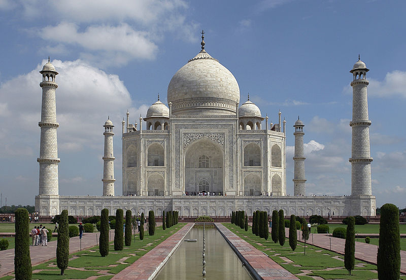
owned by wiki
The Taj Mahal is a mausoleum complex in Agra, India. Occupying 17 hectares of area, its construction was completed in 1653. It was commisioned by the Mughal emperor Shah Jahan (1628 - 1658) as the tomb of his wife. The mausoleum is made of white marble, featuring semiprecious stones in geometric and floral patterns.
Source wiki
Facts about Space
1. SPACE IS COMPLETELY SILENT
There is no atmosphere in space, which means that sound has no medium or way to travel to be heard.
2. THE HOTTEST PLANET IN OUR SOLAR SYSTEM IS 450° C.
Venus is the hottest planet in the solar system and has an average surface temperature of around 450° C. Did you know that Venus isn't the closest planet to the sun? That is Mercury. You would think that Mercury would then be the hottest, but Mercury has no atmosphere (which regulates temperature), resulting in big fluctuations.
3. A FULL NASA SPACE SUIT COSTS $12,000,000.
While the entire suit costs a cool $12m, 70% of that cost is for the backpack and control module. However, the space suits that NASA uses were built in 1974. If these were priced by today's pricing, they would cost an estimated 150 million dollars!
4. THE SUN’S MASS TAKES UP 99.86% OF THE SOLAR SYSTEM.
The Sun accounts for 99.86% of the mass in our solar system with a mass of around 330,000 times that of Earth. Did you know that the Sun is made up of mostly hydrogen (three quarters worth) with the rest of its mass attributed to helium. If the Sun had a voice would it be high and squeaky from all that helium?
5. ONE MILLION EARTHS CAN FIT INSIDE THE SUN
The Sun is large enough that approximately 1.3 million Earths could fit inside (if squashed in) or if the Earths retained their spherical shape then 960,000 would fit. But can you visualise that number of Earths?
6. THERE ARE MORE TREES ON EARTH THAN STARS IN THE MILKY WAY
There are about three trillion trees on Planet Earth, and between 100-400 billion stars, approximately, in the galaxy.
7. THE SUNSET ON MARS APPEARS BLUE
Just as colors are made more dramatic in sunsets on Earth, sunsets on Mars, according to NASA, would appear bluish to human observers watching from the red planet. Fine dust makes the blue near the Sun's part of the sky much more visibilke, while normal daylight makes the Red Planet's familiar rusty dust color the most perceptible to the human eye.
8. THERE ARE MORE STARS IN THE UNIVERSE THAN GRAINS OF SANDS ON EARTH
The universe extends far beyond our own galaxy, The Milky Way, which is why scientists can only estimate how many stars are in space. However, scientists estimate the universe contains approximately 1,000,000,000,000,000,000,000,000 stars, or a septillion. While no one can actually count every single grain of sand on the earth, the estimated total from researchers at the University of Hawaii, is somewhere around seven quintillion, five hundred quadrillion grains. That is an awfully big sand castle!
9. ONE DAY ON VENUS IS LONGER THAN ONE YEAR.
Venus has a slow axis rotation which takes 243 Earth days to complete its day. The orbit of Venus around the Sun is 225 Earth days, making a year on Venus 18 days less than a day on Venus.
10. THERE IS A PLANET MADE OF DIAMONDS
There’s a planet made of diamonds twice the size of earth The "super earth," aka 55 Cancri e, is most likely covered in graphite and diamond. Paying a visit to that planet would probably pay for the $12 million dollar space suit needed to get there!
Fine Arts
Architecture
Palace of Versailles France: An example of classic architecture, owned by britannica
Architecture,”the art and technique of designing and building”, is a form of art that help us express ourselves across the earths landscape. Although some people do not accept it as one because they think it serves a functional purpose.
The 10 most iconic buildings in the world
-La Sagrada Familia, Barcelona
-Forbidden City, Beijing
-The Guggenheim, New York City
-Hagia Sophia, Instanbul
-Roman Coliseum, Rome
-Notre Dame Cathedral, Paris
-The Heydar Aliyev Center, Baku
-Athenian Acropolis, Athens
-Sydney Opera House, Sydney
-Angkor Wat, Siem Reap
Source britannica , Octavian-Ungureanu, Indesignlive
Painting
Leonardo Da Vinci, Mona Lisa: An example of painting, owned by TimeOut
Painting is one of the most known forms of art. It is expressed with the use of brushes, hands, markers, pencils and many other objects and of course paint. Usualy we find it on canvas, walls, papers etc. The thymes are usualy life, landscape, seascape, portraiture, or abstract.
Important Paintings
-Leonardo Da Vinci, Mona Lisa
-Johannes Vermeer, Girl with a Pearl Earring
-Vincent van Gogh, The Starry Night
-Gustav Klimt, The Kiss
-Sandro Botticelli, The Birth of Venus
-James Abbott McNeill Whistler, Arrangement in Grey and Black No. 1
-Jan van Eyck, The Arnolfini Portrait
-Hieronymus Bosch, The Garden of Earthly Delights
-Georges Seurat, A Sunday Afternoon on the Island of La Grande Jatte
-Pablo Picasso, Les Demoiselles d’Avignon
Source Eden Gallery, timeout
Sculpture
Michelangelo: David: An example of sculpture, owned by britannica
Sculptur is transforming materials like plastic and marble into three-dimensional art objects. Other materials that are used in this form of art are stone, metal, ceramics and wood. It is one of the oldest form of arts.
Famous Sculptures
-Venus of Willendorf
-Bust of Nefertiti
-The Terracotta Army
-Laocoön and His Sons
-Michelangelo, David
-Gian Lorenzo Bernini, Ecstasy of Saint Teresa
-Antonio Canova, Perseus with the Head of Medusa
Source britannica, timeout
Literature
owned by PublicBooks
Literature is the art of organizing words to tell a story, a myth or a fairy tale. It is closely related to other forms of art like music.
Must Read Book List
-1984 by George Orwell
-The Lord of the Rings by J.R.R. Tolkien
-The Kite Runner by Khaled Hosseini
-Harry Potter and the Philosopher’s Stone by J.K. Rowling
-Slaughterhouse-Five by Kurt Vonnegut
-Jane Eyre by Charlotte Bronte
-Frankenstein by Mary Shelley
-Principles: Life and Work by Ray Dalio
Music

owned by interlude
Music is a form of art that triggers memories and emotions like no other art. For most music is a source of comfort and inspiration that can easily alter one's mood.
Songs to hear before you Die - Two Weeks by Grizzly Bear Available on YouTube - Marinade by DOPE LEMON Available on YouTube - Fade Into You by Mazzy Star Available on YouTube - Feel Safe by All We Are Available on YouTube - At the Bottom of Everything by Bright Eyes Available on YouTube - New Slang by The Shins Available on YouTube - Walk In the Park by Beach House Available on Youtube - Hey by The Pixies Available on Youtube
Source thirdcoastreview,purculture
Cinema
owned by bongradio
Cinema is a form of art that converts three dimensional world into two dimensional through our screens. Cinema can make us sense almost all our feelings including fear, love, etc. Cinema was the last form of art that was added in the list of fine arts.
Life Changing Movies
-Into The Wild
-The Truman Show
-Crash
-The Shawshank Redemption
-Waking Life
-Wild
-Pay It Forward
-Dead Poets Society
Source artradarjournal,scoopwhoop
Theater
owned by freepik
Theater is a form of art that was originated in ancient Greece and is a performing art. With theater stories and fairy tales can be told trhough acting. It is a form of art that can combine a lot of the above mentioned forms of art.
Best Plays of All Time
-Hamlet by William Shakespeare
-Long Day's Journey Into Night by Eugene O'Neill
-Who's Afraid of Virginia Woolf? by Edward Albee
-Death of a Salesman by Arthur Miller
-Oedipus Rex by Sophocles
Source Forestburgh Playhouse, timeout
Religions
owned by discipleshipmatters
Christianity is an Abrahamic monotheistic religion based on Jesus of Nazareth's life and teachings. With around 2.5 billion adherents, it is the world's largest religion. Christians believe that Jesus is the Son of God, whose coming as the messiah was promised in the Hebrew Bible (called the Old Testament in Christianity) and recounted in the New Testament. They make up the majority of the population in 157 nations and territories.Christianity's Western and Eastern branches, as well as its doctrines on justification and the nature of salvation, ecclesiology, ordination, and Christology, remain culturally distinct. The gospel, which means "good news," is referred to in the creeds of various Christian denominations as the Son of God—the Logos incarnated—who ministered, suffered, and died on a cross, but rose from the dead for the salvation of mankind; and referred to in the creeds of various Christian denominations as the Son of God—the Logos incarnated—who ministered, suffered, and died on a cross, but rose from the dead for the salvation of The four canonical gospels of Matthew, Mark, Luke, and John describe Jesus' life and teachings, with the Old Testament serving as the gospel's foundation.
source wiki

owned by trainline
The Roman Catholic Church is based on the teachings of Jesus Christ and the Apostles. Through the years, it developed a highly sophisticated theology and an elaborate organizational structure headed by the papacy, the oldest continuing absolute monarchy in the world.The number of Roman Catholics is nearly 1.1 billion and it surpasses all other religions.
source britannica

owned by medievalists
Eastern Orthodoxy is one of the largest doctrinal and jurisdictional groups of Christianity. It is characterized by its continuity with the apostolic church, its liturgy, and its territorial churches. Its adherents live mainly in the Balkans, the Middle East, and former Soviet countries. The word orthodox (“right believing”) derives from the greek language to designate communities or individuals who believed in the true faith, as opposed to those who were declared heretical.
source britannica

owned by nationalgeographic
Protestantism is the religion of Western Christianity that rejects the authority of the pope of Rome. Its history stems from the Reformation of the 16th century in Christian Europe. Martin Luther, a German teacher and a monk, brought about the Protestant Reformation when he challenged the Catholic Church's teachings starting in 1517. Luther's statements challenged the Catholic Church's role as mediator between people and God, specifically when it came to the indulgence system. Protestantism has three fundamental beliefs. Firstly, the Bible is the ultimate authority in matters of religious truth. Secondly, human beings are saved only by God's "grace" ,for example unearned gift, and lastly all Christians are priests. In other words, all Christians are able to intercede with God on behalf of others and themselves, able to bear witness, able to confess their sins and be forgiven.
source britannica

owned by wiki
{kind=link}
Buddhism is a Buddhist religion is an Indian religion or philosophical tradition based on Gautama Buddha's original teachings. It began as a Sramana custom in ancient India and expanded throughout Asia between the 6th and 4th centuries BCE. It is the fourth-largest religion in the world.Buddhists account for around 520 million people, or over 7% of the world's population.Buddhism comprises a wide range of traditions, beliefs, and spiritual practices, all of which are essentially founded on the Buddha's teachings (born Siddhrtha Gautama in the 5th or 4th century BCE) and the ideas that have resulted from them.The purpose of Buddhism, as stated in the Buddha's Four Noble Truths, is to eliminate suffering (dukha) produced by desire and ignorance of reality's true nature, which includes impermanence (anicca) and the non-existence of the self (anatt).Most Buddhist traditions emphasize transcending the individual ego through Nirvana or the path of Buddhahood, which ends the cycle of death and rebirth.Buddhist schools differ in their understanding of the path to enlightenment, the relative priority and canonicity accorded to various Buddhist texts, and their distinctive teachings and practices. Meditation, moral precept adherence, monasticism, taking refuge in the Buddha, the Dharma, and the Sangha, and the growth of the Paramitas are all widely observed practices (perfections, or virtues).
source wiki
Atheism is defined as a lack of belief in the presence of gods in its broadest sense. Atheism, in a broader sense, is the denial of the existence of any gods. In a more limited sense, atheism refers to the belief that there are no gods. Atheism is opposed to theism, which is the belief in the existence of at least one deity in its broadest sense.The word atheism has its etymological basis from the ancient Greek o (atheos), which means "without god(s)" and was coined before the 5th century BCE. It was a derogatory epithet in antiquity for persons who were supposed to reject the gods revered by the broader society, those who were forsaken by the gods, and those who had no commitment to believe in the gods. The phrase referred to a social classification devised by orthodox religionists for persons who did not share their religious convictions. The term "atheism" was coined in the 16th century. With the rise of freethought, skepticism, and subsequent criticism of religion, the term's applicability became more limited. During the Age of Enlightenment in the 18th century, the first people to use the term "atheist" to describe themselves lived. Known for its "exceptional atheism," the French Revolution was the first great political movement in history to call for the supremacy of human reason.
source wiki
The roots of Taoism go back at least to the 4th century BCE. Early Taoism drew its cosmological notions from the School of Yinyang (Naturalists). It is based on the Chinese culture, the I Ching, which expounds a philosophical system about how to keep human behavior in accordance with the alternating cycles of nature. In Taoism, the Tao is the source of everything and the ultimate principle underlying reality. Taoism teaches about the various disciplines for achieving perfection through self-cultivation. The Legalist Shen Buhai may also have been a major influence, expounding a realpolitik of wu wei, or qualified inaction.
source wiki

Islam began in Arabia and was revealed to humanity by the Prophet Muhammad. Those who follow Islam are called Muslims. Muslims believe that there is only one God. The Arabic word for God is Allah. Retaining its emphasis on an uncompromising monotheism and a strict adherence to certain essential religious practices, the religion taught by Muhammad to a small group of followers spread rapidly through the Middle East to Africa, Europe, the Indian subcontinent, the Malay Peninsula, and China. By the early 21st century there were more than 1.5 billion Muslims worldwide.
#### Braches of Islam - Sunni Islam - Shia Islam - Ibadi - Sufism
source wiki

Hinduism is both a religion and a way of life in India. With roughly 1.2 billion followers, or 15–16 percent of the worldwide population, Hinduism is the world's third-largest religion. While Hinduism has been dubbed the world's oldest religion, many adherents refer to it as Santana Dharma (Sanskrit:, lit. "the Eternal Dharma"), which refers to the concept that its origins extend beyond human history, as revealed in Hindu writings. Vaidika dharma, the'dharma associated to the Vedas, is another, though less suitable, self-designation.
source wiki
Judaism is an Abrahamic, monotheistic, ethnic religion that encompasses the Jewish people's collective religious, cultural, and legal tradition and civilization. It began as an organized religion in the Bronze Age in the Middle East. According to some researchers, modern Judaism emerged from Yahwism, the ancient Israel and Judah religion, approximately 500 BCE, and is thus one of the oldest monotheistic religions. Religious Jews regard Judaism as the manifestation of God's covenant with the Israelites, their forefathers. It encompasses a large number of books, activities, theological perspectives, and organizational structures.
source wiki

owned by britannica
Confucianism is a philosophy and belief system from ancient China. It affected deeply the Chinese culture. Confucius was a philosopher and teacher. His thoughts on ethics, good behavior, and moral character were written down by his disciples in several books. The core of Confucianism is humanistic with particular emphasis on the importance of the family and social harmony. Confucianism believes in ancestor worship and human-centered virtues for living a peaceful life. The golden rule of Confucianism is “Do not do unto others what you would not want others to do unto you.”
source nationalgeographic

owned by pixels
In ancient Greek religion and mythology, the twelve Olympians are the major deities of the Greek pantheon. They were named so because they reside in Mount Olympus. They gained their supremacy in the war of gods, in which Zeus led his siblings to victory over the Titans. They were a family of gods, the most important of whom where Zeus, Poseidon, Hera, Demeter and Hestia, along with the most prominent children of Zeus: Athena, Apollo, Artemis, Ares, Aphrodite,Hephaestus, Hermes, and Dionysus.
source wiki
Druze
The Druze are a Middle Eastern religious sect characterized by an eclectic system of doctrines and by a cohesion and loyalty among its members that have enabled them to maintain for centuries their close-knit identity and distinctive faith. Despite the small size of their community, the Druze have played in important part in the history of the Middle East. Nowadays, Druze are mostly reside in Lebanon. The Druze faith stemed from Egypt when some Isma theologians began to see al-Ḥākim as a divine figure. Al-Ḥākim disappeared mysteriously in 1021, and the movement was persecuted under his successor, al-Zāḥir.
source britannica
Gnosticism
Gnosticism is a group of theological concepts and systems that arose among Jewish and early Christian factions in the late first century AD. Personal spiritual understanding (gnosis) was prioritized over orthodox doctrines, traditions, and religious organizations' authority by these distinct sects. Gnostic cosmogony often portrays a contrast between an ultimate, hidden God and a malignant lesser divinity (sometimes identified with the Old Testament's Yahweh) who is responsible for the creation of the material universe, viewing material existence as imperfect or bad. Direct knowledge of the supreme divine in the form of mystical or esoteric insight was regarded the primary element of salvation by Gnostics. Many Gnostic writings deal with illusion and enlightenment rather than sin and repentance.
source wikipedia
Jainism
Jainism is a Hindu religion that dates back to ancient India. Ahis (nonviolence), anekntavda (non-absolutism), and aparigraha are the three major pillars of Jainism (asceticism). Nonviolence, satya (truth), asteya (not stealing), brahmacharya (sexual continence), and aparigraha are the five main vows taken by Jain monks (non-possessiveness). These beliefs have influenced Jain culture in a variety of ways, including the adoption of a primarily vegetarian lifestyle. The faith's motto is parasparopagraho jvnm (the function of souls is to support one another), and the amkra mantra is its most common and basic prayer.
source wikipedia
Volcanos
Sangay
Sangay (also known as Macas, Sanagay, or Sangai)[7] is an active stratovolcano in central Ecuador. It exhibits mostly strombolian activity. Geologically, Sangay marks the southern boundary of the Northern Volcanic Zone, and its position straddling two major pieces of crust accounts for its high level of activity. Sangay's approximately 500,000-year-old history is one of instability; two previous versions of the mountain were destroyed in massive flank collapses, evidence of which still litters its surroundings today.
Source wikipedia
Santa Maria
Santa María Volcano is a large active volcano in the western highlands of Guatemala, in the Quetzaltenango Department near the city of Quetzaltenango. The VEI-6 eruption of Santa María Volcano in 1902 was one of the three largest eruptions of the 20th century, after the 1912 Novarupta and 1991 Mount Pinatubo eruptions. It is also one of the five biggest eruptions of the past 200 (and most likely 300) years.
Source wikipedia
Stromboli

Stromboli is an island in the Tyrrhenian Sea, off the north coast of Sicily, containing Mount Stromboli, one of the three active volcanoes in Italy. It is one of the eight Aeolian Islands, a volcanic arc north of Sicily. Strabo writes that people believed that this is where Aeolus lived.[3]
The island's area is 12.6 square kilometres (4.9 sq mi),[4] on the upper third of the volcano that is above sea level and making an island.[5] Its population was about 500 as of 2016.[6] The volcano has erupted many times and is constantly active with minor eruptions, often visible from many points on the island and from the surrounding sea, giving rise to the island's nickname "Lighthouse of the Mediterranean"
Source wikipedia
Mount Etna
The ancient Greeks believed Mount Etna, located on the island of Sicily, to be the home of Vulcan, the god of fire to them, Mount Etna erupting merely meant Vulcan was forging weapons for Mars, the god of war.
Dating back to 1500 B.C., the volcano has erupted around 200 times, and the 21st century saw Mount Etna erupting yet again in 2001, with lava flows reaching within mere miles of the nearby town of Nicolosi.
The mountain is currently around 10,958 feet (3,340 meters) in height. It is the largest active volcano in Europe, though this varies with summit eruptions. It is the highest mountain in Italy south of the Alps.
The most violent eruption in the history of Mount Etna occurred in March of 1669. The volcano spewed molten rock for days on end, the eruption finally stopped at the end of April of that year.
Source livescience
Mount Yasur
Mount Yasur is an active volcano on Tanna Island, part of the archipelago nation of Vanuatu in the South Pacific. The volcano, one of many along the Pacific Ring of Fire, is 1,184 feet (of 361 meters) above sea level.
It is a stratovolcano, caused by the eastward-moving Indo-Australian Plate being subducted under the westward-moving Pacific Plate. Yasur has been erupting nearly continuously for over a century, and its eruptions, which often occur several times an hour, are classified as Strombolian or Vulcanian (a relatively low-level type of eruption).
The glow of the volcano is rumored to be what attracted Captain James Cook on the first European journey to the island in 1774.
Today, the mountain is a sacred area for the John Frum cargo cult. Members of the cult revere John Frum, a deified messenger who foretold the bringing of wealth to the island by American forces, and believe he resides in Mount Yasur with his countrymen.
Sourcelivescience
States
Alabama
Alabama is a state in the Southeastern region of the United States, bordered by Tennessee to the north; Georgia to the east; Florida and the Gulf of Mexico to the south; and Mississippi to the west. Alabama is the 30th largest by area and the 24th-most populous of the U.S. states. With a total of 1,500 miles (2,400 km) of inland waterways, Alabama has among the most of any state
Source wikipedia
Alaska
Alaska is a state located in the Western United States on the northwest extremity of North America. A semi-exclave of the U.S., it borders the Canadian province of British Columbia and the territory of Yukon to the east and shares a maritime border with the Russian Federation's Chukotka Autonomous Okrug to the west, just across the Bering Strait. To the north are the Chukchi and Beaufort seas of the Arctic Ocean, while the Pacific Ocean lies to the south and southwest.
Source wikipedia
Arizona
Arizona is a state in the Western United States, grouped in the Southwestern and occasionally Mountain subregions. It is the 6th largest and the 14th most populous of the 50 states. Its capital and largest city is Phoenix. Arizona shares the Four Corners region with Utah to the north, Colorado to the northeast, and New Mexico to the east; its other neighboring states are Nevada to the northwest and California to the west and the Mexican states of Sonora and Baja California to the south and southwest.
Source wikipedia
Arkansas
Arkansas is a landlocked state in the South Central region of the United States, home to more than three million people as of 2018. Its name is from the Osage language, a Dhegiha Siouan language, and referred to their relatives, the Quapaw people. The state's diverse geography ranges from the mountainous regions of the Ozark and Ouachita Mountains, which make up the U.S. Interior Highlands, to the densely forested land in the south known as the Arkansas Timberlands, to the eastern lowlands along the Mississippi River and the Arkansas Delta.
Source wikipedia
California
California is a state in the Western United States. California borders Oregon to the north, Nevada and Arizona to the east, the Mexican state of Baja California to the south; and has a coastline along the Pacific Ocean to the west. With over 39.5 million residents across a total area of approximately 163,696 square miles (423,970 km2), it is the most populous and the third-largest U.S. state by area. It is also the most populated subnational entity in North America and the 34th most populous in the world. The Greater Los Angeles area and the San Francisco Bay Area are the nation's second and fifth most populous urban regions respectively, with the former having more than 18.7 million residents and the latter having over 9.6 million.Sacramento is the state's capital, while Los Angeles is the most populous city in the state and the second most populous city in the country (after New York City). Los Angeles County is the country's most populous, while San Bernardino County is the largest county by area in the country (Alaska has some larger subdivisions, but they are not called counties). San Francisco, which is both a city and a county, is the second most densely populated major city in the country (after New York City) and the fifth most densely populated county in the country, behind four of New York City's five boroughs.
Source wikipedia
Colorado
Colorado is a state in the Mountain West subregion of the Western United States. It encompasses most of the Southern Rocky Mountains, as well as the northeastern portion of the Colorado Plateau and the western edge of the Great Plains. Colorado is the eighth most extensive and 21st most populous U.S. state. The 2020 United States Census enumerated the population of Colorado at 5,773,714, an increase of 14.80% since the 2010 United States Census
Source wikipedia
Connecticut
Connecticut is the southernmost state in the New England region of the United States. As of the 2010 census, it has the highest per-capita income, second-highest level of human development behind Massachusetts, and highest median household income in the United States. It is bordered by Rhode Island to the east, Massachusetts to the north, New York to the west, and the Long Island Sound to the south. Its capital is Hartford and its most populous city is Bridgeport. Historically the state is part of New England as well as the tri-state area with New York and New Jersey, which together make up metropolitan New York City. The state is named for the Connecticut River which approximately bisects the state. The word "Connecticut" is derived from various anglicized spellings of "Quononoquett" (Conanicut), a Mohegan-Pequot word for "long tidal river".
Source wikipedia
Delaware
Delaware is a state in the Mid-Atlantic region of the United States, bordering Maryland to its south and west; Pennsylvania to its north; and New Jersey and the Atlantic Ocean to its east. The state takes its name from the nearby Delaware River, in turn named after Thomas West, 3rd Baron De La Warr, an English nobleman and Virginia's first colonial governor.
Source wikipedia
Florida
Florida is a state located in the Southeastern region of the United States. Florida is bordered to the west by the Gulf of Mexico, to the northwest by Alabama, to the north by Georgia, to the east by the Bahamas and Atlantic Ocean, and to the south by the Straits of Florida and Cuba; it is the only state that borders both the Gulf of Mexico and the Atlantic Ocean. Spanning 65,758 square miles (170,310 km2), Florida ranks 22nd in area among the 50 states, and with a population of over 21 million, is the third-most populous. The state capital is Tallahassee and the most populous city is Jacksonville. The Miami metropolitan area, with a population of almost 6.2 million, is the most populous urban area in Florida and the seventh-most populous in the United States; other urban conurbations with over one million people are Tampa Bay, Orlando, and Jacksonville.
Source wikipedia
Georgia
Georgia is a state in the Southeastern region of the United States, bordered to the north by Tennessee and North Carolina; to the northeast by South Carolina; to the southeast by the Atlantic Ocean; to the south by Florida; and to the west by Alabama. Georgia is the 24th-largest in area and 8th-most populous of the 50 United States. Its 2020 population was 10,711,908, according to the U.S. Census Bureau.[5] Atlanta, a "beta(+)" global city, is both the state's capital and its largest city. The Atlanta metropolitan area, with a population of more than 6 million people in 2020, is the 9th most populous metropolitan area in the United States and contains about 57% of Georgia's entire population.
Source wikipedia
Hawaii
Hawaii is a state in the Western United States, located in the Pacific Ocean about 2,000 miles from the U.S. mainland. It is the only state outside North America, the only state that is an archipelago, and the only state in the tropics. Hawaii is also one of four U.S. states that were once independent nations along with Vermont, Texas and California.
Source wikipedia
Idaho
Idaho is a state in the Pacific Northwest region of the United States. It borders the state of Montana to the east and northeast, Wyoming to the east, Nevada and Utah to the south, and Washington and Oregon to the west. To the north, it shares a small portion of the Canadian border with the province of British Columbia. With a population of approximately 1.8 million and an area of 83,570 square miles (216,400 km2), Idaho is the 14th largest, the 13th least populous and the 7th least densely populated of the 50 U.S. states. The state's capital and largest city is Boise.
Source wikipedia
Illinois
Illinois is a state in the Midwestern region of the United States. Of the fifty U.S. states, it has the fifth largest gross domestic product (GDP), the sixth largest population, and the 25th largest land area. Chicago is the state's largest city and the fifth largest city in North America with the capital in Springfield, located in the center of the state; other major metropolitan areas include Metro East (of Greater St. Louis), Peoria and Rockford.
Source wikipedia
Indiana
Indiana is a U.S. state in the Midwestern United States. It is the 38th-largest by area and the 17th-most populous of the 50 United States. Its capital and largest city is Indianapolis. Indiana was admitted to the United States as the 19th state on December 11, 1816. It is bordered by Lake Michigan to the northwest, Michigan to the north, Ohio to the east, the Ohio River and Kentucky to the south and southeast, and the Wabash River and Illinois to the west.
Source wikipedia
Iowa
Iowa is a state in the Midwestern region of the United States, bordered by the Mississippi River to the east and the Missouri River and Big Sioux River to the west. It is bordered by six states: Wisconsin to the northeast, Illinois to the east and southeast, Missouri to the south, Nebraska to the west, South Dakota to the northwest, and Minnesota to the north.
Source wikipedia
Kansas
Kansas is a state in the Midwestern United States. Its capital is Topeka and its largest city is Wichita. Kansas is a landlocked state bordered by Nebraska to the north; Missouri to the east; Oklahoma to the south; and Colorado to the west. Kansas is named after the Kansas River, which in turn was named after the Kansa Native Americans who lived along its banks. The tribe's name (natively kką:ze) is often said to mean "people of the (south) wind" although this was probably not the term's original meaning. For thousands of years, what is now Kansas was home to numerous and diverse Native American tribes. Tribes in the eastern part of the state generally lived in villages along the river valleys. Tribes in the western part of the state were semi-nomadic and hunted large herds of bison.
Source wikipedia
Kentucky
Kentucky officially the Commonwealth of Kentucky, is a state in the Southeastern region of the United States, bordered by Illinois, Indiana, and Ohio to the north; West Virginia and Virginia to the east; Tennessee to the south; and Missouri to the west. The Commonwealth's northern border is defined by the Ohio River. Its capital is Frankfort, and its two largest cities are Louisville and Lexington. The state's population in 2020 was approximately 4.5 million.
Source wikipedia
Louisiana
Louisiana is a state in the Deep South and South Central regions of the United States. It is the 20th-smallest by area and the 25th most populous of the 50 U.S. states. Louisiana is bordered by the state of Texas to the west, Arkansas to the north, Mississippi to the east, and the Gulf of Mexico to the south. A large part of its eastern boundary is demarcated by the Mississippi River. Louisiana is the only U.S. state with political subdivisions termed parishes, which are equivalent to counties, making it one of only two U.S. states not subdivided into counties (the other being Alaska and its boroughs). The state's capital is Baton Rouge, and its largest city is New Orleans.
Source wikipedia
Maine
Maine is a state in the New England region of the United States, bordered by New Hampshire to the west; the Gulf of Maine to the southeast; and the Canadian provinces of New Brunswick and Quebec to the northeast and northwest, respectively. Maine is the 12th-smallest by area, the 9th-least populous, the 13th-least densely populated, and the most rural of the 50 U.S. states. It is also the northeasternmost among the contiguous United States, the northernmost state east of the Great Lakes, the only state whose name consists of a single syllable, and the only state to border exactly one other US state. The most populous city in Maine is Portland, while its capital is Augusta.
Source wikipedia
Maryland
Maryland is a state in the Mid-Atlantic region of the United States. It shares borders with Virginia, West Virginia, and the District of Columbia to its south and west; Pennsylvania to its north; and Delaware and the Atlantic Ocean to its east. Baltimore is the largest city in the state, and the capital is Annapolis. Among its occasional nicknames are Old Line State, the Free State, and the Chesapeake Bay State. It is named after the English Queen Henrietta Maria, then known in England as Mary.
Source wikipedia
Massachusetts
Massachusetts is the most populous state in the New England region of the United States. It borders on the Atlantic Ocean and Gulf of Maine to the east, Connecticut to the southwest and Rhode Island to the southeast, New Hampshire to the northeast, Vermont to the northwest, and New York to the west. The capital of Massachusetts is Boston, which is also the most populous city in New England. It is home to the Greater Boston metropolitan area, a region influential upon American history, academia, and industry. Originally dependent on agriculture, fishing and trade, Massachusetts was transformed into a manufacturing center during the Industrial Revolution. During the 20th century, Massachusetts's economy shifted from manufacturing to services. Modern Massachusetts is a global leader in biotechnology, engineering, higher education, finance, and maritime trade.
Source wikipedia
Michigan
Michigan is a state in the Great Lakes region of the upper Midwestern United States. Its name derives from a gallicized variant of the original Ojibwe word ᒥᓯᑲᒥ (mishigami), meaning 'large water' or 'large lake'. With a population of nearly 10.1 million and a total area of nearly 97,000 sq mi (250,000 km2), Michigan is the 10th-largest state by population, the 11th-largest by area, and the largest by area east of the Mississippi River. Its capital is Lansing, and its largest city is Detroit. Metro Detroit is among the nation's most populous and largest metropolitan economies.
Source wikipedia
Minnesota
Minnesota is a state in the upper Midwestern United States. It is the 12th largest U.S. state in area and the 22nd most populous, with over 5.75 million residents. Minnesota's geography consists of western prairies, now given over to intensive agriculture; deciduous forests in the southeast, now partially cleared, farmed, and settled; and the less populated North Woods, used for mining, forestry, and recreation. Roughly a third of the state is covered in forests, and it is known as the "Land of 10,000 Lakes" for having over 14,000 bodies of fresh water of at least ten acres. A little over half of Minnesotans live in the Minneapolis–Saint Paul metropolitan area, known as the "Twin Cities", the state's main political, economic, and cultural hub. The Twin Cities is the 16th largest metropolitan area in the U.S. Other minor metropolitan and micropolitan statistical areas include Duluth, Mankato, Moorhead, Rochester, and St. Cloud.
Source wikipedia
Mississippi
Mississippi is a state in the Southeastern region of the United States, bordered to the north by Tennessee; to the east by Alabama; to the south by the Gulf of Mexico; to the southwest by Louisiana; and to the northwest by Arkansas. Mississippi's western boundary is largely defined by the Mississippi River. Mississippi is the 32nd largest and 35th-most populous of the 50 U.S. states. Jackson is both the state's capital and largest city. Greater Jackson is the state's most populous metropolitan area, with a population of 591,978 in 2020.
Source wikipedia
Missouri
Missouri is a state in the Midwestern region of the United States. Ranking 21st in land area, it is bordered by eight states (tied for the most with Tennessee): Iowa to the north, Illinois, Kentucky and Tennessee to the east, Arkansas to the south and Oklahoma, Kansas and Nebraska to the west. In the south are the Ozarks, a forested highland, providing timber, minerals, and recreation. The Missouri River, after which the state is named, flows through the center into the Mississippi River, which makes up the eastern border. With more than six million residents, it is the 19th-most populous state of the country. The largest urban areas are St. Louis, Kansas City, Springfield and Columbia; the capital is Jefferson City.
Source wikipedia
Montana
Montana is a state in the Mountain West subregion of the Western United States. It is bordered by Idaho to the west; North Dakota and South Dakota to the east; Wyoming to the south; and by the Canadian provinces of Alberta, British Columbia, and Saskatchewan to the north. It is the fourth-largest state by area, the seventh-least populous state, and the third-least densely populated state. Its state capital is Helena. The western half of Montana contains numerous mountain ranges, while the eastern half is characterized by western prairie terrain and badlands, with smaller mountain ranges found throughout the state. In all, 77 named ranges are part of the Rocky Mountains.
Source wikipedia
Nebraska

Nebraska is a state in the Midwestern region of the United States. It is bordered by South Dakota to the north; Iowa to the east and Missouri to the southeast, both across the Missouri River; Kansas to the south; Colorado to the southwest; and Wyoming to the west. It is the only triply landlocked U.S. state.
Source wikipedia
Nevada
Nevada is a state in the Western region of the United States. It is bordered by Oregon to the northwest, Idaho to the northeast, California to the west, Arizona to the southeast, and Utah to the east. Nevada is the 7th-most extensive, the 32nd-most populous, and the 9th-least densely populated of the U.S. states. Nearly three-quarters of Nevada's people live in Clark County, which contains the Las Vegas–Paradise metropolitan area, including three of the state's four largest incorporated cities. Nevada's capital is Carson City while the largest city is Las Vegas.
Source wikipedia
New Hampshire
New Hampshire is a state in the New England region of the United States. It is bordered by Massachusetts to the south, Vermont to the west, Maine and the Gulf of Maine to the east, and the Canadian province of Quebec to the north. Of the 50 U.S. states, New Hampshire is the fifth smallest by area and the tenth least populous, with slightly more than 1.3 million residents. Concord is the state capital, while Manchester is the largest city. New Hampshire's motto, "Live Free or Die", reflects its role in the American Revolutionary War; its nickname, "The Granite State", refers to its extensive granite formations and quarries. It is best known nationwide for holding the first primary (after the Iowa caucus) in the U.S. presidential election cycle.
Source wikipedia
New Jersey
New Jersey is a state in the Mid-Atlantic and Northeastern regions of the United States. It is bordered on the north and east by the state of New York; on the east, southeast, and south by the Atlantic Ocean; on the west by the Delaware River and Pennsylvania; and on the southwest by Delaware Bay and the state of Delaware. At 7,354 square miles (19,050 km2), New Jersey is the fifth-smallest state based on land area, but with close to 9.3 million residents, is the 11th-most populous and the most densely populated. New Jersey's state capital is Trenton, while the state's most populous city is Newark. With the sole exception of Warren County, all counties in the state lie within the combined statistical areas of New York City or Philadelphia; consequently, the state's largest metropolitan area falls within Greater New York.
Source wikipedia
New Mexico
New Mexico is a state in the Southwestern United States. It is one of the Mountain States of the southern Rocky Mountains, sharing the Four Corners region of the western U.S. with Utah, Colorado, and Arizona, and bordering Texas to the east and southeast, Oklahoma to the northeast, and the Mexican states of Chihuahua and Sonora to the south. The state capital is Santa Fe, which is the oldest capital in the U.S., founded in 1610 as the government seat of Nuevo México in New Spain; the largest city is Albuquerque.
Source wikipedia
New York
New York is a state in the Northeastern United States. It is sometimes called New York State to distinguish it from its largest city, New York City. With a total area of 54,556 square miles (141,300 km2), New York is the 27th largest state geographically. With 20.2 million residents, it is the fourth most populous state in the United States as of 2021, with approximately 44% living in New York City and another 14% on the remainder of Long Island. The state is bordered by New Jersey and Pennsylvania to the south, and Connecticut, Massachusetts, and Vermont to the east; it has a maritime border with Rhode Island, east of Long Island, as well as an international border with the Canadian provinces of Quebec to the north and Ontario to the northwest.
Source wikipedia
North Carolina
North Carolina is a state in the Southeastern region of the United States. The state is the 28th largest and 9th-most populous of the 50 United States. It is bordered by Virginia to the north, the Atlantic Ocean to the east, Georgia and South Carolina to the south, and Tennessee to the west. Raleigh is the state's capital and Charlotte is its largest city. The Charlotte metropolitan area, with an estimated population of 2,569,213 in 2018, is the most-populous metropolitan area in North Carolina, the 23rd-most populous in the United States, and the largest banking center in the nation after New York City. The Raleigh-Durham-Cary combined statistical area is the second-largest metropolitan area in the state, with an estimated population of 2,079,687 in 2019, and is home to the largest research park in the United States, Research Triangle Park.
Source wikipedia
North Dakota
North Dakota is a U.S. state in the upper Midwestern region of the country. It is named after the indigenous Lakota and Dakota Sioux, who historically dominated the territory and remain a large community. North Dakota is bordered by the Canadian provinces of Saskatchewan and Manitoba to the north and by the U.S. states of Minnesota to the east, South Dakota to the south, and Montana to the west. It is believed to host the geographic center of North America, situated in the town of Rugby, and is home to the tallest man-made structure in the Western Hemisphere, the KVLY-TV mast.
Source wikipedia
Ohio
Ohio is a state in the Midwestern region of the United States. Of the fifty U.S. states, it is the 34th-largest by area, and with a population of nearly 11.8 million, is the seventh-most populous and tenth-most densely populated. The state's capital and largest city is Columbus, with the Columbus metro area, Greater Cincinnati, and Greater Cleveland being the largest metropolitan areas. Ohio is bordered by Lake Erie to the north, Pennsylvania to the east, West Virginia to the southeast, Kentucky to the southwest, Indiana to the west, and Michigan to the northwest. Ohio is historically known as the "Buckeye State" after its Ohio buckeye trees, and Ohioans are also known as "Buckeyes". Its state flag is the only non-rectangular flag of all the U.S. states.
Source wikipedia
Oklahoma
Oklahoma is a state in the South Central region of the United States, bordered by Texas on the south and west, Kansas on the north, Missouri on the northeast, Arkansas on the east, New Mexico on the west, and Colorado on the northwest. Partially in the western extreme of the Upland South, it is the 20th-most extensive and the 28th-most populous of the 50 United States. Its residents are known as Oklahomans (or colloquially "Okies"), and its capital and largest city is Oklahoma City.
Source wikipedia
Oregon
Oregon is a state in the Pacific Northwest region of the Western United States. The Columbia River delineates much of Oregon's northern boundary with Washington, while the Snake River delineates much of its eastern boundary with Idaho. The 42° north parallel delineates the southern boundary with California and Nevada.
Source wikipedia
Pennsylvania
Pennsylvania, officially the Commonwealth of Pennsylvania, is a U.S. state spanning the Mid-Atlantic, Northeastern, and Appalachian regions of the United States. It borders Delaware to the southeast, Maryland to the south, West Virginia to the southwest, Ohio to the west, Lake Erie and the Canadian province of Ontario to the northwest, New York to the north, and New Jersey to the east.
Source wikipedia
Rhode Island
Rhode Island officially the State of Rhode Island, is a state in the New England region of the Northeastern United States. It is the smallest U.S. state by area and the seventh-least populous, with slightly fewer than 1.1 million residents as of 2020, but it is the second-most densely populated after New Jersey. It takes its name from the eponymous island, though most of its land area is on the mainland. Rhode Island borders Connecticut to the west, Massachusetts to the north and east, and the Atlantic Ocean to the south via Rhode Island Sound and Block Island Sound; it also shares a small maritime border with New York. Providence is its capital and most populous city.
Source wikipedia
South Carolina
South Carolina is a state in the coastal Southeastern region of the United States. It is bordered to the north by North Carolina, to the southeast by the Atlantic Ocean, and to the southwest by Georgia across the Savannah River. South Carolina is the 40th most extensive and 23rd most populous U.S. state with a recorded population of 5,124,712 according to the 2020 census. In 2019, its GDP was $213.45 billion. South Carolina is composed of 46 counties. The capital is Columbia with a population of 133,273 in 2019; while its largest city is Charleston with a 2020 population of 150,277. The Greenville–Spartanburg-Anderson metropolitan area is the most populous in the state, with a 2018 population estimate of 906,626.
Source wikipedia
South Dakota
South Dakota is a U.S. state in the North Central region of the United States. It is also part of the Great Plains. South Dakota is named after the Lakota and Dakota Sioux Native American tribes, who comprise a large portion of the population with nine reservations currently in the state and have historically dominated the territory. South Dakota is the seventeenth largest by area, but the 5th least populous, and the 5th least densely populated of the 50 United States. As the southern part of the former Dakota Territory, South Dakota became a state on November 2, 1889, simultaneously with North Dakota. They are the 39th and 40th states admitted to the union; President Benjamin Harrison shuffled the statehood papers before signing them so that no one could tell which became a state first. Pierre is the state capital, and Sioux Falls, with a population of about 187,200, is South Dakota's largest city.
Source wikipedia
Tennessee

Tennessee officially the State of Tennessee, is a state in the Southeastern region of the United States. Tennessee is the 36th largest by area and the 16th most populous of the 50 states. It is bordered by Kentucky to the north, Virginia to the northeast, North Carolina to the east, Georgia, Alabama, and Mississippi to the south, Arkansas to the southwest, and Missouri to the northwest. Tennessee is geographically, culturally, and legally divided into three Grand Divisions of East, Middle, and West Tennessee. Nashville is the state's capital and largest city, and anchors its largest metropolitan area. Other major cities include Memphis, Knoxville, Chattanooga, and Clarksville. Tennessee's population as of the 2020 United States census is approximately 6.9 million.
Source wikipedia
Texas
Texas is a state in the South Central region of the United States. At 268,596 square miles (695,662 km2), and with more than 29.1 million residents in 2020, it is the second-largest U.S. state by both area (after Alaska) and population (after California). Texas shares borders with the states of Louisiana to the east, Arkansas to the northeast, Oklahoma to the north, New Mexico to the west, and the Mexican states of Chihuahua, Coahuila, Nuevo León, and Tamaulipas to the south and southwest; and has a coastline with the Gulf of Mexico to the southeast.
Source wikipedia
Utah
Utah is a state in the Mountain West subregion of the Western United States. Utah is a landlocked U.S. state bordered to its east by Colorado, to its northeast by Wyoming, to its north by Idaho, to its south by Arizona, and to its west by Nevada. Utah also touches a corner of New Mexico in the southeast. Of the fifty U.S. states, Utah is the 13th-largest by area; with a population over three million, it is the 30th-most-populous and 11th-least-densely populated. Urban development is mostly concentrated in two areas: the Wasatch Front in the north-central part of the state, which is home to roughly two-thirds of the population and includes the capital city, Salt Lake City; and Washington County in the southwest, with more than 180,000 residents. Most of the western half of Utah lies in the Great Basin.
Source wikipedia
Vermont
Vermont is a state in the New England region of the United States. It borders the states of Massachusetts to the south, New Hampshire to the east, and New York to the west, and the Canadian province of Quebec to the north. Vermont is the only state in New England that does not border the Atlantic Ocean. Vermont is the second-least-populated U.S. state after Wyoming and the sixth-smallest by area of the 50 U.S. states with a recorded population of 643,503 according to the 2020 U.S. census. The state capital is Montpelier, the least-populous state capital in the United States. The most-populous city, Burlington, is the least-populous city to be the most-populous city in a state.
Source wikipedia
Virginia
Virginia, officially the Commonwealth of Virginia, is a state in the Mid-Atlantic and Southeastern regions of the United States, between the Atlantic Coast and the Appalachian Mountains. The geography and climate of the Commonwealth are shaped by the Blue Ridge Mountains and the Chesapeake Bay, which provide habitat for much of its flora and fauna. The capital of the Commonwealth is Richmond; Virginia Beach is the most-populous city, and Fairfax County is the most-populous political subdivision. The Commonwealth's population in 2020 was over 8.65 million, with 36% of them living in the Baltimore–Washington metropolitan area.
Source wikipedia
Washington
Washington, officially the State of Washington, is a state in the Pacific Northwest region of the Western United States. Named for George Washington—the first U.S. president—the state was formed from the western part of the Washington Territory, which was ceded by the British Empire in 1846, in accordance with the Oregon Treaty in the settlement of the Oregon boundary dispute. The state, which is bordered on the west by the Pacific Ocean, Oregon to the south, Idaho to the east, and the Canadian province of British Columbia to the north—was admitted to the Union as the 42nd state in 1889. Olympia is the state capital; the state's largest city is Seattle. Washington is often referred to as Washington state to distinguish it from the nation's capital, Washington, D.C.
Source wikipedia
West Virginia
West Virginia is a state in the Appalachian, Mid-Atlantic and Southeastern regions of the United States.[Note 1] It is bordered by Pennsylvania to the north and east, Maryland to the east and northeast, Virginia to the southeast, Kentucky to the southwest, and Ohio to the northwest. West Virginia is the 10th-smallest state by area and ranks as the 12th-least populous state, with a population of 1,793,716 residents. The capital and largest city is Charleston.
Source wikipedia
Wisconsin
Wisconsin is a state in the upper Midwestern United States. Wisconsin is the 25th-largest state by total area and the 20th-most populous. It is bordered by Minnesota to the west, Iowa to the southwest, Illinois to the south, Lake Michigan to the east, Michigan to the northeast, and Lake Superior to the north.
Source wikipedia
Wyoming
Wyoming is a state in the Mountain West subregion of the Western United States. The 10th largest state by area, it is also the least populous and least densely populated state in the contiguous United States.
Source wikipedia
Foods
Pizza

Pizza is a dish of Italian origin consisting of a usually round, flat base of leavened wheat-based dough topped with tomatoes, cheese, and often various other ingredients (such as anchovies, mushrooms, onions, olives, pineapple, meat, etc.), which is then baked at a high temperature, traditionally in a wood-fired oven.[1] A small pizza is sometimes called a pizzetta. A person who makes pizza is known as a pizzaiolo.
Source wikipedia
Spaghetti

Spaghetti is a long, thin, solid, cylindrical pasta. It is a staple food of traditional Italian cuisine. Like other pasta, spaghetti is made of milled wheat and water and sometimes enriched with vitamins and minerals. Italian spaghetti is typically made from durum wheat semolina. Usually the pasta is white because refined flour is used, but whole wheat flour may be added. Spaghettoni is a thicker form of spaghetti, while capellini is a very thin spaghetti.
Source [wikipedia](https://en.wikipedia.org/wiki/Spaghetti
Burger

A hamburger (or burger for short) is a food consisting of fillings —usually a patty of ground meat, typically beef—placed inside a sliced bun or bread roll. Hamburgers are often served with cheese, lettuce, tomato, onion, pickles, bacon, or chilis; condiments such as ketchup, mustard, mayonnaise, relish, or a "special sauce", often a variation of Thousand Island dressing; and are frequently placed on sesame seed buns. A hamburger topped with cheese is called a cheeseburger.
Source wikipedia
Burrito

A burrito is a dish in Mexican and Tex-Mex cuisine that took form in California cuisine, consisting of a flour tortilla wrapped into a sealed cylindrical shape around various ingredients. The tortilla is sometimes lightly grilled or steamed to soften it, make it more pliable, and allow it to adhere to itself. Burritos are often eaten by hand, as their tight wrapping keeps the ingredients together. Burritos can also be served "wet", i.e., covered in a savory and spicy sauce, when they would be eaten with a fork and knife.
Source wikipedia
Crepe
A crêpe or crepe is a very thin type of pancake. Crêpes originated in Brittany, a region in western France, during the 13th century, and are now consumed around the world. Crêpes are usually one of two varieties: sweet crêpes (crêpes sucrées) or savoury galettes (crêpes salées). They are often served with a wide variety of fillings such as jam or hazelnut cocoa spread. Crêpes can also be flambéed, such as in crêpes Suzette.
Source wikipedia
Souvlaki

Souvlaki (Greek: σουβλάκι, souvláki, [suˈvlaci]; plural: σουβλάκια, souvlákia), is a popular Greek fast food consisting of small pieces of meat and sometimes vegetables grilled on a skewer. It is usually eaten straight off the skewer while still hot. It can be served with or inside of a rolled pita, typically with lemon, sauces, vegetables such as sliced tomato and onion, and fried potatoes as a side. The meat usually used in Greece and Cyprus is pork, although chicken, beef, and lamb may also be used there and elsewhere.
Source wikipedia